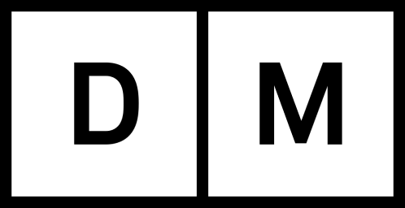

7,591 Wikipedia articles in 116 languages in which images from Category:Images from Digitalt Museum, Norway are used, grouped by language
This overview is based on this XML output of the GLAMorous tool d.d. 26-01-2024.
It was generated using the GLAMorousToHTML Python script.
Also see the documentation of this tool.
Available languages
Nynorsk (2,480)
English (955)
Nynorsk (626)
Swedish (423)
Egyptian Arabic (361)
German (317)
Russian (212)
French (203)
Finnish (199)
Danish (195)
Arabic (130)
Dutch (126)
Italian (121)
Spanish (121)
Polish (110)
Persian (94)
Czech (81)
Ukrainian (68)
Welsh (55)
Portuguese (54)
Catalan (50)
Eastern Armenian (41)
South Azerbaijani (41)
Korean (32)
Japanese (30)
Afrikaans (22)
Hebrew (21)
Standard Estonian (20)
Chinese (20)
Turkish (19)
Kotava (19)
Hungarian (19)
Serbian (18)
Esperanto (18)
Indonesian (15)
Basque (15)
Greek (14)
Slovene (14)
West Frisian (10)
Bulgarian (10)
Malagasy (10)
Ido (9)
Asturian (9)
Lithuanian (8)
Vietnamese (8)
Belarusian (8)
Romanian (7)
Georgian (7)
Latvian (6)
Macedonian (6)
Northern Sami (6)
Uzbek (5)
Icelandic (5)
Cebuano (5)
Azerbaijani (5)
Occitan (4)
Aragonese (4)
Galician (3)
Tamil (3)
Piedmontese (3)
Swahili (3)
Irish (3)
Marathi (3)
Telugu (3)
Thai (3)
Kurmanji (3)
Faroese (3)
Latin (3)
Breton (3)
Cornish (2)
Hausa (2)
Inari Sami (2)
Luxembourgish (2)
Bosnian (2)
Bhojpuri (2)
Sorani (2)
Javanese (2)
Malay (2)
Kashubian (2)
Urdu (2)
Albanian (2)
Bangla (2)
Igbo (2)
Croatian (2)
Western Armenian (2)
Nepali (2)
Ladin (1)
Volapük (1)
Kazakh (1)
Venda (1)
Zulu (1)
Võro (1)
Hill Mari (1)
Manx (1)
Khmer (1)
Bashkir (1)
Old English (1)
Kinyarwanda (1)
Low Eastern Saxon (1)
Buryat (1)
Karachay-Balkar (1)
Minangkabau (1)
Erzya (1)
Fijian (1)
Punjabi (1)
Scots (1)
Bavarian (1)
Somali (1)
Tumbuka (1)
Twi (1)
Paiwan (1)
Cantonese (1)
Gagauz (1)
Malayalam (1)
Chuvash (1)
Classical Chinese (1)
Nynorsk (2,480)
17. mai (grunnlovsdag) |
1704 i Norge |
1814 – Spillet om Danmark og Norge |
Aagot Børseth |
Aagot Nissen |
Aagot Vangen |
Aall |
Aase Bjerkholt |
Aase Bye |
Aaslaug Aasland |
Aasta Hansteen |
Abel Seyler |
Abelhaugen |
Abildgaards gate (Oslo) |
Abildsø gård |
Ada Haug |
Ada Kramm |
Adam Hiorth (forretningsmann) |
Adjutant |
Adolf Bredo Stabell |
Adolf Hoel |
Adolf Norseng |
Afrika (TV-film) |
Aftenpostens gullmedalje |
Agdenes kirke |
Agnes Charlotte Gude |
Agnete (skuespill) |
Agnethe Schibsted-Hansson |
Agnus dei (smykke) |
Aiguillette |
Akerselva |
Akersgata (Oslo) |
Akershusstranda (gate) |
Akkarkrok |
Aksel Gresvig |
Aksel Zachariassen |
Albert Lutuli |
Albin Upp |
Aleksandra Kollontaj |
Alette Engelhart |
Alex Brinchmann |
Alexander Christian Møller |
Alexander Moissi |
Alexandra von Munthe af Morgenstierne |
Alf Brodal |
Alf Cranner |
Alf Hurum |
Alf Prøysen |
Alfred Andersen-Wingar |
Alfred Gjems Selmer |
Alfred Maurstad |
Alfred Sinding-Larsen |
Allongeparykk |
Allround-NM på skøyter 1901 |
Allround-NM på skøyter 1950 for herrer |
Allround-NM på skøyter 1951 for herrer |
Allround-NM på skøyter 1952 for herrer |
Allround-NM på skøyter 1954 for herrer |
Allround-NM på skøyter 1956 for herrer |
Allround-NM på skøyter junior |
Allround-VM på skøyter 1895, menn |
Alma Fahlstrøm |
Alna teglverk |
Alpint under Vinter-OL 1952 |
Alta |
Alterkalk |
Aluminiummuseet |
Alv Kjøs |
Alvdal kirke |
Amalie Døvle |
Amandaprisen |
Amandaprisen 1986 |
Amandaprisen 1987 |
Amandaprisen 1989 |
Amandaprisen 1990 |
Amandaprisen 1991 |
Amandaprisen 1994 |
Amandaprisen 1995 |
Amandaprisen 1996 |
Amandaprisen 2001 |
Ambar |
Anders Beer Wilse |
Anders Jahres medisinske pris |
Anders Lysgaard |
Anders Rambech |
Anders Sandøe Ørsted Bull |
Anders Svarstad |
Andrea Kristine Ingeborg Caspara Møller |
Andreas Aagaard Kiønig |
Andreas Bjercke |
Andreas Karset |
Andreas Lauritz Thune |
Andreas Michael Heiberg |
Andresen (slekt fra Schleswig-Holstein) |
Anita Thallaug |
Anker (slekt) |
Anna Backer |
Anna Grostøl |
Anna Munch |
Anne-Cath. Vestly |
Anne-Lise Reinsfelt |
Anne-Lise Tangstad |
Anne Maries vei (Oslo) |
Anselm Liljeström |
Anton Blumenthal Petersen |
Anton Lædel |
Anton Rønneberg |
Apoteket Hjorten i Oslo |
Arbeidernes ungdomsfylking |
Arbeiderpartiet |
Arild Widerøe |
Arkeologiåret 1817 |
Arkeologiåret 1877 |
Arkeologiåret 1931 |
Arkeologiåret 1955 |
Arkeologiåret 2011 |
Arkitekturåret 1833 |
Arkitekturåret 1878 |
Arkitekturåret 1892 |
Arkitekturåret 1910 |
Arkitekturåret 1923 |
Arkitekturåret 1930 |
Armand Carlsen |
Arne B. Christiansen |
Arne Bjørndal |
Arne Christensen |
Arne Durban |
Arne Remlov |
Arne Rostad |
Arne Skouen |
Arne Sunde |
Arno Berg |
Arnoldus Hille |
Arnoldus von Westen Sylow Koren |
Art brut (kunst) |
Arto Koivisto |
Arups gate (Oslo) |
Arve Opsahl |
Arvid Fladmoe |
Asbestfilter |
Asbjørn Kloster |
Asgaut Steinnes |
Aslaug Dahl |
Asta Nørregaard |
Astra-ekspedisjonen |
Astrid Folstad |
Astrid Lous |
Astrid Sandvik |
Astrup |
August Eiebakke |
August Heiberg Kahrs |
August Nielsen (arkitekt) |
August Schønemann |
August Wilhelm Boesen |
Augusta Antoinette Wergeland Vedøe |
Aurora i blokk Z |
Ave Maria (Valen) |
Avisåret 1857 |
Avisåret 1913 |
Avisåret 1938 |
Avkjølingsspann |
Axel Collett |
Axel Heiberg |
Axel Holst |
Axel Kielland |
Axel Revold |
Axel Seeberg |
Axel Weebe |
B-såpe |
Backer |
Bagasje |
Bakka kirke |
Bakkegata (Oslo) |
Balansekjele |
Balders gate (Oslo) |
Balkeby |
Balsfjord kirke |
Barbara Larssen |
Barbra Ring |
Bardiche |
Barne-TV (NRK) |
Bartekopp |
Basarene |
Bastøy |
Bastøy fengsel |
Bastøy skolehjem |
Bautasteinen på Spinneren |
Beatmusikk |
Beauty and the Beast (sang) |
Begravelse på statens bekostning |
Bekkelaget stasjon |
Bekkelagshøgda |
Bekkelagsraset |
Bekkelagsterrassen (Oslo) |
Bekker i Oslo |
Bekkestua |
Beltekjøretøy |
Benedicte Scheel |
Benjamin Vogt |
Benjamin Wegner |
Bennett Reisebureau |
Benny Södergren |
Bent Røiseland |
Bente Børsum |
Bentse Brug |
Bentsebrugata (Oslo) |
Bentsegata (Oslo) |
Berent Schanche |
Berg (Oslo) |
Bergen filharmoniske orkester |
Bergene |
Berger & Fossekleven Fabrikker |
Bergsbakken |
Berit Aunli |
Berit Brænne |
Berit Hilmo |
Berit Johannessen |
Bernhard Cathrinus Pauss |
Bernhof Ribsskog |
Bernt Anker |
Bernt Anker Sverdrup |
Bernt Johannessen |
Bernt Lund |
Bertha Ræstad |
Berthold Grünfeld |
Betzy Kjelsberg |
Bevarte trehus i Norge fra middelalderen |
Big Chief Jazzband |
Bilitt stasjon |
Bilthugger |
Birger Bergersen |
Birger Kildal |
Birger Ruud |
Birhane |
Birigata (Oslo) |
Birkenes kirke |
Bislett stadion |
Bislettbekken |
Bjarne Amdahl |
Bjarne Brustad |
Bjarne Buntz |
Bjartmar Gjerde |
Bjerggaden (Oslo) |
Bjerkebanen |
Bjølsen |
Bjølsen Valsemølle |
Bjølsenfossen |
Bjølsenparken |
Bjølstad gård |
Bjørn Hougen |
Bjørndaltrilogien |
Bjørnepatruljen |
Black Boy |
Blekkhus |
Blindern |
Bobby McLean |
Bodøsaken |
Bogstadveien (Oslo) |
Bokken Lasson |
Bolesølje |
Bolster |
Bomme |
Bonnevie (slekt) |
Bonnevieprisen |
Bordkniv |
Borghild Niskin |
Borgny |
Borrevannet |
Botsfengselet |
Botsfengselets kirke |
Brannen i Grue kirke |
Brannjern |
Brannvakten |
Bredesen & Jørgensen |
Bredo von Munthe af Morgenstierne (1851–1930) |
Breimsvatnet |
Brekke kirke |
Briskebyveien (Oslo) |
Brit Pettersen |
British American Tobacco Norway |
Britta Lech-Hanssen |
Broch (slekt) |
Brochmann (slekt) |
Broderi |
Brud |
Brudekjolen (1914) |
Brudekrone |
Brudeskje |
Brugata (Oslo) |
Brukskunst |
Bryggen i Bergen |
Bryllup |
Bryllupet mellom kronprins Olav og prinsesse Märtha |
Bryn stasjon |
Brynjulf Bull |
Bull |
Bunadsølv |
Bursring |
Busleik |
Busserull |
Bydel Østensjø |
Bygningene i friluftsmuseet på Norsk Folkemuseum |
Byløkke |
Bymarken |
Bæivasgiedde kapell |
Bærums Verk hovedgård |
Bøkker |
Børsa kirke |
C.J. Hambro |
C.N.R. Aamundsen |
C. P. Larsen |
COSLRival |
Calmeyergatens Misjonshus |
Caltex |
Camilla Wicks |
Cappelen (slekt) |
Carl A. Høyers Stomatolfabrikk |
Carl Abraham Pihl |
Carl Adolph Dahl |
Carl Andreas Fougstad |
Carl Dørnberger |
Carl Ferdinand Linthoe |
Carl Frederik Ferdinand Stanley |
Carl Frederik Vogt |
Carl Fredric von Breda |
Carl Fredrik Petlund |
Carl Frithjof Smith |
Carl Johan Anker |
Carl Julius Lorch |
Carl Michalsen |
Carl Peter Parelius Essendrop |
Carl Struve |
Carl Størmer |
Carl Sundt-Hansen |
Carsten Anker |
Carsten Byhring |
Carsten Tank |
Caspar Herman Hausmann |
Caspar von Cappelen |
Cathinka Guldberg |
Central Jamaat-e Ahl-e Sunnat |
Centrum |
Champagneglass |
Christensen (slekt fra Gjerpen) |
Christian Adolph Diriks |
Christian August Lorentzen |
Christian Christensen Kollerud |
Christian Ditlev Adolph Arenfeldt |
Christian Eggen (maler) |
Christian Frederik |
Christian H. Grosch |
Christian Horneman |
Christian IVs sal |
Christian Krohgs gate (Oslo) |
Christian Lasson |
Christian Linthoe |
Christian Magnus Falsen |
Christian Reuter |
Christian Sandal |
Christian Sinding |
Christian Skredsvig |
Christian Stockfleth |
Christian Sørenssen |
Christian Thams |
Christian Wisbech (1869–1922) |
Christiane Schreiber |
Christiania Bank og Kreditkasse |
Christiania Borgerskole |
Christiania Glasmagasin |
Christiania Theater |
Christiania Tivoli |
Christinedal - Harry Fetts vei 10 |
Christopher Borch |
Christopher Fougner (1876–1950) |
Christopher Frimann Omsen |
Christopher Hornsrud |
Christopher Knudsen |
Christopher Ridder |
Christopher Tostrup |
Christopher Tostrup Paus |
Clara Mørch |
Clara Tschudi |
Clara Ursin |
Clarion Collection Hotel Gabelshus |
Claus Bendeke |
Claus Pavels |
Club 7 |
Cocktailshaker |
Colbjørnsens gate (Oslo) |
Collett |
Colletts gate (Oslo) |
Conrad Arnesen |
Constance Bruun |
Constance Nygaard |
Constance Wiel Schram |
Coop Norge |
Corneliussen (slekt) |
Cup |
Cæciliaforeningen |
DS «Alpha» |
DS «Anderson» |
DS «Asgerd» |
DS «Bastø» (1885) |
DS «Forlandet» |
DS «Globe VIII» (1936) |
DS «Hamar» |
DS «Isbjørn» |
DS «Jernbarden» |
DS «Juno» (1886) |
DS «Lyngenfjord» (1903) |
DS «Skreia» |
DS «Tordenskjold» (1876) |
DS «Vikingen» (1900) |
DS «Viola» |
Dagfinn Grønoset |
Dagfinn Hauge |
Dagfinn Tveito |
Dagmar Myhrvold |
Dal kirke |
Dale of Norway |
Danmark (øy) |
David-Andersen (selskap) |
De Blå Omnibusser |
De Samiske Samlingers Museums- og historielag |
De VI olympiske vinterleker Oslo 1952 |
Dedichen |
Degernes kirke |
Dekoktbøsse |
Demarkasjonslinjen i 1940 |
Den Norske Hesteskosømfabrik |
Den norske Nordhavsekspedisjon 1876–78 |
Den norske løve |
Dessertkniv |
Det Ankerske Waisenhus |
Det Harmoniske Akademis Tegneskole |
Det Norske Akademi for Språk og Litteratur |
Det engelske kvarter |
Det første Wedel-ministeriet |
Det gule chor |
Det kongelige hoff |
Det kongelige slott |
Det norske Theater |
Det rare |
Didrich von Cappelen |
Didrik Arup Seip |
Diesen |
Dietrichson (slekt) |
DigitaltMuseum |
Dikke Eger |
Diktafon |
Dobbeltbolle |
Dobbeltskje |
Dobbeltvev |
Dokkveien (Oslo) |
Dolstad kirke |
Domus Juridica |
Dovrebanen |
Down Town Key Club |
Dragkiste |
Dragset Verk |
Draktspenne |
Drammeglass |
Drammensveien (Oslo) |
Drikkehorn |
Drikkekanne |
Dronninghavn |
Dugnad |
Dukkemann |
Dverberg kirke |
Dåpskanon |
Dødsfall i 2001 |
Dødsfall i 2002 |
Dødsfall i 2004 |
Dødsfall i 2005 |
Dødsfall i 2006 |
Dødsfall i 2007 |
Dødsfall i 2008 |
Dødsfall i 2009 |
Dødsfall i 2011 |
Dødsfall i 2013 |
Dødsfall i 2023 |
Døpefat |
Düsseldorfskolen |
EM på skøyter 1904, menn |
EM på skøyter 1923, menn |
EM på skøyter 1962, menn |
EM på skøyter 1964, menn |
EM på skøyter 1968, menn |
Eckhoff |
Edderkoppen (TV-episode) |
Edel Eckblad |
Edvard Drabløs |
Egeberg (slekt fra Sjælland) |
Egebergs Ærespris |
Egede-Nissen |
Egelands jernverk |
Egertorget (Oslo) |
Egil Johansen (1934–1998) |
Egil Åsman |
Eidsfos Jernverk |
Eidsvollsbygningen |
Eigil Nansen |
Eilert Dahl |
Eilert Sundts gate (Oslo) |
Eilif Peterssen |
Einar Berntsen |
Einar Engelstad (arkitekt) |
Einar Frogner |
Einar Gerhardsen |
Einar Gerhardsens andre regjering |
Einar Gerhardsens første regjering |
Einar Gerhardsens tredje regjering |
Einar Sagstuen |
Einar Sissener |
Einar Skavlan |
Einar Skjæraasen |
Eindride Slaatto |
Einskilskopp |
Eivind Berggrav |
Eivind Eckbo (1873–1966) |
Eivind Engelstad |
Eivind G. Tveiten |
Eivind Solberg |
Ekeberg gård (Oslo) |
Ekeberghallene |
Ekebergkolonien |
Ekebergrestauranten |
Ekebergskrenten |
Ekely |
Ekman, Smith & Michalsen |
Ekofiskfeltet |
Eksplosjonen på Grønlikaia |
Elias Corneliussen |
Elisa Wiborg |
Elisabeth Granneman |
Elisabeth Schweigaard Selmer |
Ella Anker |
Ella Hval |
Ellen Andrea |
Ellen Gulbranson |
Ellen Schytte-Jacobsen |
Elling Holst |
Elsa Laula Renberg |
Elsa Skjerven |
Else Breen |
Elvebakken videregående skole |
Elvegata (Oslo) |
Emanuel Minos |
Embetsmannsstaten |
Emil Aubert |
Emma Matthiasen |
Empirekvartalet |
En fortid |
Enerhaugen |
Enga (Oslo) |
Enige og tro inntil Dovre faller |
Enok Sletengen |
Epålett |
Erica Darbow |
Erik Brofoss |
Erik Diesen |
Erik Pløen |
Erlandssølje |
Erling Audensen |
Erling Bjørnson |
Erling Lorck |
Erling Maartmann |
Erling Merton |
Erling Wikborg |
Erna Schøyen |
Ernst Glaser |
Ernst Motzfeldt |
Espen Skjønberg |
Esviken |
Et døgn uten løgn |
Eugen Skjønberg |
Europavei 6 (Nordland) |
Eurovision Song Contest 1969 |
Eva Lunde |
Evald Pauss |
Evald Rygh |
Even Godager |
Even Thorkildsen Lande |
Even Thorsen |
Eyvind Getz |
FLK «Norhval» |
FLK «Ronald» (1920) |
FLK «Sir James Clark Ross» (1930) |
FLK «Suderøy» |
FLK «Thorshøvdi» |
FLK «Vikingen» |
Fadermorder |
Falsen |
Fangedrakt |
Fant (film) |
Fattigstugangen (Oslo) |
Fearnley & Eger |
Fearnleys olympiske ærespris |
Feltflaske |
Femmila i Holmenkollen |
Fergesambandet Horten–Moss |
Ferje |
Festningsplassen (Oslo) |
Fetsund bru |
Filigran |
Filmåret 1920 |
Filmåret 1930 |
Filmåret 2001 |
Filosofgangen (Oslo) |
Finn Carling |
Finn Eriksen |
Finn Krafft |
Finn Qvale |
Firda videregående skole |
Fiskekniv |
Fiskekrok |
Fjeldhus Bruk |
Fjols til fjells |
Fjærland kirke |
Fjærpenn |
Flaskebrikke |
Flaskefor |
Flaskekasse |
Flaskekurv |
Flateby |
Fleischer |
Fleksnes fataliteter |
Flisberget (Oslo) |
Flosshatt |
Flukten fra Oslo etter 9. april 1940 |
Flyndreskje |
Flå kirke (Buskerud) |
Fløtemugge |
Fløteskummer |
Fløyte |
Foldekniv |
Foldereid kirke |
Fonduegaffel |
For sin kjærlighets skyld |
Forsa |
Forskjærgaffel |
Forskjærkniv |
Forsvarets Stabsmusikkorps |
Fortinning |
Foss Bryggeri |
Fottøy |
Fougner (slekt) |
Framneshaven (Tinker’n) |
Francis Bull |
Francis Hagerup |
Frank Hansen |
Fred. Olsen (1857–1933) |
Fred. Olsen (1929–) |
Frederik Bekkevold |
Frederik Christian Lindeman |
Frederik Collett |
Frederik Gottschalk von Haxthausen |
Frederik Heidmann |
Frederik Julius Bech |
Frederik Petersen |
Frederik Schmidt |
Frederik Wilhelm Stabell |
Frederik Wilhelm Treschow |
Frederik av Hessen |
Frederiks gate (Oslo) |
Frederiks gate 3 |
Fredrik Christian Sand |
Fredrik Christian Wildhagen |
Fredrik Monsen |
Fredrik Vogt |
Fredrikke Nielsen |
Fredrikke Schmedling |
Freia |
Freiaparken |
Fremad marsj! |
Fremskrittspartiet |
Frida Hansen |
Fridthjov Anderssen |
Fridtjov Birkeli |
Friggfeltet |
Frigjøringsdagen (Norge) |
Frimann Falck Clausen |
Frithjof M. Plahte |
Frits Hansen |
Frits Thaulow |
Fritz Huitfeldt (1851–1938) |
Frogner Hovedgård |
Frogner stadion |
Frognerparken |
Frognerseteren |
Fru Biksby og skinnkåpen |
Fru Inger til Østråt (film) |
Fru Ragna Nielsens skole |
Fruktkniv |
Frydenlund Bryggerier |
Frøen stasjon |
Frølich (slekt) |
Frønsvollen |
Funny Boys |
Furnes kirke |
Fylkesvei 7500 |
Fyrfat |
Færøyene under første verdenskrig |
G.C.Rieber & Co |
Gabels gate (Oslo) |
Gabriel Gustafson |
Gabriel J. Udnæs |
Gabriel Kielland (1871–1960) |
Gabriel Lund (1773–1832) |
Gabriel Skagestad |
Gabrielle Bidenkap |
Gade (slekt) |
Gaffel |
Gallauniform |
Gamle Aker kirke |
Gamle Hunn kirke |
Gamle Norges Bank |
Gamle Tollbod |
Gamle furutrær |
Gamlebyen gravlund |
Geir Kjetsaa |
Geitastrand kirke |
Georg Burchard Jersin |
Georg Carl Buonaparte Heyerdahl |
Georg Jacob Bull |
Georg Jacob Stousland |
Georg Prahl Harbitz |
Georg Sverdrup |
Georg Ulrich Wasmuth |
Gerd Nyquist |
Gerda Christophersen |
Gerda Ring |
Gerhard Schjelderup |
Gidske Anderson |
Gipsmaker |
Gisken Wildenvey |
Gisle Straume |
Gjermund Eggen |
Gjerstad |
Gjerstad kirke (Agder) |
Gjert Andersen |
Gjertsens skole |
Gjetslebolle |
Gjørtler |
GlasMagasinet |
Glibb |
Glomfjord kraftverk |
Gram (slekt) |
Grand Hotel (Molde) |
Granstangen (Oslo) |
Gravfølge |
Grefsen |
Grefsenkollveien (Oslo) |
Grefsenplatået |
Grefsenåsen |
Grefsheim |
Gregers Winther Wulfsberg |
Gressbanen (Oslo) |
Gressholmen sjøflyhavn |
Greta Molander |
Grete Brunvoll |
Grete Kummen |
Grete Prytz Kittelsen |
Grev (redskap) |
Greve (slekt) |
Greveveien (Oslo) |
Grimsrød gård |
Grini fangeleir |
Grorud Tekstilfabrik |
Grundthøvel |
Grutseter kirke |
Gryteunderlag |
Grytten kirke |
Grytviken kirke |
Grønlandsleiret (Oslo) |
Grønlia |
Gud wære med os-gården |
Gudmund Hoel |
Gudrun Klausen |
Gunhild Schytte-Jacobsen |
Gunnar Pedersen AS |
Gunnar Utsond |
Gurdwara Sri Guru Nanak Dev Ji |
Guri Stormoen |
Guro (bok) |
Gustav Adolph Lammers |
Gustav Borgen |
Gustav Emil Holter |
Gustav Guldberg (1897–1938) |
Gustav Lærum |
Gustav Peter Blom |
Gutorm Gjessing |
Guttorm Hansen |
Gyldenløves gate (Oslo) |
Gïeleaernie |
Gøril Havrevold |
Haagen Ringnes |
Haakon Ditlef Lowzow |
Haakon Shetelig |
Haakon VII |
Haakon VIIs gate (Oslo) |
Hajnnhojnn i bajnn og 13 andre trønderviser |
Halde |
Haldis Halvorsen |
Halfdan Ditlev-Simonsen |
Halfdan Egedius |
Halfdan Gyth Dehli |
Halfdan Møller |
Halfdan Strøm |
Hallingdal |
Hallings skole |
Halvard Hoff |
Halvard Lange |
Halvdan Koht |
Halvor Heyerdahl Rasch |
Halvor P. Eggan |
Halvor Solberg |
Hamar IL bandy |
Hamar og Omland Bilruter |
Hammerfest |
Hammersborg torg |
Hanken (Oslo) |
Hanna Resvoll-Holmsen |
Hannah Ryggen |
Hanne Skram |
Hans Aall |
Hans Bille |
Hans Christian Petersen |
Hans E. Kinck |
Hans Edvard Wisløff |
Hans Gulbranson |
Hans H. Rode |
Hans Hansen Grimelund |
Hans Haslum |
Hans Heiberg |
Hans Hein Nysom |
Hans Horn |
Hans Høegh |
Hans Jacob Stabel |
Hans Jæger |
Hans Kirkegaard Fleischer |
Hans Leganger Reusch |
Hans Midelfart |
Hans Rasmus Astrup (1831–1898) |
Hans Ryggen |
Hans Skabo |
Hans Thomas Meinich |
Hansteen (slekt) |
Hansteens gate (Oslo) |
Harald Bertrand |
Harald Grønningen |
Harald Hals |
Harald Løvenskiold |
Harald Meltzer |
Harald Nielsen |
Harald Olaf Hugo Hals |
Harald Olsen |
Harald Otto |
Harald Renbjør |
Harald Sohlberg |
Harald Sverdrup |
Harald Tusberg |
Harald Wergeland (1904–89) |
Harbitz (slekt) |
Hardangerbunad |
Harelabbveien (Oslo) |
Harry Kvebæk |
Hartvig Bache-Wiig |
Hartvig Marcus Lassen |
Hartvig Nissens skole |
Hattespenne |
Hauketo |
Hausmanns bru |
Havnebanen |
Havnelageret |
Hedevig Lund |
Hegdehaugsveien (Oslo) |
Hegvik kirke |
Heibergs gate (Oslo) |
Heimferd |
Heinrich August Grosch |
Heinrich Jürgensen |
Helena Takalo |
Helene Andersen |
Helene Gundersen |
Helga Backe |
Helge Hagerup |
Helge Ingstad |
Helge Reiss |
Helge Sivertsen |
Helsedirektoratet (1945–1993) |
Helsetrøye |
Heltzen |
Helvetesdebatten |
Henie Onstad Kunstsenter |
Henki Kolstad |
Henning Astrup (1864–1896) |
Henny Moan |
Henny Skjønberg |
Henriette Bie Lorentzen |
Henriette Pauss |
Henriette Schønberg Erken |
Henriette Wegner |
Henriette Wegners paviljong |
Henrik Ameln |
Henrik Backer |
Henrik Børseth |
Henrik Carstensen |
Henrik Frederik Arild Sibbern |
Henrik Grosch |
Henrik Groth |
Henrik Hille |
Henrik Homan |
Henrik Ibsen |
Henrik Laurentius Helliesen |
Henrik Lund |
Henrik Nissen d.y. |
Henrik Sørensen |
Henrik Thrap-Meyer |
Henrik Wergelands allé (Oslo) |
Henry Lehre |
Herman Anker |
Herman G. Gade |
Herman Johan Foss Reimers |
Herman Wedel-Jarlsberg |
Herman Wedel-Jarlsberg (1818–1888) |
Heyerdahl |
Hidra kirke |
Hieronymus Heyerdahl (1773–1847) |
Hildur Andersen |
Hildur Nilsen |
Hilkka Riihivuori |
Hilmar Stigum |
Himmelseng |
Hjalmar Andersen |
Hjalmar Broch |
Hjalmar Haalke |
Hjalmar Kielland Wergeland |
Hjalmar S. Bakstad |
Hjemmestyrkene |
Hjertesølje |
Hjort (slekt) |
Hjula Væverier |
Hof kirke (Åsnes) |
Hoff kirke |
Hoffjegermester |
Holk (oppbevaringskar) |
Holmenkollen Skifestival |
Holmenkollmedaljen |
Holmens gate (Oslo) |
Holmsen |
Holocaust i Norge |
Holtangården (Oslo) |
Holtegata (Oslo) |
Honoria Dietrichson |
Hordaland |
Horneman (slekt) |
Hornlue |
Hornring |
Horten |
Horten ingeniørhøgskole |
Horten kirke |
Hospitalsgata (Oslo) |
Houens fonds diplom |
Hovinbekken |
Hovinsholm |
Hroar Dege |
Hugo Conrad Munthe-Kaas |
Hugo Lous Mohr |
Hugo Munthe-Kaas (1879) |
Hugo Wathne |
Huitfeldt |
Huitfeldts gate (Oslo) |
Hurtigløp på skøyter under Vinter-OL 1952 |
Hurtigløp på skøyter under Vinter-OL 1960 – 1500 meter menn |
Husmor |
Husmorskole |
Hval kirke |
Hvitvinsglass |
Hydro Høyanger Metallverk |
Hylk |
Håkon Kyllingmark |
Håkon Mjøen |
Håkon Pedersen (skøyteløper) |
Håkon Vestly |
Håndkolorering |
Håndverksfag og håndverksteknikker |
Hårarbeid |
Hårda viljor |
Hægebostad kirke |
Høegh |
Høie Fabrikker |
Hølandsgata (Oslo) |
Hølonda kirke |
Hønefoss kirke (1862–2010) |
Hønse-Lovisa |
Høvik |
Høyanger |
Høyanger K1 kraftverk |
Høyanger kraftverk |
Høybakken |
Høybråten (Oslo) |
Høyesterettsjustitiarius |
Høyre |
Høytorp fort |
ISO 3103 |
I en sprukken rønne nedi Vika |
Ibsen (slekt fra Stege) |
Ida Hellesen |
Ideal flatbrødfabrikk |
Immanuels kirke |
Industrigata (Oslo) |
Inga Bucher |
Inga Lærum Liebich |
Ingeborg Krafft |
Ingebrigt Davik |
Ingier (slekt) |
Ingierstrand bad |
Ingrid Wigernæs |
Isak Kimoe |
Isak Nilssen Botnen |
Isbøtte |
Isdrift |
Ivar Aasen |
Ivar Formo |
Ivar Lo-Johansson |
Ivar Lykke |
Ivar Lykkes regjering |
Ivar Medaas |
Ivar Næss |
Iver Gundersen Øvstrud |
Ivo Caprino |
J.L. Aamundsen |
J. Andersen Aars |
Jaastadfela |
Jack Fjeldstad |
Jacob Aall |
Jacob Aalls gate (Oslo) |
Jacob Calmeyer |
Jacob Coning |
Jacob Dybwad |
Jacob Hersleb Darre |
Jacob Munch |
Jacob Nielsen |
Jacob Rasch |
Jacob Steen |
Jacob Thurmann Ihlen |
Jacob Wulfsberg |
Jacqueline du Bief |
Jakob Weidemann |
Jakobsbakken |
Jaktflaske |
James Collett (1728–1794) |
Jan Lindvall |
Jan Wølner |
Janka Polanyi |
Janny Grip Isachsen |
Janteloven |
Janusfabrikken |
Jar kirke |
Jarand Rønjom |
Jarlsborgveien (Oslo) |
Jarlsø Verft |
Jazz i Norge |
Jens-Anton Poulsson |
Jens Bjørneboe |
Jens Frølich Tandberg |
Jens Hundseid |
Jens Hundseids regjering |
Jens Rolfsen |
Jens Schow Fabricius |
Jens Teigen |
Jens von der Lippe |
Jernbanegata (Oslo) |
Jernbanetorget stasjon |
Jess Anker |
Jesuittparagrafen |
Jo Tenfjord |
Jo Vestly |
Joachim Frich |
Joachim Rønneberg |
Johan Anton Lippestad |
Johan Bernhard Hjort |
Johan Bojer |
Johan Brun |
Johan Christian Castberg |
Johan Diederich Behrens |
Johan E. Mellbye |
Johan Ellefsen (arkitekt) |
Johan Evjen |
Johan Gunder Adler |
Johan Haanes |
Johan Henrik Wiers-Jenssen |
Johan Jacob Bennetter |
Johan Ludwig Mowinckel |
Johan Ludwig Mowinckels første regjering |
Johan Ludwig Mowinckels tredje regjering |
Johan Nygaardsvold |
Johan Nygaardsvolds regjering |
Johan Randulf Bull |
Johan Scharffenberg |
Johan Steen |
Johan Storm Munch (arkitekt) |
Johan Vestly |
Johanne Brun |
Johanne Regine Reimers |
Johanne Vogt Lie |
Johannes Arneson |
Johannes Bergh (1837–1906) |
Johannes Brun |
Johannes Nilssøn Skaar |
Johannesgata (Oslo) |
John Collett (1758–1810) |
John Hansen Budalsplads |
John Hansen Sørbrøden |
John Moses |
John Savio |
John Tverdahl |
John Wolden |
Jonas Schanche Jonasen |
Jonsokbryllup |
Jordalgata (Oslo) |
Josefines gate (Oslo) |
Julie Backer |
Julie Lampe |
Julius Nicolaysen |
Just Gude-Smith |
Jødeparagrafen |
Jørgen Aall |
Jørgen Aall (1806–1894) |
Jørgen Gjerdrum |
Jørgen Skeel |
Jørgen Sørensen |
Jøtul (selskap) |
KNA-hotellet i Oslo |
Kaffeheis |
Kaffekanne |
Kaffekjele |
Kaffekule |
Kagge |
Kaldnes Mekaniske Verksted |
Kalle Løchen |
Kallhovde |
Kammerherre |
Kampen om tungtvannet (film) |
Kane (drikkekar) |
Kanten (gate) |
Kantineflaske |
Kaos og Bjørnar |
Kapselapparat |
Kaptein Sorte Bill |
Karaffel |
Kardemommeloven |
Karding |
Karen Elieson |
Karenslyst |
Kari |
Kari Borg Mannsåker |
Kari Simonsen |
Kari Skjønsberg |
Karl Andersen (musiker) |
Karl Bilgrei |
Karl Evang |
Karl III Johan |
Karl Jensson |
Karl Johans gate |
Karl Meyer |
Karl Sigurdsson |
Karl Uchermann |
Karl den XIIs gate |
Karveskurd |
Kasper Idland |
Kassasjon |
Kastellveien (Oslo) |
Katnosa gård |
Kepi |
Kielfreden |
Kilebygda kirke |
Kirkegårdsgangen (Oslo) |
Kirker i Norge |
Kirsten Langbo |
Kirsti Sparboe |
Kiste |
Kistebord |
Kistestol |
Kistrand kirke |
Kitty Kielland |
Kitty Wentzel |
Kjell Andreassen |
Kjell Aukrust |
Kjell Bækkelund |
Kjell Thue |
Kjenge |
Kjærlighetsstien (Oslo) |
Kjøllefjord |
Kjøllefjord gamle kirke |
Klatremus og de andre dyrene i Hakkebakkeskogen |
Klattiklatt drar til negerland |
Klemetsrud skole |
Klingenberggata (Oslo) |
Klipp fra «Prospektkort»-serien |
Klostergata (Moss) |
Klostergata 14 (Moss) |
Kløvflaske |
Knekt |
Kneppeskjærutstikkeren |
Knespenne |
Knud Bull |
Knud Graah |
Knut Haukelid |
Knut Risan |
Knut Ødegård |
Kobberslager |
Kofte |
Kolrosing |
Kommager |
Kommunestyrevalget 1910 |
Kommunestyrevalget 1934 |
Kongelig Norsk Automobilklub |
Kongens gate (Oslo) |
Kongens gate 17 (Moss) |
Kongens gate 22 (Moss) |
Kongens gate 26 (Moss) |
Kongsberg Våpenfabrikk |
Kongshavn |
Konow |
Konrad Galaaen |
Konrad Nordahl |
Kontraskjæret |
Koren |
Kranes konditori |
Kravatt |
Krepsekniv |
Kretsen |
Krigskorset |
Kristen Arnesen |
Kristen Holbø |
Kristen Kvello |
Kristian Bakken |
Kristian Birkeland |
Kristian Brandt |
Kristiane Frisak |
Kristiania-bohemen |
Kristiansand børs |
Kristine Bonnevie |
Kristofer Lehmkuhl |
Krohgstøtten |
Krukke (oppbevaringskar) |
Krus |
Kubbestol |
Kuben videregående skole |
Kullmann-saken |
Kulturdepartementets priser for barne- og ungdomslitteratur |
Kunstnernes restaurant Blom |
Kunståret 1800 |
Kunståret 1822 |
Kunståret 1882 |
Kunståret 1898 |
Kunståret 1900 |
Kunståret 1901 |
Kunståret 1904 |
Kunståret 1920 |
Kunståret 1962 |
Kunståret 1982 |
Kunståret 1990 |
Kunståret 2001 |
Kvinnelig stemmerett |
Kværner (selskap) |
Kværner Brug |
Kyse |
Kåre Orud |
L.W.Th. Bratz |
Labrofossen |
Ladegangene (Oslo) |
Lager Nordstrand |
Lagertha Munthe |
Lagging |
Laila Dalseth |
Lakkegata (Oslo) |
Lallakroken (Oslo) |
Lambertseter senter |
Lambertseterveien (Oslo) |
Landsmøte |
Lange (etternavn) |
Langleiken (Oslo) |
Langset kirke |
Lars-Arne Bölling |
Lars Andreas Oftedahl |
Lars Backer |
Lars Erik Eriksen |
Lars Hertervig |
Lars Johannes Irgens |
Lars Larsen Forsæth |
Lars Larsen Ingulfsvand |
Lars Roverud |
Lars Tvinde |
Laugspokal |
Laura Gundersen |
Laurits |
Lauritz Bergendahl |
Lauritz Bergendahls gate (Stavanger) |
Lauritz Birkeland |
Lauritz Sand |
Lauritz Weidemann |
Lavik kirke |
Leiegårdene i Oslos historiske murby |
Leif Amble-Næss |
Leif Andreas Larsen (1898–1978) |
Leif Enger |
Leif Juster |
Lensvik kirke |
Leonardstatuetten |
Liadalen (Oslo) |
Lille Idas blomster |
Lille Kirkebakke (Oslo) |
Lilleaker |
Lillebil Ibsen |
Lilleborg (selskap) |
Lillebror og Knerten |
Lillehammer Kunstmuseum |
Lillemor von Hanno |
Lillienskiold |
Lily Weiser-Aall |
Lindeman (slekt) |
Lindern |
Lisa Kristoffersen |
Liste over Norges kirke- og undervisningsministre |
Liste over Norges monarker |
Liste over Norges revisjonsministre |
Liste over Norges statsministre |
Liste over eidsvollsmenn |
Liste over flytende hvalkokerier |
Liste over kirker i Finnmark |
Liste over kirker i Oslo |
Liste over kjente sarpinger |
Liste over kjente skiensfolk |
Liste over kulturminner i Asker |
Liste over kulturminner i Bærum |
Liste over kulturminner i Elverum |
Liste over kulturminner i Gjerstad |
Liste over kulturminner i Gjøvik |
Liste over kulturminner i Halden |
Liste over kulturminner i Karasjok |
Liste over kulturminner i Kongsvinger |
Liste over kulturminner i Marka (Oslo) |
Liste over kulturminner i Ringsaker |
Liste over kulturminner i Sentrum (Oslo) |
Liste over kulturminner i Tokke |
Liste over kulturminner i bydel Bjerke |
Liste over kulturminner i bydel Frogner |
Liste over kulturminner i bydel Grünerløkka |
Liste over kulturminner i bydel St. Hanshaugen |
Liste over kulturminner i bydel Ullern |
Liste over kulturminner i bydel Vestre Aker |
Liste over kulturminner i bydel Østensjø |
Liste over kunstverk på norske frimerker |
Liste over lagtingspresidenter |
Liste over malerier i utstillingen Kunst og ukunst |
Liste over mottakere av Nobels fredspris |
Liste over norgesmestere i langrenn |
Liste over odelstingspresidenter |
Liste over ordførere i Aker |
Liste over ordførere i Bærum |
Liste over ordførere i Drammen |
Liste over ordførere i Elverum |
Liste over ordførere i Hamar |
Liste over ordførere i Kolvereid |
Liste over ordførere i Vang (Hedmark) |
Liste over personer fra Oslo |
Liste over presidenter i Norges Skøyteforbund |
Liste over sesonger av NM i fotball for menn |
Liste over stasjoner på T-banen i Oslo |
Liste over statsledere i 1959 |
Liste over statsledere i 1960 |
Liste over statsledere i 1961 |
Liste over statsledere i 1962 |
Liste over stortingsrepresentanter 1954–1957 |
Liste over stortingsrepresentanter 1958–1961 |
Liste over stortingsrepresentanter 1961–1965 |
Liste over stortingsrepresentanter 1973–1977 |
Liste over stortingsrepresentanter 1977–1981 |
Liste over stortingsrepresentanter for Kristiansund |
Liste over stortingsrepresentanter for Nord-Trøndelag |
Liste over stortingsrepresentanter for Risør |
Liste over stortingsrepresentanter for Sør-Trøndelag |
Liste over stortingsrepresentanter for Trondheim og Levanger |
Liste over sysselmenn og sysselmestere på Svalbard |
Liste over tidligere offentlige skoler i Oslo |
Litteraturåret 1850 |
Litteraturåret 1854 |
Litteraturåret 1899 |
Litteraturåret 1920 |
Litteraturåret 1926 |
Litteraturåret 1945 |
Litteraturåret 1959 |
Litteraturåret 2001 |
Litteraturåret 2008 |
Litteraturåret 2009 |
Liv Thorsen |
Liv Ullmann |
Ljan |
Lofthusopprøret |
Lommelerke |
Lorange (slekt) |
Lorry (restaurant) |
Losjakke |
Loslue |
Louise Brun |
Lous (slekt) |
Ludvig Bergh |
Ludvig Frederik Brock |
Ludvig G. Braathen |
Ludvig Irgens-Jensen |
Ludvig Müller |
Ludwig Wittgenstein |
Lully Krohn |
Lund (slekt) |
Lusekofte |
Luster |
Lyn 1896 Fotballklubb |
Lyrikkåret 1813 |
Lyrikkåret 1896 |
Lyrikkåret 1900 |
Lyrikkåret 1926 |
Lyrikkåret 1966 |
Lyrikkåret 2008 |
Lystgård |
Løvenskiold |
Løvliveien (Oslo) |
MS «Holger Danske» |
Magda Blanc |
Magdalena Berg |
Magistraten i Christiania |
Magnhild Haalke |
Magni Wentzel |
Magnus Andersen (redaktør) |
Magnus Nilssen |
Majorstuen |
Majorstuen kirke |
Majorstuhuset |
Majorstuveien (Oslo) |
Makko |
Malje |
Maljespenne |
Mamma (TV-serie) |
Manglerud politistasjon |
Mangletre |
Marcus Gjøe Rosenkrantz |
Marcus Grønvold |
Marcus Pløen |
Marentius Thams |
Margarete Corneliussen |
Margrethe Parm |
Margrethe von der Lippe |
Mari Maurstad |
Maria Dehli |
Mariakirken i Tønsberg |
Marie Magdalena Rustad |
Marie Takvam |
Marie Tannæs |
Marit Halset |
Marit Myrmæl |
Marthinius Skøien |
Martinius Abildgaard |
Maschmanns gate (Oslo) |
Mathia Collett |
Mathias Andreas Boye |
Mathias Sommerhielm |
Mathias Wilhelm Eckhoff |
Mathieu Berckenhoff |
Mathilde Smith |
Matti Pitkänen |
Maurstad (slekt) |
Medalje |
Medaljen for edel dåd |
Medmenneske |
Melkebøtte |
Melkehylle |
Melkekrakk |
Melkeringe |
Melkesil |
Melkespann |
Melkestamp |
Melkestave |
Mellemgaten (Oslo) |
Melodi Grand Prix |
Melodi Grand Prix 1966 |
Melodi Grand Prix 1967 |
Melodi Grand Prix 1969 |
Meltzer (slekt) |
Merete Lie Hoel |
Merete Skavlan |
Mette Lange-Nielsen |
Meyer (slekt fra Fron) |
Michael Krohn (skuespiller) |
Michaloff Wigdehl |
Michalsen, Smith, Michalsen |
Michalsen & Dahl |
Michalsen & Michalsen |
Midelfart |
Midtstubakken |
Mikkel Bjønness-Jacobsen |
Mikkel Mandt |
Millionær for en aften |
Milly Bergh |
Mimi Falsen |
Minerva (bil) |
Mo kirke (Nord-Odal) |
Mogens Thorsen |
Mogens Thorsens og Hustrus Stiftelse |
Mohr-Westphals vekt |
Mokkakopp |
Molla Mallory |
Mona (TV-film) |
Monna Tandberg |
Moritz Nachtstern |
Mormor og de åtte ungene |
Morten Leuch |
Morten Müller |
Moss Gassverk |
Moss Jernverk |
Munch |
Munkebakken |
Munkedamsveien (Oslo) |
Munkerud |
Munkholmen |
Munthe |
Munthes plass (Oslo) |
Murbyen (Oslo) |
Musikantene kommer til byen |
Musikkåret 1850 |
Musikkåret 1882 |
Musikkåret 1895 |
Musikkåret 1924 |
Musikkåret 1927 |
Musikkåret 1930 |
Musikkåret 1941 |
Musikkåret 1972 |
Musikkåret 1978 |
Musikkåret 1992 |
Musikkåret 2004 |
Musikkåret 2009 |
Myking kirke |
Myrens Verksted |
Møre og Romsdal |
Müller (etternavn) |
N.M. Thune |
NM på skøyter, allround for herrer junior |
NSB type 23 |
Nahppi |
Namdalseid kirke |
Nanna Broch |
Narbuvoll kirke |
Narve Skarpmoen |
Nationaltheatret |
Nattmann |
Naturalhusholdning |
Nedre Hammersborggate (Oslo) |
Nedre Kalbakkvei (Oslo) |
Nedre Skogvei (Oslo) |
Nes kirke (Ringerike) |
Nesseby kirke |
Nic Schiøll |
Nicolai Johannsen |
Nicolai Lumholtz |
Nicolai Nielsen |
Nicolai Ramm Østgaard |
Nicolai Wergeland |
Nicolay Nicolaysen |
Nicolay Wolf |
Niels Andreas Vibe |
Niels Bang Wingaard |
Niels Fredriksen Dyhren |
Niels Juels gate (Oslo) |
Niels Manuel Jaquesson |
Niels Werring |
Nikkers |
Nikolai Astrup |
Nikolai Nissen Paus |
Nikolai Ramm Østgaard |
Nils Gude |
Nils Langhelle |
Nils Ole Oftebro |
Nils Retterstøl |
Nils Sletbak |
Nils Wichstrøm |
Nisseberget |
Nobelprisen i litteratur |
Nomadisk husdyrhold |
Nominasjoner til Nordisk råds litteraturpris fra Norge |
Nora Gulbrandsen |
Nordberg gård (Oslo) |
Nordbergveien (Oslo) |
Nordfjordbunad |
Nordiske grener under Vinter-OL 1952 |
Nordpolen (Oslo) |
Nordpolen skole |
Nordre Lindeberg gård |
Nordreisa kirke |
Nordstrand kirke |
Nordstrand tuberkulosehjem |
Nordvi |
Norge under Vinter-OL 1932 |
Norges Grunnlov § 2 |
Norges Høyesterett |
Norges Kvinne- og familieforbund |
Norges finansminister |
Norges forsvarsminister |
Norges idrettsforbund |
Norges kronregalier |
Norges nasjonalmalerier |
Norges petroleumshistorie |
Norges samferdselsminister |
Norgesmesterskapet i alpint 1968 |
Norgesmesterskapet i fotball for menn |
Norgesmesterskapet i fotball for menn 1908 |
Norgesmesterskapet på ski 1962 |
Norma Balean |
Normannsgata (Oslo) |
Norsk Døvemuseum |
Norsk Folkemuseum |
Norsk Kvinnesaksforening |
Norsk energihistorie |
Norske fylkeskulturpriser |
Norske skiprodusenter |
Nortraships flåte |
Norwegian Contractors |
Norwegian Oil Consortium |
Nydalsbakken |
Nygaard |
Nålebinding |
Nærøysund |
Nørregaard |
Nøstetangen glassverk |
Observatoriet i Oslo |
Odd Bergum |
Odd Grythe |
Odd Medbøe |
Odd Nansen |
Oddvar Brå |
Odinfeltet |
Oftedal (slekt) |
Og du |
Oj, oj, oj, så glad jeg skal bli |
Ola Narr (Oslo) |
Olaf Boye |
Olaf Ditlev-Simonsen |
Olaf Elias Jølsen |
Olaf Gjerløw |
Olaf Krohn |
Olaf Nordhagen |
Olai Pedersen Wiig |
Olav Fyrileiv |
Olav Lian |
Olav Meisdalshagen |
Olav Oksvik |
Olav Rusti |
Ole Aleksander Filibom-bom-bom |
Ole Berg |
Ole Christoffer Thorkelsen |
Ole Clausen Mørch |
Ole Elias Holck |
Ole Ellefsæter |
Ole Fladager |
Ole Furu |
Ole Gjerdrum |
Ole Hallesby |
Ole Jacob Brochs gate (Oslo) |
Ole Jacob Skattum |
Ole Johan Vasbotten |
Ole Kolterud |
Ole Larsen Skattebøl |
Ole Lind Schistad |
Ole Moene |
Ole O. Lian |
Ole Olsen (komponist) |
Ole Paus |
Ole Paus (1846–1931) |
Ole Peter Hansen Balling |
Ole Rasmussen Apeness |
Ole Steffensen Isene |
Ole Svendsen Iglerød |
Ole Sverre |
Ole Wilhelm Erichsen |
Ole Øvergaard |
Oliver Møystad |
Olsenbanden tar gull |
Oluf Nicolai Roll |
Oluf Ryghs gate (Oslo) |
Oluf Wold-Torne |
Omsens gate (Oslo) |
Omund Bjørnsen Birkeland |
Oppegård kirke |
Oppsal stasjon |
Orkerød barnehjem |
Orkla bru |
Ormsund Roklub |
Ormsund leir |
Ormsundveien (Oslo) |
Oscar Strugstad |
Oscar Torp |
Oscar Torps regjering |
Oscars gate (Oslo) |
Osfallet kraftverk |
Oskar Sørensen |
Oslo |
Oslo-Filharmonien |
Oslo Baand & Lidsefabrik |
Oslo Børs |
Oslo Golfklubb |
Oslo Handelsgymnasium |
Oslo Hospital |
Oslo Skøiteklub |
Oslo domkirke |
Oslo lagdømme |
Oslo lærerhøgskole |
Oslofrokosten |
Oslos historiske murby på 1900- og 2000-tallet |
Oslos ordfører |
Ostebrikke |
Ostebånd |
Ostefat |
Osteform |
Ostegrind |
Osteklokke |
Ostekløft |
Ostekolle |
Ostepresse |
Ostestaup |
Osteteie |
Osvald Harjo |
Otterøy kirke |
Otto Emil Johansen |
Otto Holmboe |
Otto Lous Mohr |
Otto Lütken |
Otto Monsen |
Otto Nielsen |
Otto Richard Kierulf |
Otto Treider |
Otto von Hanno |
Ove Aunli |
Palle Fleischer |
Paléet |
Pannelugg |
Parkveien (Oslo) |
Parykkskatt |
Passacaglia (Irgens-Jensen) |
Paul Olsen Thrane |
Paul Peter Wilhelm Breder |
Paul Victor Bülow-Hansen |
Paul Winsnes |
Paus |
Peder Aadnes |
Peder Balke |
Peder Cappelen Thurmann |
Peder Jørgen Cloumann |
Peder Pederssønn Hjermann |
Peder Valentin Rosenkilde |
Peer Gynt (Grieg) |
Penn |
Per Asplin |
Per Borten |
Per Bortens regjering |
Per Bronken |
Per Christensen |
Per Fossum |
Per Hafslund |
Per Horn |
Per Knut Aaland |
Per Lillo-Stenberg |
Per Mathias Jespersen |
Per Nordan |
Per Reidarson |
Per Savio |
Per Schjelderup Nissen |
Per Spook |
Per Theodor Haugen |
Per Voksø |
Perlebroderi |
Persgangen |
Peter Andreas Blix |
Peter Anker |
Peter Blankenborg Prydz |
Peter Blankenborg Prydz-monumentet |
Peter Daniel Hofflund |
Peter Egge |
Peter Frederik Wergmann |
Peter Hofnagel |
Peter Jacob Barthold Coucheron |
Peter Mathias Britanus Olsen Røwde |
Peter Petersen (fotograf) |
Peter Schmidt |
Peter Severin Steenstrup |
Peter Wessel |
Petsjenga |
Petter Johnsen Ertzgaard |
Philipsbygget |
Pilestredet (Oslo) |
Pillebrett |
Pim og Laffen |
Piperviken småkirke |
Pjolterglass |
Plankeadel |
Politikkåret 1639 |
Politikkåret 1680 |
Politikkåret 1704 |
Politikkåret 1731 |
Politikkåret 1750 |
Politikkåret 1762 |
Politikkåret 1774 |
Politikkåret 1776 |
Politikkåret 1778 |
Politikkåret 1779 |
Politikkåret 1781 |
Politikkåret 1782 |
Politikkåret 1785 |
Politikkåret 1789 |
Politikkåret 1814 |
Politikkåret 1825 |
Politikkåret 1827 |
Politikkåret 1830 |
Politikkåret 1838 |
Politikkåret 1840 |
Politikkåret 1842 |
Politikkåret 1851 |
Politikkåret 1853 |
Politikkåret 1854 |
Politikkåret 1863 |
Politikkåret 1866 |
Politikkåret 1870 |
Politikkåret 1871 |
Politikkåret 1875 |
Politikkåret 1878 |
Politikkåret 1885 |
Politikkåret 1893 |
Politikkåret 1894 |
Politikkåret 1897 |
Politikkåret 1902 |
Politikkåret 1907 |
Politikkåret 1920 |
Politikkåret 1921 |
Politikkåret 1943 |
Politikkåret 1948 |
Politikkåret 1954 |
Politikkåret 1958 |
Politikkåret 1964 |
Politikkåret 1967 |
Politikkåret 1970 |
Politikkåret 1987 |
Politikkåret 2009 |
Pompadour |
Porselensfilter |
Possement |
Post mortem-portrett |
Poul Christian Holst |
Poul Heegaard |
Prinsens gate (Oslo) |
Prinsessealléen (Oslo) |
Professor Aschehougs plass (Oslo) |
Professor Dahls gate (Oslo) |
Prosesjon |
Prøysenprisene |
Public Enemies (band) |
Punsjebolle |
Putti Plutti Pott og Julenissens skjegg |
Pål Olson Grøt |
Quodlibet (herreklubb) |
Radioåret 1957 |
Radioåret 1968 |
Ragna Hørbye |
Ragna Nielsen |
Ragne Tangen |
Ragnhild, fru Lorentzen |
Ragnhild Hald |
Rakel Seweriin |
Ramm |
Randesund kirke |
Randmod Sørensen |
Rasmus Agerup Langaard |
Rauno Miettinen |
Red Mitchell |
Regjeringskvartalet |
Regnbuen |
Reinholdt Boll |
Rekonvalesenthjemmet Ragnar Berg |
Rekvatn kraftverk |
Rennefjøl |
Repslagergangen (Oslo) |
Resept |
Restaurant Schrøder |
Riddervolds gate (Oslo) |
Riksarkivar |
Riksforsamlingen |
Rikshirden |
Riksmålsforbundets barne- og ungdomsbokpris |
Riksregalieutstillingen |
Riksteatret |
Riksvei 50 (1931-1965) |
Ringen kino (Carl Berners plass) |
Risveien (Oslo) |
Roald Aas |
Robert Collett |
Robert Dinesen |
Rode (slekt) |
Rogne kirke |
Roing |
Rolf Maartmann |
Rolf Nesch |
Rolf Sand |
Rolf Stranger |
Rolf Søder |
Rolfsen (slekt) |
Rolv Wesenlund |
Romo fabrikker |
Rosemaling |
Rosenborggata (Oslo) |
Rosesølje |
Rudolf Gundersen |
Rudolf Ræder |
Rudolf Steinerskolen i Oslo |
Rudshøgda |
Rudshøgda stasjon |
Rune Gustafsson |
Ruseløkkveien (Oslo) |
Rut Tellefsen |
Ruth Krefting |
Rye |
Ryggbøtte |
Rådhusbryggene |
Rådhusgata (Oslo) |
Rødfyllgata |
Rødliste for husflidsteknikker |
Rødtvet skole |
Rømer (drikkekar) |
Rønnaug Alten |
Rørstad |
Rørvik (Nærøysund) |
Røssesund bru |
Røykovn |
Røykstue |
S. H. Finne-Grønn |
Saabye |
Safa fabrikker |
Sagene bad |
Sagene skole |
Salatgaffel |
Salhus Tricotagefabrik |
Salhus Væverier |
Salthorn |
Saltpose |
Salvemølle |
Samisk historie i moderne tid |
Samisk historie i tidlig moderne tid |
Samovar |
Samvirke |
San Carlo al Corso |
Sandaker (Oslo) |
Sandakerveien (Oslo) |
Sarpsborg kirke |
Sarpsborgprisen |
Sauland kirke |
Saviomuseet |
Scheel |
Schjelderup (slekt) |
Schnitler (slekt) |
Schous Bryggeri |
Schweigaards gate (Oslo) |
Selburose |
Selius Marselis |
Selmer (slekt) |
Seltersmugge |
Selvstendighetspartiet |
Seng |
Senja Pusula |
Sentrum kino |
Serveringsgaffel |
Settekasse |
Severin Segelcke |
Severin Worm-Petersen |
Signe Danning |
Signe Giebelhausen |
Sigri Welhaven |
Sigrun Berg |
Sigrun Bergs plass (Oslo) |
Sigurd Asmundsen |
Sigurd Gulbransen |
Sigurd Ibsen |
Sigurd Kloumann |
Sigurd Lunde (biskop) |
Sigurd Røen |
Silhuett |
Silhår |
Sinsen kino |
Sissel Sellæg |
Sjokoladekanne |
Sjokoladekopp |
Sjur Østervold |
Sjursøya |
Sjøgaten (Oslo) |
Sjøvott |
Skaller |
Skanke |
Skansen restaurant |
Skavlan (slekt) |
Ski-VM 1966 |
Skibakkeveien (Oslo) |
Skiensgata (Oslo) |
Skinnarbøl |
Skjelaup |
Skjerding |
Skjoldgata (Oslo) |
Skjorte |
Skjortering |
Skjåk-Ola |
Skjærløkka |
Sko |
Skolegata (Oslo) |
Skolehager |
Skolestredet (Oslo) |
Skoltesamer |
Skomvær fyr |
Skospenne |
Skovveien (Oslo) |
Skreiabanen |
Skrin |
Skrivemaskin |
Skuespiller |
Skål (beholder) |
Skålsølje |
Skåre kirke |
Skøyen |
Skøytebaner i Oslo |
Slangesølje |
Slingring (fletteteknikk) |
Slottskapellet |
Slutten på en kjærlighetshistorie |
Slåmotgangen og Vaskegangene |
Smedgangen (Oslo) |
Smithebakken (Oslo) |
Smultring |
Smørform |
Smørkanne |
Smørrose |
Smørrulle |
Smørskje |
Smørstett |
Smørstøter |
Snekkergangen (Oslo) |
Snik (beholder) |
Snippebolle |
Snorgaffel |
Snørelenke |
Sofie Parelius |
Sofienbergparken |
Sofus Arctander |
Sognsvannsbanen |
Solitude løkke |
Solligata (Oslo) |
Solund kirke |
Solveien (Oslo) |
Solveig Christov |
Songvebakken |
Sonja Henie |
Sonja Mjøen |
Sorgenfribakken (Oslo) |
Sotahjørnet |
Spenne |
Spilkum |
Spinning (tekstil) |
Spisegaffel |
Splitkeinfabrikken |
Sporesølje |
Sportsjournalistenes statuett |
Sportsklubben Gjøa/Hard |
Sporveien |
Spunsbøtte |
St. Halvards gate (Oslo) |
St. Johanneslogen St. Olaus til de tre Søiler |
St. Olavs gate (Oslo) |
Standkar |
Startskuddet går |
Statens interneringsleir for kvinner, Hovedøya |
Statens kartverk |
Statens kunstakademi |
Statfjordfeltet |
Statsfeminisme |
Statsforvalteren i Nordland |
Staup |
Stavanger domkirke |
Steenske Forlag |
Steibrua |
Stein Eriksen |
Steinhvelvbro |
Stener Johannessen |
Stengata 14 (Moss) |
Stensparken |
Stephan Tschudi-Madsen |
Stettekolle |
Stockfleth |
Stokkeelva |
Stoltenberg (slekt) |
Storgata (Oslo) |
Storm (slekt) |
Stormannsmøtet på Eidsvoll |
Stortinget i 1814 |
Stortinget i 1848 |
Stortinget stasjon |
Stortings plass (Oslo) |
Stortingsgata (Oslo) |
Stortingsvalget 1894 |
Stortingsvalget 1900 |
Stortingsvalget 1903 |
Stortingsvalget 1918 |
Stortingsvalget 1921 |
Stortingsvalget 1924 |
Stortingsvalget 1927 |
Stortingsvalget 1933 |
Stortingsvalget 1936 |
Stortingsvalget 1945 |
Stortingsvalget 1949 |
Stortingsvalget 1953 |
Stortingsvalget 1957 |
Stortingsvalget 1961 |
Stortingsvalget 1965 |
Stortingsvalget 1969 |
Stortorvet (Oslo) |
Straffeloven av 1842 |
Strandbakken (Oslo) |
Strandgaten (Oslo) |
Strikking |
Strøksnes |
Strømm kirke |
Strømmen Trævarefabrik |
Strømsgodset kirke |
Strømsø kirke |
Studentlue |
Studiehjem for unge piker |
Stupinngata (Oslo) |
Ståle Kyllingstad (1903–1987) |
Sukkerhusgata (Oslo) |
Svartemarje |
Svein Erik Brodal |
Svein Rosseland |
Svein Thøgersen |
Sveiping |
Sven Brun |
Sven Oftedal |
Svendengen teglverk |
Svenska Norgehjälpen |
Sverre Bjerkan |
Sverre Iversen |
Sverre Kolterud |
Sverre M. Fjelstad |
Sverre Salamonsen |
Svidekor |
Svinndal kirke |
Symaskin |
Syndefallet |
Synnøve Anker Aurdal |
Syver Aalstad |
Sånt hender ikke her |
Særmelding |
Sæter (Oslo) |
Søberggangen (Oslo) |
Søgne hovedkirke |
Sølje |
Sølvsmed |
Søndagsposten |
Søndre Høland kirke |
Sørbyhaugen stasjon |
Søre Harildstad |
Søren Jaabæk |
Søren Onsager |
Sørgeklær |
Sørkedalen kirke |
Sørsamer |
Søylegården (Halden) |
T-banen i Oslo |
TV-året 1936 |
TV-året 1972 |
Taina Impiö |
Taktekking |
Talleiv Olsson Huvestad |
Tamsøya |
Tana museum |
Tangen bruk |
Tangen kirke (Stange) |
Tangens Gardinfabrik |
Tankar (drikkekar) |
Tarjei Vesaas |
Tarjei Vesaas’ debutantpris |
Teateråret 1854 |
Teateråret 1865 |
Teateråret 1872 |
Teateråret 1879 |
Teateråret 1885 |
Teateråret 1891 |
Teateråret 1892 |
Teateråret 1896 |
Teateråret 1897 |
Teateråret 1899 |
Teateråret 1900 |
Teateråret 1910 |
Teateråret 1912 |
Teateråret 1915 |
Teateråret 1917 |
Teateråret 1918 |
Teateråret 1920 |
Teateråret 1924 |
Teateråret 1928 |
Teateråret 1930 |
Teateråret 1932 |
Teateråret 1935 |
Teateråret 1936 |
Teateråret 1937 |
Teateråret 1938 |
Teateråret 1951 |
Teateråret 1955 |
Teateråret 1957 |
Teateråret 1959 |
Teateråret 1967 |
Teateråret 1968 |
Teateråret 1979 |
Teateråret 1981 |
Teateråret 1986 |
Teateråret 1988 |
Teateråret 1989 |
Teateråret 1992 |
Teateråret 1996 |
Teateråret 1997 |
Teateråret 1998 |
Teateråret 1999 |
Teateråret 2007 |
Teateråret 2008 |
Teateråret 2009 |
Teateråret 2011 |
Teateråret 2014 |
Teateråret 2018 |
Teateråret 2021 |
Teateråret 2022 |
Teateråret 2023 |
Teglass |
Teglverk |
Tegnebord |
Tegneserieåret 1920 |
Tegneserieåret 2002 |
Teis Lundegaard |
Tekanne |
Tekopp |
Tekstilindustri |
Tekstilindustrimuseet |
Televerkets forskningsinstitutt |
Tessak |
Tevannskjele |
The Dandy Girls |
The Kinks |
The Sapphires |
Thekla Resvoll |
Theodor Frølich |
Theodor Kittelsens plass (Oslo) |
Theodor Kjerulf |
Thomas Heftye (1860–1921) |
Thomas Heftyes gate (Oslo) |
Thomas Konow |
Thomas Nils Emil Gamborg |
Thorbjørn Egner |
Thorbjørn Egners lesebøker |
Thore Heramb |
Thorleif Klausen |
Thorleif Paus |
Thorleif Røhn |
Thorvald Lammers |
Thorvald Meyers gate (Oslo) |
Thorvald Stoltenberg |
Tias Eckhoff |
Tindesølje |
Tingstuveien (Oslo) |
Tjære |
Tjøtta kirke |
Tobladlue |
Toftes Gave |
Tokerudveien (Oslo) |
Tollbugata (Oslo) |
Tom Sandberg (kombinertløper) |
Tomtegata (Oslo) |
Tomtestredet |
Tor Aspengren |
Toralf Westermoen |
Toralv Øksnevad |
Torbjørn Mork |
Tordenskjolds skip |
Tordis Gjems Selmer |
Tordis Halvorsen |
Tordis Maurstad |
Tore Gullen |
Tore Segelcke |
Torfeltet |
Torhild Lindal |
Tormod Skagestad |
Tormod Vislie |
Torshov skole |
Torsten Ottersen Hoff |
Torvtak |
Tosnutet hatt |
Tostrup & Mathiesen |
Trakt |
Trandeimsølje |
Trau |
Trefargefotografi |
Treflaske |
Trekantet hatt |
Trengereid Fabrikker |
Treschow |
Treskjæring |
Trikken i Oslo |
Trikotasje |
Trillingbolle |
Tro (Alstahaug) |
Trolleybuss |
Tromsø domkirke |
Tromsøgata (Oslo) |
Trond Hegna |
Trondhjems Nationale Scene |
Trontalen (Norge) |
Trygve Bratteli |
Trygve Brattelis første regjering |
Trygve Lundgreen |
Trygve Nilsen |
Trysil kirke |
Trøys |
Trøysask |
Tullinløkka |
Tumling |
Tungtvannsaksjonen |
Turid Balke |
Tussefløyte |
Tutekanne |
Tutekopp |
Tvangsevakueringen og nedbrenningen av Finnmark og Nord-Troms |
Tvare |
Tvillingbolle |
Tyristrand kirke |
Tægerarbeid |
Tønsberg domkirke |
Tørrfisk |
Tøyengata (Oslo) |
Ullevålsveien (Oslo) |
Ullmann |
Ulrich Wehling |
Ulrikke Eleonore Sigwardt Greve |
Ulrikke Greve (skuespiller) |
Undertøy |
Unionspartiet |
Universitetet i Bergen |
Universitetet i Oslo |
Universitetsbygningene ved Karl Johans gate |
Universitetsplassen (Oslo) |
Unni Bernhoft |
Urania Marquard Olsen |
Uranienborgveien (Oslo) |
Usjanka |
Uwe Dotzauer |
Valbergtårnet |
Valborg Luth |
Valens fiolinkonsert |
Valentin Sibbern |
Valg i Norge |
Valkyrie plass stasjon |
Vallø saltverk |
Vangar |
Varanger Samiske Museum |
Varaskål |
Vardåsen tuberkulosesanatorium |
Vardø |
Varmebekken |
Vaterland skole |
Vaterland småkirke |
Vebjørn Tandberg |
Veggli kirke |
Vekkelse |
Vekteren |
Verdalsraset |
Vest (klesplagg) |
Vestgrensa stasjon |
Veum kirke |
Vi kan-utstillingen |
Victor Borg |
Victor Nysted |
Victor Sparre |
Vidar Lønn-Arnesen |
Vidkun Quisling |
Vigdis Røising |
Viggo Widerøe |
Vika (Oslo) |
Viksdalsmaling |
Vildanden (1963) |
Vilhelm Andreas Wexelsen |
Vilhelm de Tonsberg |
Villa Smedbråten |
Vincent Stoltenberg Lerche |
Vinderen skole |
Vinglasskjøler |
Vinkelgaten (Oslo) |
Vinter-OL 1952 |
Visebølgen i Norge |
Visen om vesle Hoa |
Viser (runebomme) |
Visp |
Vitenskapsåret 1871 |
Vitenskapsåret 1899 |
Vitenskapsåret 1948 |
Vitenskapsåret 2001 |
Vognmann |
Vognmannsgangen (Oslo) |
Vognmannsgata (Oslo) |
Voksenkollveien (Oslo) |
Volvat stasjon |
Von Hanno |
Von Munthe af Morgenstierne |
Von Tangen |
Von der Lippe |
Vort Land (finansieringsgruppe) |
Votivskip |
Vrådal kirke |
Vågan kirke |
Værlegata 11 (Moss) |
Værlegata 17 (Moss) |
Værlegata 6 (Moss) |
Værnes kirke |
Vøienvolden gård |
Waldemar Brøgger |
Walter Scott Dahl |
Wedel-Jarlsberg |
Wegner (slekt fra Königsberg) |
Wenche Foss |
Werenskiold |
Wergeland |
Werner Werenskiold |
Whalers Bay |
Wilhelm Adelsten Maribo |
Wilhelm Frimann Koren Christie |
Wilhelm Holter |
Wilhelm Wedel-Jarlsberg |
Wilhelm von Tangen Hansteen |
William Nygaard d.e. |
Willie Hoel |
Wittiken Gundersen Huus |
Yngvar Nielsen |
Ystekjele |
Ystespade |
Zacharias Mellebye |
Zinken Hopp |
«Eidsvold 1814» |
«Nordcap» |
«Olav Tryggvason» |
Ågot Gjems Selmer |
Åre (ildsted) |
Åre (redskap) |
Årestue |
Årets osloborger |
Åse Wentzel |
Åsen kirke (1858–1902) |
Øivind Bergh |
Øivind Hansen |
Økern |
Ølbolle |
Ølbøtte |
Ølfugl |
Ølmheim kirke |
Øreskål |
Ørn Klingenberg |
Øse |
Øskje |
Østensjøvannet |
Østre Sogn gård (Oslo) |
Øvre Hammersborggate (Oslo) |
Øvre Skogvei (Oslo) |
Øystein Frantzen |
Øyvind Sørensen
English (955)
1639 in Norway |
1704 in Norway |
1737 in Norway |
1746 in Norway |
1754 in Norway |
1759 in Norway |
1762 in Norway |
1770s |
1774 |
1781 in Norway |
1823 in Norway |
1829 in Norway |
1837 in Norway |
1843 in Sweden |
1845 in Norway |
1859 in Norway |
1860 in Norway |
1868 in Norway |
1891 in Norway |
1892 in Norway |
1895 World Allround Speed Skating Championships |
1897 |
1898 in Norway |
1899 in Norway |
1900 Norwegian parliamentary election |
1900 in Norway |
1908 in Norway |
1909 in Norway |
1910 in Norway |
1913 in Norway |
1915 in Norway |
1918 in Norway |
1920 in Norway |
1925 in Norway |
1926 in Norway |
1927 Norwegian parliamentary election |
1928 in Norway |
1930 Norwegian parliamentary election |
1933 Norwegian parliamentary election |
1936 Norwegian parliamentary election |
1936 in Norway |
1938 in Norway |
1939 in Norway |
1941 theatre strike in Norway |
1942 in Norway |
1943 in Norway |
1945 Norwegian parliamentary election |
1945 in Norway |
1946 in Norway |
1948 in Norway |
1949 Norwegian parliamentary election |
1952 Winter Olympics |
1952 Winter Olympics torch relay |
1953 Norwegian parliamentary election |
1956 in Norway |
1957 Norwegian parliamentary election |
1957 in Norway |
1961 Norwegian parliamentary election |
1964 Nobel Peace Prize |
1965 Nobel Peace Prize |
1965 Norwegian parliamentary election |
1966 Nobel Peace Prize |
1967 Nobel Peace Prize |
1968 Nobel Peace Prize |
1969 Nobel Peace Prize |
1972 in jazz |
1974 in Norway |
1978 in Norway |
1981 in Norway |
1982 in Norway |
1984 in Norway |
1985 in Norway |
1987 in Norway |
1990 in Norway |
1993 in Norway |
1996 in Norway |
1999 in Norway |
2000 in Norway |
2001 in Norway |
2011 in Norway |
2014 in Norway |
2016 in Norway |
2018 in Norway |
2020 in Norway |
2022 in Norway |
2023 in Norway |
3rd General Command (Denmark) |
AMC Ambassador |
Aagot Børseth |
Aagot Nissen |
Aase Bjerkholt |
Aase Bye |
Aaslaug Aasland |
Ada Haug Grythe |
Ada Kramm |
Adolf Bredo Stabell |
Agnes Charlotte Gude |
Agnete (play) |
Agnethe Schibsted-Hansson |
Aksel Gresvig |
Aksel Sandemose |
Aksel Zachariassen |
Albert Luthuli |
Alette Engelhart |
Alex Brinchmann |
Alexander Møller |
Alf Brodal |
Alf Cranner |
Alf Hurum |
Alfred Gjems Selmer |
Alfred Maurstad |
Alfred Sinding-Larsen |
Alta, Norway |
Alv Kjøs |
Alvdal |
Alver (municipality) |
Andebu Church |
Anders Beer Wilse |
Anders Bergene |
Anders Rambech |
Anders Sandøe Ørsted Bull |
Andreas Aagaard Kiønig |
Andreas Karset |
Andreas Lauritz Thune |
Andreas Michael Heiberg |
Anita Thallaug |
Anna Munch |
Anne-Cath. Vestly |
Anne-Lise Tangstad |
Anton Rønneberg |
Archbishop's Palace, Trondheim |
Aremark |
Arild Sibbern |
Aristocracy of Norway |
Armin Kogler |
Arne Bjørndal |
Arne Durban |
Arne Rostad |
Arne Skouen |
Arne Sunde |
Arno Berg |
Arnoldus Hille |
Arnoldus von Westen Sylow Koren |
Arts Council Norway Honorary Award |
Arve Opsahl |
Arvid Fladmoe |
Asgaut Steinnes |
Asta Nørregaard |
Astrid Folstad |
Astrid Sandvik |
Attack on Marstrand |
August Nielsen |
August Schønemann |
Aurskog-Høland |
Axel Collett |
Axel Heiberg |
Axel Revold |
Axel Seeberg |
Baldurs draumar |
Balsfjord |
Bandy |
Barbra Ring |
Battle of Hafrsfjord |
Battle of Port Louis |
Bekkelaget station |
Benjamin Wegner |
Benny Södergren |
Bent Røiseland |
Bente Børsum |
Berenberg Bank |
Berenberg family |
Bergene |
Berit Aunli |
Berit Brænne |
Berit Johannessen |
Bernhard Pauss |
Bernt Anker |
Bernt Lund |
Berthold Grünfeld |
Betzy Kjelsberg |
Birger Bergersen |
Birger Kildal |
Birger Ruud |
Bjarne Amdahl |
Bjartmar Gjerde |
Bjerkebanen |
Bjølstad Farm |
Bjørn Hougen |
Bluntisham |
Borghild Niskin |
Bredo Henrik von Munthe af Morgenstierne |
Brit Pettersen |
Britta Lech-Hanssen |
Brynjulf Bull |
Bøler |
C. J. Hambro |
Cadmus (ship) |
Calmeyer Street Mission House |
Camilla Wicks |
Cappelen (family) |
Carl Abraham Pihl |
Carl Adolph Dahl |
Carl Dørnberger |
Carl Frithjof Smith |
Carl Lorck |
Carl Peter Parelius Essendrop |
Carl Struve |
Carl Sundt-Hansen |
Carsten Anker |
Carsten Byhring |
Caspar Herman Hausmann |
Cathinka Guldberg |
Central Jamaat-e Ahl-e Sunnat |
Chamberlain (office) |
Charles Goodman Tebbutt |
Charvet Place Vendôme |
Chief of Defence (Norway) |
Chief of the Navy (Norway) |
Christian Christensen Kollerud |
Christian Heinrich Grosch |
Christian Hersleb Horneman |
Christian Lasson |
Christian Magnus Falsen |
Christian Sinding |
Christian Stockfleth |
Christian Thams |
Christian VIII of Denmark |
Christian VI of Denmark |
Christiane Schreiber |
Christiania Burgher School |
Christopher Frimann Omsen |
Christopher Hornsrud |
Christopher de Paus |
Churches in Norway |
Clara Tschudi |
Clara Ursin |
Claus Bendeke |
Club 7 |
Conrad Arnesen |
Constance Wiel Schram |
Coronation crown |
Crown (heraldry) |
Crown of Norway |
Dag Berggrav |
Dagfinn Grønoset |
Dagfinn Hauge |
Dagfinn Tveito |
Dagmar Myhrvold |
Dal Church |
Deception Island |
Diderik von Cappelen |
Didrik Arup Seip |
Dikke Eger-Bergman |
Dolstad Church |
Drammen |
Dusack |
Earith |
Edvard Drabløs |
Egil Johansen (musician) |
Egil Åsman |
Eilert Dahl |
Einar Berntsen |
Einar Frogner |
Einar Gerhardsen |
Einar Sagstuen |
Einar Sissener |
Einar Skavlan |
Einar Skjæraasen |
Eivind Berggrav |
Eivind Stenersen Engelstad |
Elias Corneliussen |
Elisabeth Granneman |
Elisabeth Schweigaard Selmer |
Ella Anker |
Elling Holst |
Elsa Skjerven |
Else Breen |
Embroidery |
Erik Brofoss |
Erik Diesen |
Erik Pløen |
Erling Wikborg |
Erna Schøyen |
Ernst Glaser |
Ernst Motzfeldt |
Espen Skjønberg |
Eugen Skjønberg |
Eva Lunde |
Eva Olsson |
Even Thorsen |
Eyvind Getz |
FIS Nordic World Ski Championships 1966 |
Face to Face (The Kinks album) |
Family |
Fen skating |
Fertility factor (demography) |
Fetsund Bridge |
Finn Carling |
Finn Qvale |
Flensing |
Foss Brewery |
Francis Bull |
Francis Hagerup |
Frank Hansen (rower) |
Frederik Collett |
Frederik Gottschalk von Haxthausen |
Frederik Heidmann |
Frederik Schmidt |
Frederik Wilhelm Stabell |
Fredrik Olsen |
Fredrikke Nielsen |
Frida Hansen |
Fridtjov Søiland Birkeli |
Frimann Falck Clausen |
Frithjof M. Plahte |
Frits Hansen |
Frits Thaulow |
Fritz R. Huitfeldt |
Frogner Manor |
Frogner Park |
Furnes Church |
Gabriel Gustafson |
Gabriel Kielland |
Gabriel Lund |
Geir Kjetsaa |
Georg Andreas Bull |
Georg Burchard Jersin |
Georg Jacob Bull |
Georg Prahl Harbitz |
Georg Ulrich Wasmuth |
Georg Zipfel |
Gerd Nyquist |
Gerda Christophersen |
Gerda Ring |
Gerhard Schjelderup |
Gerhardsen's First Cabinet |
Gerhardsen's Second Cabinet |
Gerhardsen's Third Cabinet |
Gidske Anderson |
Gisken Wildenvey |
Gisle Straume |
Gjert Andersen |
Gjøvik Church |
Governor-general of Norway |
Gran, Norway |
Great Women Masters of Art |
Gregers Winther Wulfsberg |
Gressholmen Airport |
Greta Molander |
Grete Kummen |
Grete Prytz Kittelsen |
Grini detention camp |
Grynet Molvig |
Grytten Church |
Grønlia |
Gudmund Hoel |
Guri Stormoen |
Gustav Adolph Lammers |
Gustav Borgen |
Gustav Lærum |
Gustav Peter Blom |
Gutorm Gjessing |
Guttorm Hansen |
Gøril Havrevold |
Günter Deckert (nordic combined) |
HMS Mediator (1782) |
Haagen Ringnes |
Haakon Ditlev Lowzow |
Haakon Pedersen |
Haakon Shetelig |
Haakon Sund |
Haakon VII |
Hagerup's Second Cabinet |
Halden |
Haldis Halvorsen |
Halfdan Ditlev-Simonsen |
Halfdan Egedius |
Halfdan Gyth Dehli |
Halle (Saale) |
Hallingdal |
Halvard Lange |
Halvor Heyerdahl Rasch |
Halvor Solberg |
Hammerfest |
Hanna Resvoll-Holmsen |
Hannah Ryggen |
Hans Aall |
Hans Christian Petersen |
Hans Christian Ulrik Midelfart |
Hans Edvard Wisløff |
Hans Gulbranson |
Hans Hagerup Falbe |
Hans Heiberg |
Hans Hein Nysom |
Hans Henrik Rode |
Hans Høegh |
Hans J. C. Aall |
Hans Jacob Scheel |
Hans Jacob Stabel |
Hans Rasmus Astrup |
Harald Bjerke |
Harald Grønningen |
Harald Otto |
Harald Sverdrup (writer) |
Harald Tusberg |
Harald Wergeland (rector) |
Harry W. Kvebæk |
Hartvig Lassen |
Hassa Horn Jr. |
Hedevig Lund |
Helena Takalo |
Helge Hagerup |
Helge Reiss |
Helge Sivertsen |
Helgøya Church |
Henie Onstad Kunstsenter |
Henki Kolstad |
Henning Astrup |
Henny Moan |
Henny Skjønberg |
Henriette Pauss |
Henriette Schønberg Erken |
Henriette Wegner |
Henriette Wegner Pavilion |
Henrik Børseth |
Henrik Carstensen |
Henrik Greve Hille |
Henrik Groth |
Henrik Sørensen |
Henrik Thrap-Meyer |
Herman Anker |
Herman Gerhard Gade |
Herman Johan Foss Reimers |
Hieronymus Heyerdahl (1773–1847) |
Hildur Andersen |
Hilkka Riihivuori |
Hilmar Meincke Krohg |
History of Norway |
History of democratic socialism |
Hjalmar Andersen |
Hjalmar Broch |
Hjalmar Haalke |
Hjemmenes Vel |
Hole, Norway |
Holmenkollen 50 km |
Holmestrand |
Horten |
Hroar Dege |
Hugo Lous Mohr |
Hugo Munthe-Kaas |
Hugo Wathne |
Hurum |
Hå |
Håkon Kyllingmark |
Håkon Mjøen |
Ice hockey in the United Kingdom |
Ice skate |
Immigration by country |
Ingeborg Refling Hagen |
Ingebrigt Davik |
Institute of Theoretical Astrophysics |
Ivar Formo |
Ivar Lo-Johansson |
Ivar Medaas |
Iver Elieson |
Ivo Caprino |
Jack Fjeldstad |
Jacob Calmeyer |
Jacob Coning |
Jacob Dybwad |
Jacob Hersleb Darre |
Jacob Rasch |
Jacob Thurmann Ihlen |
Jacqueline du Bief |
Jakob Weidemann |
Jan Lindvall |
Jan Wølner |
Jens-Anton Poulsson |
Jens Bjørneboe |
Jens Christian Hauge |
Jens Frølich Tandberg |
Jens Hundseid |
Jens Rolfsen |
Jens Schou Fabricius |
Jens von der Lippe |
Jesuit clause |
Jew clause |
Jo Giæver Tenfjord |
Joachim Frich |
Joachim Rønneberg |
Johan Andreas Kraft |
Johan Bernhard Hjort |
Johan Christian Castberg |
Johan Fredrik Feyer |
Johan Gunder Adler |
Johan Haanes |
Johan Henrik Wiers-Jenssen |
Johan Nygaardsvold |
Johan Scharffenberg |
Johan Sebastian Welhaven |
Johan Vestly |
Johannes Bergh |
Johannes Skaar |
John Hansen Sørbrøden |
John Moses (Norwegian politician) |
Juha Mieto |
Julie E. Backer |
Julie Lampe |
Julius Nicolaysen |
June 1971 |
Jørgen Aall |
Jørn Ording |
Kalle Løchen |
Kari Simonsen |
Kari Skjønsberg |
Karl Andersen |
Karl Evang |
Karl Meyer (businessman) |
Karl Uchermann |
Kasper Idland |
Kingdom of Norway (1814) |
Kirsten Langbo |
Kirsti Sparboe |
Kitty Lange Kielland |
Kitty Wentzel |
Kjell Aukrust |
Kjell Bækkelund |
Kjell Lund |
Kjøllefjord Church |
Knud Graah |
Knut Haukelid |
Knut Liestøl |
Knut Risan |
Knut Ødegård |
Kohlrosing |
Kolding |
Kongsberg |
Konrad Nordahl |
Kontraskjæret |
Kranes konditori |
Kristen Holbø |
Kristian Bakken |
Kristiania Bohemians |
Kristiansund |
Kristine Bonnevie |
Kvam |
Labour Party of Scotland |
Lagertha Munthe |
Laila Dalseth |
Lars-Arne Bölling |
Lars Andreas Oftedahl |
Lars Backer |
Lars Erik Eriksen |
Lars Hertervig |
Lars Johannes Irgens |
Lars Larsen Forsæth |
Lars Rasch |
Larvik |
Lauritz Bergendahl |
Lauritz Weidemann |
Leif Amble-Næss |
Leif Enger (actor) |
Leif Juster |
Leif Larsen (politician) |
Leonard Statuette |
Levanger |
Lillebil Ibsen |
Lillemor von Hanno |
Lily Weiser-Aall |
List of Danish full admirals |
List of Danish vice admirals |
List of Indian spices |
List of Léon Bernard Foundation Prize recipients |
List of Norwegian actors |
List of Norwegian monarchs |
List of Norwegian submissions for the Academy Award for Best International Feature Film |
List of Norwegians |
List of Romantic composers |
List of castles in Norway |
List of churches in Sør-Hålogaland |
List of county governors of Aust-Agder |
List of county governors of Hedmark |
List of county governors of Hordaland |
List of county governors of Møre og Romsdal |
List of county governors of Nordland |
List of county governors of Oppland |
List of county governors of Sogn og Fjordane |
List of county governors of Telemark |
List of county governors of Vest-Agder |
List of county governors of Vestfold |
List of diocesan governors of Bergen |
List of diocesan governors of Kristiansand |
List of faculty and alumni of the Académie Julian |
List of female justice ministers |
List of female librarians |
List of grand commanders of the Order of Dannebrog |
List of heads of government of Norway |
List of individuals nominated for the Nobel Peace Prize |
List of knights of the Order of the Seraphim |
List of leaders of the League of Nations |
List of longest masonry arch bridge spans |
List of nominees for the Nobel Prize in Literature |
List of nominees for the Nobel Prize in Physics |
List of paintings by Edvard Munch |
List of people from Bergen |
List of presidents of the Lagting |
List of presidents of the Odelsting |
List of royal crowns |
List of ships built by Fincantieri |
List of ships built by Hall, Russell & Company (801-900) |
List of ships built by Harland and Wolff (1859-1929) |
List of women botanists |
List of works by Peder Severin Krøyer |
Liv Thorsen |
Louise Brun |
Lucet |
Ludvig Frederik Brock |
Ludvig G. Braathen |
Ludvig Irgens-Jensen |
Ludvig Müller |
Ludwig Erdwin Seyler |
Magda Blanc |
Magnhild Haalke |
Magni Wentzel |
Magnus Nilssen |
Malvik |
Mangle (machine) |
March 1971 |
Marcus Gjøe Rosenkrantz |
Marcus Grønvold |
Marentius Thams |
Margrethe Parm |
Margrethe von der Lippe |
Mari Maurstad |
Maria Nubsen |
Marie Magdalena Rustad |
Marie Takvam |
Marie Tannæs |
Marit Halset |
Marit Myrmæl |
Mathia Collett |
Mathias Sommerhielm |
Matti Pitkänen |
Meg Westergren |
Melhus |
Merete Skavlan |
Mette Lange-Nielsen |
Michael Conrad Sophus Emil Aubert |
Middelfart |
Midsummer |
Milking |
Minister of Agriculture and Food (Norway) |
Minister of Children and Families |
Minister of Defence (Norway) |
Minister of Education (Norway) |
Minister of Energy (Norway) |
Minister of Finance (Norway) |
Minister of Foreign Affairs (Norway) |
Minister of Justice and Public Security |
Minister of Labour and Social Inclusion |
Minister of Nordic Cooperation (Norway) |
Minister of Trade and Industry (Norway) |
Minister of Trade and Shipping |
Minister of Transport of Norway |
Ministry of Provisioning and Reconstruction |
Modum |
Mogens Thorsen |
Molla Mallory |
Monna Tandberg |
Morten Müller |
Moss, Norway |
Moss Jernverk |
Moustache cup |
Murchison oilfield |
Namsos |
National Executive Committee of the African National Congress |
National Internment Camp for Women in Hovedøya |
National archivist of Norway |
Nic Schiøll |
Nicolai Lumholtz |
Nicolai Niels Nielsen |
Nicolai Wergeland |
Nicolay Nicolaysen |
Niels Andreas Vibe |
Niels Fredriksen Dyhren |
Nikolai Ramm Østgaard |
Nils August Andresen Butenschøn |
Nils Gude |
Nils Langhelle |
Nils Retterstøl |
Nils Slaatto |
Nils Sletbak |
Nomadic pastoralism |
Nora Gulbrandsen |
Nordstrand Church |
Norway |
Norway at the 1932 Winter Olympics |
Norwegian Anglican Church, Grytviken |
Norwegian Association for Women's Rights |
Norwegian Maritime Museum |
Norwegian heavy water sabotage |
Norwegian knitting |
Norwegian royal family |
October 1957 |
Odd Grythe |
Odd Medbøe |
Odd Nansen |
Oddvar Brå |
Olaf Ditlev-Simonsen (born 1865) |
Olaf Gjerløw |
Olaf Isaachsen |
Olaf Nordhagen |
Olai Pedersen Wiig |
Olav Meisdalshagen |
Olav Oksvik |
Olav Olavsen |
Old Pine Trees |
Ole Andreas Furu |
Ole Arntzen Lützow-Holm |
Ole Berg |
Ole Clausen Mørch |
Ole Elias Holck |
Ole Hallesby |
Ole Jacob Skattum |
Ole Kolterud |
Ole Larsen Skattebøl |
Ole O. Lian |
Ole Olsen (composer) |
Ole Rasmussen Apeness |
Ole Svendsen Iglerød |
Ole Sverre |
Omund Bjørnsen Birkeland |
Operation Swallow: The Battle for Heavy Water |
Oppsal (station) |
Oscar Torp |
Oslo Waldorf School |
Oslo breakfast |
Osvald Harjo |
Otto Lous Mohr |
Otto Monsen |
Otto Nielsen |
Otto Richard Kierulf |
Otto Treider |
Ove Aunli |
P. H. Frimann |
Palle Rømer Fleischer |
Papal gentleman |
Paul Peter Vilhelm Breder |
Paul Vinsnes |
Paus family |
Peder Aadnes |
Peder Cappelen Thurmann |
Peder Hjermann |
Peder Jørgen Cloumann |
Peder Valentin Rosenkilde |
Peer Gynt |
Per Asplin |
Per Borten |
Per Bronken |
Per Christensen |
Per Fossum |
Per Hafslund |
Per Knut Aaland |
Per Lillo-Stenberg |
Per Mathias Jespersen |
Per Reidarson |
Per Savio |
Per Spook |
Per Theodor Haugen |
Per Voksø |
Peter Anker |
Peter Blankenborg Prydz |
Peter Egge |
Peter Schmidt (born 1782) |
Peter Severin Steenstrup |
Petter Johnsen Ertzgaard |
Porsgrund Porcelain Factory |
Post-mortem photography |
Poul Christian Holst |
Poul Heegaard |
Poul Steenstrup |
Public Enemies (group) |
Pål Olson Grøt |
Queen of Norway's Crown |
RMS Andes (1939) |
Ragna Hørbye |
Ragna Nielsen |
Ragna Wettergreen |
Ragne Tangen |
Ragnhild Hald |
Rakel Seweriin |
Rambler American |
Rangifer (journal) |
Red Mitchell |
Regalia of Norway |
Reindeer |
Reindeer herding |
Resistance movement |
Restaurant Schrøder |
Roald Aas |
Robert Dinesen |
Rolf Nesch |
Rolf Sand |
Rolf Stranger |
Rolf Søder |
Rollag |
Rolv Wesenlund |
Rose-painting |
Rudolf Falck Ræder |
Rudolf Gundersen |
Rune Gustafsson |
Rut Tellefsen |
Ruth Krefting |
Río Chira (ship) |
Rødkleiva |
Rørstad Church |
SF Hydro |
SS America (1914) |
SS Corvus (1920) |
SS Themis (1911) |
Sandefjord |
Sandefjord Museum |
Sarpsborg |
Scaramouche (Sibelius) |
Seat farm |
Selius Marselis |
Senja Pusula |
Seyler family |
Shirt |
Signe Danning |
Signe Giebelhausen |
Sigri Welhaven |
Sigrun Berg |
Sigurd Lunde (bishop) |
Sissel Sellæg |
Slottskapellet (Oslo) |
Snøhetta |
Socialism |
Sofie Parelius |
Sofus Arctander |
Solveig Christov |
Speech from the throne |
Sport in Finland |
Standing Committee on Transport and Communications |
State Opening of Parliament |
Steinkjer |
Stephan Tschudi-Madsen |
Stian Herlofsen Finne-Grønn |
Stortorvet |
Ståle Kyllingstad |
Svein Erik Brodal |
Svein Rosseland |
Svein Thøgersen |
Sven Oftedal (politician) |
Sverre Iversen |
Sverre Kolterud |
Sverre M. Fjelstad |
Sweden in Union with Norway |
Synnøve Anker Aurdal |
Sámi drum |
Sør-Varanger |
Sørbyhaugen station |
Søren Jaabæk |
Søren Onsager |
Taina Impiö |
Talleiv Huvestad |
Tarjei Vesaas |
Teis Lundegaard |
Telenor |
The Old Dame and her Hen |
The Romance of a Shop |
The Royal Lodge, Holmenkollen |
The Textile Industry Museum |
Thekla Resvoll |
Theodor Frølich |
Thisted |
Thomas Fredrik Olsen (born 1857) |
Thomas Heftye |
Thomas Konow |
Thoralf Klouman |
Thorbjørn Egner |
Thore Heramb |
Thorleiv Røhn |
Thrones of Norway |
Tias Eckhoff |
Timeline of audio formats |
Toftes Gave |
Tokke |
Tom Sandberg |
Tor Aspengren |
Toralf Westermoen |
Toralv Maurstad |
Toralv Øksnevad |
Torbjørn Mork |
Tordis Gjems Selmer |
Tordis Maurstad |
Tore Segelcke |
Tormod Skagestad |
Torp's Cabinet |
Trolleybuses in Oslo |
Trond Hegna |
Trygve Nilsen |
Turid Balke |
Tønsberg |
US Open (tennis) |
Ulrich Wehling |
Ulrikke Greve |
Union between Sweden and Norway |
Unni Bernhoft |
Uwe Dotzauer |
Varanger Sami Museum |
Vardø |
Vebjørn Tandberg |
Venues of the 1952 Winter Olympics |
Vestgrensa (station) |
Victor Borg |
Victor Sparre |
Vidar Lønn-Arnesen |
Vidar Sandbeck |
Viggo Widerøe |
Vilhelm Andreas Wexelsen |
Vincent Stoltenberg Lerche |
Vindafjord |
Viola (trawler) |
Volvat (station) |
Vågan |
Vågan Church |
Vågå |
Vågåsommeren |
Vålerenga Fotball |
Værnes Church |
Waldemar Christofer Brøgger (writer) |
Walter Scott Dahl |
Wegner (Norwegian family) |
Wenche Foss |
Werner Werenskiold |
Whalers Bay (South Shetland Islands) |
Wilhelm Wedel-Jarlsberg |
Wilhelm von Tangen Hansteen |
Willie Hoel |
Winding machine |
Women's suffrage |
Yngvar Nielsen |
Ytteborg Brewery |
Zacharias Mellebye |
Zinken Hopp |
Ågot Gjems Selmer |
Ås, Viken |
Åse Wentzel |
Åsnes |
Øivind Bergh |
Østensjø Line |
Østfold Line |
Øvre Eiker |
Øyvind Sørensen
Nynorsk (626)
11. januar |
15. mars |
16. september |
1715 |
1766 |
1773 |
1774 |
1776 |
1779 |
1786 |
1805 |
1806 |
1813 |
1840 |
1900 |
1906 |
1910 |
1911 |
1917 |
1918 |
1920 |
1923 |
1938 |
1957 |
1958 |
2001 |
2013 |
21. november |
25. mars |
5. juni |
6. november |
Aagot Nissen |
Aase Bjerkholt |
Aaslaug Aasland |
Aasta Hansteen |
Ada Haug |
Adolf Bredo Stabell |
Adolph Tidemand |
Akers mekaniske Verksted |
Aksel Zachariassen |
Alex Brinchmann |
Alexander Møller |
Alexis de Chateauneuf |
Alf Cranner |
Alf Hurum |
Alfred Maurstad |
Altarkalk |
Alv Kjøs |
Anders C. Svarstad |
Anders Rambech |
Andor Hoel |
Andreas Bjercke |
Andreas Karset |
Andreas Kiønig |
Andreas Michael Heiberg |
Anita Thallaug |
Anna Munch |
Anne-Cath. Vestly |
Anne Kure |
Arild Sibbern |
Armand Carlsen |
Arne Bjørndal |
Arne Durban |
Arne Rostad |
Arne Skouen |
Arnoldus Koren |
Art brut |
Arve Opsahl |
Arvid Fladmoe |
Asbjørn Kloster |
Asgaut Steinnes |
Aslaug Dahl |
Asta Nørregaard |
Astrid Lous |
Astrid Sandvik |
August B.C. Nielsen |
August Wilhelm Boesen |
Ause |
Axel Heiberg |
Axel Holst |
Axel Revold |
Bagasje |
Barbra Ring |
Barne-TV på NRK |
Barsok |
Bartekopp |
Beaivvašgieddi kapell |
Beger |
Bekkelaget stasjon |
Bekkelagshøgda |
Bekkelagsraset |
Benjamin Vogt |
Bent Røiseland |
Berit Aunli |
Bernt Lund |
Betzy Kjelsberg |
Birger |
Birger Bergersen |
Birger Kildal |
Biskopen Sigurd Lunde |
Bjarne Amdahl |
Bjarne Brustad |
Bjartmar Gjerde |
Blekkhus |
Bokken Lasson |
Borghild Niskin |
Borrevannet |
Bredo Morgenstierne |
Brit Pettersen |
Brugata i Oslo |
Brynjulf Bull |
Busserull |
Calmeyers gate |
Carl Abraham Pihl |
Carl Andreas Fougstad |
Carl Dahl |
Carl Frederik Ferdinand Stanley |
Carl Peter Essendrop |
Carsten Anker |
Carsten Tank |
Cathinka Guldberg |
Christian Adolph Diriks |
Christian Christensen Kollerud |
Christian Ditlev Adolph Arenfeldt |
Christian Eger |
Christian Grimsgaard |
Christian H. Grosch |
Christian Horneman |
Christian Magnus Falsen |
Christian Sinding |
Christian Sørenssen |
Christiania Bank og Kreditkasse |
Christopher Knudsen |
Christopher Omsen |
Claus Bendeke |
Claus Pavels |
Club 7 |
DS «Ceres» |
DS «Finmarken» (1864) |
DS «Lyra» (1912) |
DS «Nordcap» (1840) |
DS «Vela» (1930) |
DS «Vikingen» (1900) |
Dagfinn Grønoset |
Dale of Norway |
Den norske løva |
Den norske visebølgja |
Den svensk-norske krigen i 1814 |
Didrich von Cappelen |
Didrik Arup Seip |
DigitaltMuseum |
Dikke Eger |
Dolstad kyrkje |
Drikkehorn |
Drikkekar |
Dåpskanon |
Edvard Drabløs |
Eigil Nansen |
Eilert Dahl |
Einar Frogner |
Einar Gerhardsen |
Einar Sagstuen |
Einar Skjæraasen |
Einige og tru til Dovre fell |
Einskilskopp |
Eivind Berggrav |
Ekely |
Elisabeth Grannemann |
Elisabeth Schweigaard Selmer |
Ella Anker |
Ella Hval |
Elling Bolt Holst |
Elsa Laula Renberg |
Elsa Skjerven |
Else Breen |
Elvebakken videregående skole |
Emil Aubert |
Emma Matthiasen |
Enerhaugen |
Erik Brofoss |
Erik Pløen |
Erling Wikborg |
Erna Schøyen |
Ernst Motzfeldt |
Espen Skjønberg |
Evald Rygh |
Even Thorsen |
Even Torkildsson Lande |
Eyvind Getz |
Filigran |
Finn Carling |
Framskåp |
Francis Bull |
Francis Hagerup |
Frank Hansen |
Fred Anton Maier |
Frederik Bech |
Frederik Collett |
Frederik Gottschalk von Haxthausen |
Frederik Heidmann |
Frederik Schmidt |
Frederiks gate |
Fredrik Monsen |
Frida Hansen |
Fridthjov Anderssen |
Frits Thaulow |
Fritz Reichwein Huitfeldt |
Furnes kyrkje |
Gabriel Gustafson |
Gabriel Lund |
Gamle Hunn kyrkje |
Genser |
Georg Bull |
Georg Harbitz |
Georg Heyerdahl |
Georg Jersin |
Georg Wasmuth |
Gerd og Otto |
Gerda Ring |
Gidske Anderson |
Gisken Wildenvey |
Gisle Straume |
Gjermund Eggen |
Gjerstad kommune |
Glasmagasinet |
Grefsen |
Gregers Wulfsberg |
Gressholmen |
Grev |
Grini fangeleir |
Grunnlovsjubileet i Noreg i 2014 |
Gunnar Pedersen AS |
Gustav Adolph Lammers |
Gustav Borgen |
Gustav Peter Blom |
Guttorm Hansen |
Haakon Ditlef Lowzow |
Halfdan Egedius |
Halfdan Møller |
Halvard Lange |
Halvdan Koht |
Halvor Solberg |
Hanna Resvoll-Holmsen |
Hannah Ryggen |
Hans Aall |
Hans Edvard Wisløff |
Hans Hanssen Grimelund |
Hans Haslum |
Hans Heiberg |
Hans Hein Nysom |
Hans Henrik Rode |
Hans Høegh |
Hans Jæger |
Hans Leganger Reusch |
Hans Meinich |
Hans Midelfart |
Hans Rasmus Astrup (1831–1898) |
Hans Stabel |
Harald Aars |
Harald Grønningen |
Harald I av Noreg |
Harald Meltzer |
Harald Sverdrup |
Hedevig Lund |
Helena Takalo |
Helge Hagerup |
Helge Ingstad |
Helge Reiss |
Helge Sivertsen |
Henie Onstad Kunstsenter |
Henki Kolstad |
Henny Moan |
Henrik Carstensen |
Henrik Sørensen |
Herman Anker |
Herman Reimers |
Herman Wedel-Jarlsberg |
Herrebøe Fajansefabrikk |
Hieronymus Heyerdahl |
Hildur Andersen |
Hilkka Riihivuori |
Hilmar Meincke Krohg |
Hilmar Stigum |
Himmelseng |
Hjalmar Andersen |
Hornlue |
Houens fonds diplom |
Hovinbekken |
Hugo Lous Mohr |
Husmor |
Håkon Kyllingmark |
Håkon Mjøen |
Ingebrigt Davik |
Ingierstrand bad |
Ingrid Wigernæs |
Ivar Formo |
Ivar Medaas |
Ivo Caprino |
Jack Fjeldstad |
Jacob Aall |
Jacob Calmeyer |
Jacob Darre |
Jacob Dybwad |
Jacob Ihlen |
Jacob Nielsen |
Jakob Weidemann |
Jakob våthatt |
Jaktflaske |
Jan Lindvall |
Janusfabrikken |
Jar kyrkje |
Jens Bjørneboe |
Jens Christian Hauge |
Jens Fabricius |
Jens Hundseid |
Jens Rolfsen |
Jo Tenfjord |
Joachim Frich |
Joachim Rønneberg |
Johan B. Hjort |
Johan Backer Lunde |
Johan Gunder Adler |
Johan Vestly |
Johannes Nilsson Skaar |
Johannes kyrkje |
John Hansen Sørbrøden |
John I. Wolden |
John Moses |
John Savio |
Julelåt |
Juletrekorg |
Julie Backer |
Jørgen Aall |
Jørgen Aall, den yngre |
Kammerherre |
Kari Skjønsberg |
Karl Evang |
Karl Johans gate |
Kirsti Sparboe |
Kiste |
Kitty Kielland |
Kjell Aukrust |
Kjell Bækkelund |
Klostergata 14 i Moss |
Knud Bull |
Knut Haukelid |
Knut Risan |
Knut Ødegård |
Kommag |
Kongens gate 22 i Moss |
Kongs-Emnerne |
Kongsseteren |
Konrad Nordahl |
Kopp |
Kristian Fredrik av Noreg |
Kristine Bonnevie |
Krukke |
Kubbestol |
Kulturminne i Karasjok |
Kvener |
Kyrkjebygg i Noreg |
Langbenk |
Langt undertøy |
Lars Backer |
Lars Erik Eriksen |
Lars Johannes Irgens |
Lars Larssen Forsæth |
Lars Roverud |
Larsok |
Laurits Weidemann |
Lauriz Oftedahl |
Leif Juster |
Lillebil Ibsen |
Lillemor von Hanno |
Lisa Kristoffersen |
Livstykke |
Lommelerke |
Loslue |
Ludvig Frederik Brock |
Ludvig G. Braathen |
Ludvig Irgens-Jensen |
Løkke |
MS «Deneb» (1942) |
MS «Estrella» (1920) |
Magnhild Haalke |
Magnus Nilssen |
Majorstuen stasjon |
Marcus Gjøe Rosenkrantz |
Marcus Grønvold |
Mari Maurstad |
Marie Takvam |
Marimesse om hausten |
Marit Myrmæl |
Marit vassause |
Marthinius Skøien |
Mathias Boye |
Mathias Sommerhielm |
Matkar |
Melodi Grand Prix |
Melodi Grand Prix 1969 |
Milly Bergh |
Morten Müller |
Møbel |
NM i fotball for menn |
Namnet Fred |
Narve Skarpmoen |
Nasjonalkultur |
Nedre Vøiens Bomuldsspinderi |
Nic Schiøll |
Nicolai Nielsen |
Nicolai Wergeland |
Nicolay Nicolaysen |
Niels Dyhren |
Nils Langhelle |
Nominasjonane til Nordisk råds litteraturpris frå Noreg |
Nora Gulbrandsen |
Nordiske greiner under vinter-OL 1952 |
Nordstrand kyrkje |
Noregsmeisterskapen i fotball for menn 1908 |
Norges idrettsforbund og olympiske og paralympiske komité |
Norske forsvarsministrar |
Nålebinding |
Nøstetangen Glassverk |
Odd Grythe |
Odd Nansen |
Oddvar Brå |
Odinfeltet |
Ola Narr i Oslo |
Olaf Nordhagen |
Olai Pedersen Wiig |
Olav Meisdalshagen |
Olav Oksvik |
Olav Olavsen |
Olav Rusti |
Ole Andreas Furu |
Ole Ellefsæter |
Ole Fladager |
Ole Gjerdrum |
Ole Hallesby |
Ole Holck |
Ole Lind Schistad |
Ole Lützow-Holm |
Ole Mørch |
Ole O. Lian |
Ole Olsen (1850-1927) |
Ole Rasmussen Apeness |
Ole Skattebøl |
Ole Steffensen Isene |
Ole Svensson Iglerød |
Ole Sverre |
Ole Øvergaard |
Olsok |
Omund Bjørnsson Birkeland |
Oscar Torp |
Oslo Baand & Lidsefabrik |
Oslo domkyrkje |
Oslo politidistrikt |
Osteklokke |
Otto Lous Mohr |
Otto Lütken |
Otto Nielsen |
Otto Richard Kierulf |
Otto von Hanno |
Ove Aunli |
Palle Fleischer |
Parkveien |
Paul Olsen Thrane |
Paul Winsnes |
Pedek |
Peder Anker |
Peder Cappelen Thurmann |
Peder Jørgen Clouman |
Peder Pedersson Hjermann |
Peder Rosenkilde |
Per Asplin |
Per Borten |
Per Knut Aaland |
Per Nissen |
Peter Anker |
Peter Blankenborg Prydz |
Peter Daniel Hofflund |
Peter Egge |
Peter Frederik Wergmann |
Peter Harboe Frimann |
Peter Schmidt |
Petter Johnsen Ertzgaard |
Pilestredet i Oslo |
Piperviken småkyrkje |
Pjolterglas |
Pompadur |
Porsgrunds Porselænsfabrik |
Poul Christian Holst |
Poul Heegaard |
Professor Dahls gate i Oslo |
Pålsmesse |
Ragna Nielsen |
Rakel Seweriin |
Rauno Miettinen |
Reindrift |
Roald Aas |
Rolf Nesch |
Rolf Stranger |
Rolv Wesenlund |
Rudshøgda |
Rune Gustafsson |
Rut Tellefsen |
Rømer |
Rønnaug Alten |
Rørstad kyrkje |
Røykomn |
Safa fabrikker |
Sagene bydel |
Salhus Tricotagefabrik |
Salhus Væverier |
Samovar |
Sandaker |
Saviomuseet |
Schmidt |
Selburosa |
Seng |
Senterpartiet |
Severin Roald |
Sigrun Berg |
Sigurd Røen |
Sindre Piltingsrud |
Sivsko |
Sjølvstendepartiet |
Sjøvott |
Skallar |
Ski-VM 1966 |
Skinnfell |
Skjorte |
Skjåk-Ola |
Skøyteløp under Vinter-OL 1952 |
Slottskapellet |
Snippeskål |
Sofus Arctander |
Sokk |
Sonja Mjøen |
Staup |
Steingods |
Stensparken |
Stephan Tschudi-Madsen |
Store Tamsøya |
Storgata i Oslo |
Stormannsmøtet på Eidsvoll |
Stortorget i Oslo |
Strikking |
Studentlue |
Ståle Kyllingstad |
Svein Rosseland |
Sven Oftedal |
Sverre M. Fjelstad |
Synnøve Anker Aurdal |
Synnøve Finden |
Sæter i Oslo |
Sølje |
Sølvsmed |
Søren Jaabæk |
Sørsamar |
Talleiv Olavsson Huvestad |
Tana museum |
Tangens Gardinfabrik |
Tarjei Vesaas |
Teis Lundegaard |
Tekstilindustri |
Tekstilindustrimuseet |
The Kinks |
Thekla Resvoll |
Theodor Kjerulf |
Thomas Konow |
Thorbjørn Egner |
Tias Eckhoff |
Tjuandedag jul |
Tom Sandberg |
Tor Jonsson |
Toralf |
Toralf Westermoen |
Toralv Øksnevad |
Tordis Maurstad |
Tore Gullen |
Torshov skole |
Trau |
Trengereid Fabrikker |
Trikotasje |
Trillingbolle |
Trolleybuss |
Trond Hegna |
Trøye |
Turid Balke |
Tussefløyte |
Tvillingbolle |
Tvore |
Tågarbeid |
Ulrich Wehling |
Underbukse |
Unionspartiet |
Usjanka |
Uwe Dotzauer |
Valentin Sibbern |
Vangar |
Varanger Samiske Museum |
Varaskål |
Vaterland småkyrkje |
Vebjørn Tandberg |
Vesaas |
Vesle olsok |
Vi kan-utstillingen |
Vidje |
Viggo Widerøe |
Vilhelm Andreas Wexelsen |
Vincent Lerche |
Vindlausloftet |
Vøienvolden gård |
Walter Scott Dahl |
Wenche Foss |
Werner Werenskiold |
Wilhelm Breder |
Wilhelm F.K. Christie |
Yngvar Nielsen |
Zacharias Melleby |
Zinken Hopp |
Ågot Gjems Selmer |
Ølbolle |
Ølfugl |
Øyvind Sørensen
Swedish (423)
Aagot Børseth |
Aagot Nissen |
Aase Bjerkholt |
Aaslaug Aasland |
Ada Kramm |
Adolf Bredo Stabell |
Aksel Sandemose |
Alex Brinchmann |
Alf Cranner |
Alf Hurum |
Alfred Maurstad |
Alfred Sinding-Larsen |
Alma Fahlstrøm |
Alnaelva |
Amandus Schibsted |
Anders Rambech |
Anders Sandøe Ørsted Bull |
Anders Svarstad |
Anfallet mot Marstrand |
Anfallet mot Nya Varvet (1717) |
Anita Thallaug |
Anna Munch |
Anne-Cath. Vestly |
Armand Carlsen |
Arne Bang-Hansen |
Arne Skouen |
Arve Opsahl |
Aslaug Dahl |
Astrid Folstad |
August Eiebakke |
August Schønemann |
August Wilhelm Boesen |
Axel Heiberg |
Axel Holst |
Balleneros, caleta |
Barbra Ring |
Bastøy |
Bente |
Bente Børsum |
Bergen Mekaniske Verksted |
Berit |
Berit Aunli |
Berit Brænne |
Bernt Lund |
Betzy Kjelsberg |
Birger Kildal |
Birger Ruud |
Bjarne Amdahl |
Bodøaffären |
Bokken Lasson |
Bredo von Munthe af Morgenstierne (1851–1930) |
Brit Pettersen |
Britta Lech-Hanssen |
Brynjulf Bull |
Carl Adolph Dahl |
Carl Dørnberger |
Carl Gustaf Pilo |
Carl Joachim Hambro (politiker) |
Carl Johan Anker |
Carl Julius Lorck |
Carl Peter Parelius Essendrop |
Carsten Byhring |
Carsten Tank |
Cathinka Guldberg |
Charles Goodman Tebbutt |
Christian Adolph Diriks |
Christian August Printz |
Christian H. Grosch |
Christian Magnus Falsen |
Christian Thams |
Christiane Schreiber |
Christoffer Ridder |
Christopher Knudsen |
Clara Tschudi |
Clara Ursin |
Conrad Arnesen |
Constance Bruun |
Constance Wiel Schram |
D/S Nordcap |
Didrich von Cappelen |
Didrik Arup Seip |
Edvard Drabløs |
Egil Johansen |
Egil Åsman |
Einar Gerhardsen |
Einar Sissener |
Eivind Berggrav |
Elisa Berg |
Elisabeth Granneman |
Elisabeth Schweigaard Selmer |
Ella Anker |
Ella Hval |
Elling Holst |
Else Breen |
Emanuel Minos |
Erik Pløen |
Erna Schøyen |
Espen Skjønberg |
Eva Olsson (skidlöpare) |
Evy Engelsborg |
Ferdinand Carl Maria Wedel-Jarlsberg |
Festvåningen på Stockholms slott |
Filmkritikerpriset |
Finn Carling |
Francis Bull |
Francis Hagerup |
Frank Hansen |
Frans Liborius Schmitz |
Fred. Olsen (1857–1933) |
Fred. Olsen (1929) |
Frederik Collett |
Frederik Gottschalck Haxthausen den yngre |
Frederik Schmidt |
Frederik Wilhelm Stabell |
Fredrik, prins av Hessen-Kassel |
Fredrik Christian Lindeman |
Fredrik Dahl |
Frida Hansen |
Fridtjof Mjøen |
Frits Thaulow |
Gabrielle Bidencap |
Gamle furutrær |
Geir Kjetsaa |
Geitabru |
Georg Jacob Bull |
Georg Prahl Harbitz |
Georg Sverdrup |
Gerd Nyquist |
Gerda Ring |
Gerhard Schjelderup |
Gisle Straume |
Greta Molander |
Grini |
Grynet Molvig |
Gunhild Schytte-Jacobsen |
Gunnar Utsond |
Guri Stormoen |
Gustav Adolph Lammers |
Gustav Adolph Mordt |
Gustav Lærum |
Gustav Peter Blom |
Gårdstun |
Gøril Havrevold |
Haakon Pedersen (skridskoåkare) |
Hadeland Glassverk |
Halfdan Egedius |
Halvdan Koht |
Halvor Heyerdahl Rasch |
Hammersborg |
Hanna Resvoll-Holmsen |
Hannah Ryggen |
Hans Astrup |
Hans Christian Petersen |
Hans Heiberg |
Hans Henrik Hvoslef |
Hans Jæger |
Hans Ryggen |
Hans Stabel |
Hans von Linstow |
Harald Bjerke |
Harald Grønningen |
Harald Sverdrup |
Harald Tusberg |
Hartvig Marcus Lassen |
Hartvig Nissens skole |
Hedevig Lund |
Heinrich Grosch |
Helena Takalo |
Helga Backe |
Helge Ingstad |
Helge Reiss |
Henie-Onstad kunstsenter |
Henki Kolstad |
Henny |
Henny Moan |
Henny Skjønberg |
Henrik Børseth |
Henrik Grosch |
Henrik Sørensen |
Henrik Thrap-Meyer |
Herman Anker |
Herman Wedel-Jarlsberg |
Herrebøe Fayancefabrik |
Hildur Andersen |
Hilkka Riihivuori |
Hilmar Meincke Krohg |
Hilmar Stigum |
Hjalmar Andersen |
Holmenkollenmedaljen |
Honnørbrygga |
Hovinbekken |
Hovjägmästare |
Hugo Lous Mohr |
Håkon Kyllingmark |
Hårarbete |
Ivar Aasen |
Ivar Formo |
Ivar Lo-Johansson |
Ivo Caprino |
Jack Fjeldstad |
Jacob Calmeyer |
Jacob Koninck den yngre |
Jacqueline du Bief |
Jakob Weidemann |
Jens Bjørneboe |
Jens Hundseid |
Jens Schow Fabricius |
Jens Tandberg |
Jo Tenfjord |
Jo Visdal |
Joachim Frich |
Joachim Rønneberg |
Johan B. Hjort |
Johan Bennetter |
Johan Diederich Behrens |
Johan Ellefsen (arkitekt) |
Johan Gunder Adler |
Johan Ludvig Lund |
Johan Ludwig Mowinckel |
Johan Randulf Bull |
Johannes Bergh |
Johannes Skaar |
John Savio |
Julie Lampe |
Julius Nicolaysen |
Jørgen Aall (1806–1894) |
Jørn Ording |
Jøtul |
Kaffekanna |
Kammarherre |
Kari Simonsen |
Kari Skjønsberg |
Karl Johans gate |
Karl Uchermann |
Karl XIV Johan |
Kirsti Sparboe |
Kitty Kielland |
Kjell Aukrust |
Kjell Bækkelund |
Knut Haukelid |
Knut Risan |
Kolrosning |
Konrad Nordahl |
Kontraskjæret |
Kranes konditori (film) |
Kristen Holbø |
Kristian Schønheyder |
Kristian VIII av Danmark |
Kristiania-bohemerna |
Kristine Bonnevie |
Kvarstadsbåtarna |
Kväner |
Lars-Arne Bölling |
Lars-Erik Eriksen |
Lars Backer |
Lars Roverud |
Lauritz Bergendahl |
Leif Amble-Næss |
Leif Enger |
Leif Juster |
Lillebil Ibsen |
Lillemor von Hanno |
Lisa Kristoffersen |
Lista över Norges utrikesministrar |
Lista över mottagare av Serafimerorden |
Lista över riddare av Carl XIII:s orden |
Liv Thorsen |
Louise Brun |
Ludvig G. Braathen |
Ludvig Irgens-Jensen |
Ludvig Müller (skådespelare) |
Lund & Valentin arkitekter |
Magda Blanc |
Magnhild Haalke |
Magnus Nilssen |
Marcus Grønvold |
Mari Maurstad |
Maria Nubsen |
Marie Takvam |
Marit Halset |
Mathia Collett |
Mathias Sommerhielm |
Matti Pitkänen |
Maya (bestick) |
Meg Westergren |
Mette Lange-Nielsen |
Mimi Falsen |
Molla Mallory |
Monna Tandberg |
Morten Leuch |
Morten Müller |
Nationaltheatret |
Nicolai Johannsen |
Nicolai Ramm Østgaard (fotbollsspelare) |
Nicolay Wolf |
Nils Gude |
Nils Slaatto |
Nomineringar till Nordiska rådets litteraturpris från Norge |
Norges försvarschef |
Norges försvarsminister |
Norges statsminister |
Norrskensobservatoriet på Haldde |
Norsk Kvinnesaksforening |
Odd Nansen |
Oddvar Brå |
Olaf Isaachsen |
Ole Berg |
Ole Ellefsæter |
Ole Hallesby |
Ole Holck |
Ole Jacob Skattum |
Ole Kolterud |
Ole Larsen Skattebøl |
Ole O. Lian |
Ole Olsen (kompositör) |
Ole Sverre |
Orkla bro |
Oscar Torp |
Oslo Hospital |
Oslo filharmoniska orkester |
Otto Holmboe |
Otto Lous Mohr |
Otto Richard Kierulf |
Peder Christopher Stenersen |
Per Asplin |
Per Bronken |
Per Christensen |
Per Knut Aaland |
Per Lillo-Stenberg |
Per Savio |
Per Schjelderup Nissen |
Per Spook |
Per Theodor Haugen |
Peter Anker |
Peter Blix |
Peter Egge |
Peter Frederik Wergmann |
Peter Harboe Frimann |
Peter Lyders Dyckmann |
Piperviken småkirke |
Poul Christian Holst |
Poul Heegaard |
Poul Steenstrup |
Public Enemies (musikgrupp) |
Ragna Nielsen |
Ragnhild Hald |
Ragnvald M. Hansen |
Rakel Seweriin |
Red Mitchell |
Renskötsel |
Robert Collett |
Robert Dinesen |
Rolf Nesch |
Rolf Sand |
Rolf Søder |
Rolv Wesenlund |
Rune Gustafsson |
Rut Tellefsen |
Rökugn |
Rønnaug Alten |
S. H. Finne-Grønn |
S/S Corvus |
Saviomuseet |
Severin Segelcke |
Sidsel Sellæg |
Signe Danning |
Signe Giebelhausen |
Sigrun Berg |
Skeppsbrott vid den norska kusten |
Skolter |
Sofie Parelius |
Sofus Arctander |
Splitkein |
Stephan Tschudi-Madsen |
Stugunøset på Filefjell |
Svein Erik Brodal |
Svein Rosseland |
Svein Thøgersen |
Sven-Åke Lundbäck |
Sven Brun (präst) |
Sven Oftedal |
Sverre Kolterud |
Synnøve Anker Aurdal |
Søren Onsager |
Talko |
Tarjei Vesaas |
Thekla Resvoll |
Theodor Frølich |
Theodor Kjerulf |
Thomas Heftye (1860–1921) |
Thomas Konow |
Thorbjørn Egner |
Tias Eckhoff |
Tiedemanns Tobaksfabrik |
Tobias Sørensen |
Tom Sandberg (idrottsman) |
Tordis Maurstad |
Tore Segelcke |
Torhild Lindal |
Trumvisare |
Turid Balke |
Unni Bernhoft |
Uwe Dotzauer |
Valentin Sibbern |
Varanger samiske museum |
Vasaloppet 1971 |
Vebjørn Tandberg |
Vesuvius utbrott |
Vidar Sandbeck |
Vigdis Røising |
Viggo Widerøe |
Vilhelm Adelsteen Mariboe |
Vilhelm Andreas Wexelsen |
Vincent Lerche |
Waldemar Christofer Brøgger (författare) |
Walter Scott Dahl |
Wenche Foss |
Willie Hoel |
Yngvar Nielsen |
Zinken Hopp |
Ämbar |
Åse Wentzel |
Øivind Bergh
Egyptian Arabic (361)
اجوت بورسيث |
اجوت نيسين |
اجيل چوهانسين (ملحن) |
ادا هاوج جريث |
اديل اكبلاد |
ادڤارد درابلوس |
ارتو كويفيستو |
ارفيد فلادمو |
ارلينج مارتمان |
ارلينج ويكبورج |
ارماند كارلسن |
ارن بچورندال |
ارن روستاد |
ارن سكوين |
ارن سوند |
ارنست جلاسر |
ارنو بيرج |
اريك بروفوس |
اس بچيرخولت |
استا نوريجارد |
استريد ساندڤيك |
استريد فولستاد |
اسجاوت شتاينيس |
اسپين سكچونبيرج |
اكسل سيبيرج |
اكسل هولست |
اكسيل زاتشارياسين |
اكسيل هيبيرج |
السا سكجيرفن |
الف برودال |
الف كرانير |
الف هوروم |
الفريد ماورستاد |
الكسندر مولر (دكتور من النرويج) |
الما فاهلستروم |
الياس كورنيليوسين |
اليزابيث جرانيمان |
اليكس برينشمان |
الڤ كچوس |
اميل اوبيرت (قاضى) |
ان كاث. ڤيستلى |
انتون رونيبيرج |
انجريد ويجرنيس |
اندرايس مايكل هيبيرج |
اندرياس اجارد كيونيج |
اندرياس بچيرك |
اندرياس كارسيت |
انديرس ليسجارد |
انسيلم ليلچيستروم |
انى بيرنهوفت |
انيتا ثالاوج |
اوتو ريتشارد كيرولف |
اوتو لوس موهر |
اوتو مونسين |
اوجسانت نيلسن |
اوجوست ستشونيمان |
اوجين سكچونبيرج |
اود جريث |
اود نانسين |
اودفار برو |
اورن كلينجينبيرج |
اوسكار تورپ |
اوفيه اونلى |
اول ارنتزين لوتزو هولم |
اول اليفسايتير |
اول او. ليان |
اول اولسن (ملحن) |
اول اوڤيرجارد |
اول راسموسين اپينيس |
اول سڤير |
اول فورو |
اول لارسين سكاتيبول |
اول ليند سكيستاد |
اول هاليسبى |
اول پيتير هانسين بالينج |
اولاف ميسدالشاجين |
اولاف نوردهاجين |
اولاڤ اوكسڤيك |
اولاڤ اولاڤسين |
اولريش فيلينج |
اولوف نيكولاى رول |
اوموند بچورنسين بيركيلاند |
ايرنسانت موتزفيلدت |
ايفا اولسون |
ايفار اوسن |
اينار جارهاردسن |
اينار ساجستوين |
اينار سكاڤلان |
اينار سكجيراسن |
اينار سيسينير |
اينار فروجنير |
اينجيريد ڤاردوند |
ايندريد سلاتو |
ايڤار ميداس |
ايڤار نايس |
ايڤو كاپرينو |
ايڤيند بيرجراڤ |
ايڤيند جيتز |
اڤالد ريج |
بحيره بوريڤانيت |
بريت بيترسن |
برينچولف بول |
بورجيلد نيسكين |
بيارن براستاد |
بيتر انكر |
بير ثيودور هاوجن |
بير فوسام |
بير كريستنسن |
بير كنوت الاند |
بير ليلو ستينبيرج |
بيرجير بيرجيرسين |
بيرجير كيلدال |
بيريت براين |
بيريت جوهانسن |
بيريت عونلى |
بينت بورسوم |
بينت رويسيلاند |
بچارتمار جچيرد |
بچارن امداهل |
بچورن هوجين |
تاينا امبيو |
تروند هيجنا |
تور سيجيلك |
تورالف ويستيرموين |
تورالڤ اوكسنيڤاد |
توربيورن مورك |
تورديس ماورستاد |
تورى جولين |
توريد بالك |
توم ساندبرج (متزحلق نوردى مزدوج من النرويج) |
توماس هيفتى (سياسى من النرويج) |
تياس ايكهوف |
ثوربچورن اجنير |
ثيكلا رسفول |
ثيودور فروليش |
جابريل سكاجيستاد |
جاك فجيلدستاد |
جاكلين دو بيف |
جان وولنر |
جريت كومين |
جنس فون دير ليبى |
جوتورم هانسين |
جودموند هويل |
جورج براهل هاربيتز |
جورج جاكوب بول |
جورج زيبفيل |
جوريل هاڤريڤولد |
جوستاف بورجن |
جوستاڤ ادولف لاميرس |
جون ايڤيرسين ولدين |
جون تڤيرداهل |
جوهان اندرياس كرافت |
جوهان فيستلى |
جيدسك انديرسون |
جير كچيتسا |
جيردا رينج |
جيردا كريستوفرسن |
جيسكين ويلدينڤى |
جيسل ستراوم |
جچيرت انديرسين |
داجفين جرونوسيت |
ديدريك اروپ سيپ |
ديلرات دال |
راجنا نيلسن |
راكيل سيويرين |
راونو ميتينين |
روالد آس |
روبيرت دينيسين |
روت تيليفسين |
روث كريفتينج |
رودولف جوندرسن |
رولف ساند |
رولف سترانجير |
رولف سودير |
رولف مارتمان |
رولڤ ويسينلوند |
رون جوستافسون |
ريد ميتشيل (ملحن) |
زينكين هوپ |
ستيان هيرلوفسين فين جرون |
سفير ايفرسن |
سورين چابايك |
سوفوس اركتاندير |
سوفى پاريليوس |
سيجن دانينج |
سيجورد روين |
سيجورد ريدولف جولبرانسين |
سيجورد لوندى |
سيسيل سيلايج |
سينجا بوسولا |
سينوف انكر اوردال |
سيڤيرين ورم پيتيرسين |
سڤير ام. فچيلستاد |
سڤير كولتيرود |
سڤير هوروم |
سڤين اريك برودال |
سڤين اوفتيدال |
سڤين ثوجيرسين |
فرانسيس هاجروب |
فرانك هانسن |
فرنسيس بول |
فريدريك شميت |
فريدريك مونسين |
فريديريك جوتستشالك ڤون هاكسثاوسين |
فريديريك ويلهيلم ستابيل |
فيرنر ويرنسكولد |
فيكتور بورج (دكتور من النرويج) |
فيلهلم فون تانجين هانستين |
فيلى هول |
فين كارلينج |
قومية كفين |
كاثينكا جولدبرج |
كارستين بيهرينج |
كارل اندرسن |
كارل ايفانج |
كارل فيرديناند لينثو |
كارل ماير (تاجر اسهم من النرويج) |
كارل ميتشالسين |
كارل وتشيرمان |
كارل چواكيم هامبرو |
كارى سكچونسبيرج |
كارى سيمونسن |
كاسپير ايدلاند |
كاميلا ويكس |
كجيل بيكيلوند |
كريستوفر فريمان اومسين |
كريستوفر كنودسين |
كريستوفير ليهمكوهل |
كريستيان ادولف ديريكس |
كريستيان ثامس |
كريستيان ستوكفليث |
كريستيان سيندينج |
كريستيان ماجنوس فالسين |
كريستيان هورنيمان |
كريستيان هينريخ جروستش |
كريستين بونيڤى |
كريستين كفيلو |
كلارا تستشودى |
كلارا ورسين |
كنوت ريسان |
كونراد ارنسن |
كونراد نوردال |
كونستانس ويل ستشرام |
كيتى وينتزيل |
كيرستى سپاربو |
كچيل اوكروست |
لاجيرثا منت |
لارس اريك اريكسن |
لارس باكر |
لارس چوهانس ايرجينس |
لاوريتز بيرجينداهل |
لايلا دالسيث |
لكل شبح |
لودفيج مولر |
لودڤيج ايرجينس چينسين |
لودڤيج بيرج |
لودڤيج جى. براثين |
لوسلوج داهل |
لويز برون |
ليستة المؤسسين الوطنيين |
ليستة المحميات الطبيعيه فى العالم |
ليف انجير |
ليليبيل ايبسين |
ليليمور ڤون هانو |
ماتى بيتكانن |
ماتيا كوليت |
ماثياس سوميريلم |
ماجنوس نيلسين |
ماجنى وينتزيل |
ماركوس جچو روسينكرانتز |
مارى تاكفام |
مارى ماورستاد |
ماريت ميرمايل |
مدرسة كريستيانيا بورجير |
مورتن مولر |
مولا مالورى |
مونا تاندبيرج |
ميت لانج نيلسين |
ميج ويستيرجرين |
ميريت سكاڤلان |
ميمى فالسين |
نموذج ايفار |
نيكولاى رام اوستجارد |
نيكولاى نيكولايسين |
نيكولاى ويرجيلاند |
نيلس فريدريكسين ديهرين |
نيلس لانجيل |
هاجين رينجنيس |
هارالد توسبيرج |
هارالد جرونينجين |
هارالد هالس |
هاسا هورن |
هاكون سوند |
هاكون شيتيليج |
هالڤارد لانج |
هانس ادڤارد ويسلوف |
هانس راسموس استروپ |
هانس كريستيان بيترسن |
هانس لينستو |
هانس هاسلوم |
هانس هايبيرج |
هانس چاكوب ستابيل |
هنريك جروث |
هوجو مونت كاس |
هوكون كيلينجمارك |
هوكون مچوين |
هيرمان جيرهارد جيد |
هيرمان چوهان فوس ريميرس |
هيلج اينجستاد |
هيلج ريس |
هيلج سيڤيرتسين |
هيلدور اندرسن |
هيلكا ريهيفورى |
هيلينا تاكالو |
هينريك ثراپ مير |
هينريك فريديريك اريلد سيبيرن |
هينريك كارستينسين |
هينكى كولستاد |
هينى الانين |
هينى سكچونبيرج |
والتر دال |
والديمار كريستوفر بروجير |
ويلهيلم فريمان كورين كريستى |
يالمار اندرسين |
يان ليندفال |
ينجفار نيلسن |
يوليوس نيكولايسن |
يوهان لودفيج موفينكل |
يوهان نيجورسفول |
پرينس فريديريك اوف هيس |
پول بينچامين ڤوجت |
پول كريستيان هولست |
پيتير اج (صحفى) |
پيتير بلانكينبورج پريدز |
پيتير دانيل هوفلوند |
پيدير چورجين كلومان |
پير اسپلين |
پير برونكين |
پير بورتين |
پير ريدارسون |
پير هافسلوند |
چاكوب ثورمان ايهلين |
چاكوب هيرسليب دار |
چو جيايڤير تينفچورد |
چورن اوردينج |
چورچ سڤيردروپ |
چوهان اليفسين |
چوهان بيرنهارد هچورت |
چوهان راندولف بول |
چوهان ستورم مونتش |
چوهان هانيس |
چوهان هينريك ويرس چينسين |
چوهانس بيرج |
چينس بچورنيبوى |
چينس كريستيان هاوج |
چينس هوندسيد |
ڤالينتين سيبيرن |
ڤيبچورن تاندبيرج |
ڤيجو ويديرو |
ڤيلهيلم اندرياس ويكسيلسين |
ڤينكى فوس
German (317)
10. Juni |
13. Januar |
17. November |
1749 |
1912 |
2008 |
23. März |
25. März |
3. Dezember |
30. August |
5. September |
Aase Bjerkholt |
Aaslaug Aasland |
Ada Egede-Nissen |
Adolf Hoel |
Agnes Charlotte Gude |
Albert John Luthuli |
Alfred Maurstad |
Alv Kjøs |
Anita Thallaug |
Anne-Catharina Vestly |
Anne-Lise Tangstad |
Anton Bergh (Maler) |
Armand Carlsen |
Armin Kogler |
Arne Skouen |
Arve Opsahl |
Arvid Fladmoe |
Asta Nørregaard |
Astrid Folstad |
Astrid Sandvik |
August Wilhelm Boesen |
Axel Heiberg |
Axel Holst (Hygieniker) |
Axel Seeberg (Archäologe) |
Barbra Ring |
Benny Södergren |
Bente Børsum |
Berit Aunli |
Berit Johannessen |
Bernhard Steckmest |
Berthold Grünfeld |
Betsy Schirmer |
Betzy Kjelsberg |
Birger Bergersen |
Bislett-Stadion |
Bjartmar Gjerde |
Borghild Niskin |
Camilla Wicks |
Carl Dørnberger |
Carl Frithjof Smith |
Carl Joachim Hambro |
Carl Kircheiß |
Carl Lorck (Maler) |
Carsten Byhring |
Carsten Egeberg Borchgrevink |
Carsten Tank |
Cecilie Thoresen |
Christian Magnus Falsen |
Christian Michelsen |
Christian Sinding |
Claus Bendeke |
Egil Johansen (Jazzmusiker) |
Einar Berntsen |
Einar Frogner |
Einar Sagstuen |
Eivind Berggrav |
Ekely |
Elias Corneliussen |
Elisabeth Schweigaard Selmer |
Elling Holst |
Elsa Skjerven |
Erik Brofoss |
Erling Wikborg |
Eva Olsson (Skilangläuferin) |
Finn Carling |
Francis Bull |
Francis Hagerup |
Frank Hansen (Ruderer) |
Frederik Collett |
Fridtjov Birkeli |
Friedrich von Hessen-Kassel (1771–1845) |
Frimann Falck Clausen |
Frits Thaulow |
Frognerseteren |
Fußball in Oslo |
Gabriel Marselis |
Georg Haas (Kupferstecher) |
Georg Zipfel (Skilangläufer) |
Gerhard Schjelderup |
Geschichte der Acetylsalicylsäure |
Geschichte des Eisschnelllaufs |
Gisken Wildenvey |
Grete Kummen |
Grundhobel |
Guksi |
Gut Bjølstad |
Gut Frogner |
Günter Deckert (Nordischer Kombinierer) |
Haakon Shetelig |
Haakon VII. |
Haftanstalt Bastøy |
Hagbarth Martin Schytte-Berg |
Haldis Halvorsen |
Halvard Lange |
Hanna Marie Resvoll-Holmsen |
Hannah Ryggen |
Hans Fredrik Gude |
Hans Jæger |
Harald Grønningen |
Harald Otto (Schauspieler) |
Hartvig Marcus Lassen |
Havnelageret |
Heinrich August Grosch |
Heinrich Jürgensen (Architekt) |
Helena Takalo |
Helge Hagerup |
Helge Ingstad |
Helge Reiss |
Helge Sivertsen |
Henki Kolstad |
Henrik Groth |
Henrik Thrap-Meyer |
Hildur Andersen |
Himmelbett |
Hjalmar Andersen |
Holmenkollbakken |
Håkon Kyllingmark |
Håkon Mjøen |
Håkon Pedersen |
Ingerid Vardund |
Ingierstrand Bad |
Ivar Formo |
Ivar Lo-Johansson |
Ivo Caprino |
Jacqueline du Bief |
Jakob Martin Pettersen |
Jan Lindvall |
Jens Bjørneboe |
Jens Christian Hauge |
Jens Hundseid |
Joachim Frich |
Joachim Rønneberg |
Johan Didrik Behrens |
Johan Nygaardsvold |
Joseph Minjon |
Kalle Løchen |
Kammerherrenschlüssel |
Kampf ums schwere Wasser |
Karaffe |
Kari Simonsen |
Kari Skjønsberg |
Karl Evang |
Kirsti Sparboe |
Kjell Bækkelund |
Knut Risan |
Konzentrationslager |
Kopfbedeckungen der Sámi |
Kristine Bonnevie |
Krone der norwegischen Königin |
Krone des Kronprinzen von Norwegen |
Krone des Königreichs Norwegen |
Laila Dalseth |
Lars-Arne Bölling |
Lars Erik Eriksen |
Lauritz Bergendahl |
Leichtathletik-Europameisterschaften 1962/3000 m Hindernis der Männer |
Leif Enger |
Lillebil Ibsen |
Lily Weiser-Aall |
Liste der 999 Frauen des Heritage Floor |
Liste der 999 Frauen des Heritage Floor/Elizabeth Blackwell |
Liste der Biografien/Berge |
Liste der Biografien/Jae |
Liste der Biografien/Kog |
Liste der Biografien/Lut |
Liste der Biografien/Sin |
Liste der Biografien/Spa |
Liste der Biografien/Zip |
Liste der Fahnenträger der Olympischen Winterspiele 1952 |
Liste der Finanzminister Norwegens |
Liste der Friedensnobelpreisträger |
Liste der Gemälde von Edvard Munch |
Liste der Justizminister Norwegens |
Liste der Kulturdenkmäler in Frogner (Oslo) |
Liste der Kulturdenkmäler in Nordre Aker (Oslo) |
Liste der Kulturdenkmäler in Oslo (Zentrum) |
Liste der Kulturdenkmäler in Sagene (Oslo) |
Liste der Kulturdenkmäler in St. Hanshaugen (Oslo) |
Liste der Kulturdenkmäler in Ullern (Oslo) |
Liste der Könige von Norwegen |
Liste der Maler des Impressionismus |
Liste der Mitglieder der Deutschen Akademie der Naturforscher Leopoldina/1923 |
Liste der Mitglieder der Deutschen Akademie der Naturforscher Leopoldina/1964 |
Liste der Stolpersteine in Oslo-Grünerløkka |
Liste der vom Guide Michelin ausgezeichneten Restaurants in Norwegen |
Liste von Persönlichkeiten der Stadt Bodø |
Liste von Persönlichkeiten der Stadt Drammen |
Liste von Persönlichkeiten der Stadt Kongsberg |
Liste von Persönlichkeiten der Stadt Sarpsborg |
Liste von Söhnen und Töchtern von New York City |
Liste von evangelischen Pfarrerskindern (G–O) |
Liste von evangelischen Pfarrerskindern (P–Z) |
Ludwig Erdwin Seyler |
Magnhild Haalke |
Magni Wentzel |
Mangel (Gerät) |
Marcus Gjøe Rosenkrantz |
Mari Maurstad |
Marie Takvam |
Marit Myrmæl |
Mette Lange-Nielsen |
Morten Müller |
Musikjahr 1856 |
NSB Type 23 |
Nicolai Wergeland |
Nicolay Nicolaysen |
Nikolai Ramm Østgaard |
Nils Gude |
Nils Langhelle |
Nils Ole Oftebro |
Nordische Skiweltmeisterschaften 1930 |
Nordische Skiweltmeisterschaften 1966 |
Nordische Skiweltmeisterschaften 1974 |
Nordische Skiweltmeisterschaften 1974/Nordische Kombination Männer |
Nordische Skiweltmeisterschaften 1978 |
Nordische Skiweltmeisterschaften 1978/Nordische Kombination Männer |
Nordische Skiweltmeisterschaften 1982 |
Nordische Skiweltmeisterschaften 1982/Nordische Kombination Männer |
Norwegen unter deutscher Besatzung |
Norwegerpullover |
Norwegische Kronjuwelen |
Norwegische Literatur |
Norwegische Schwerwasser-Sabotage |
Odd Nansen |
Oddvar Brå |
Olav Meisdalshagen |
Ole Berg |
Ole Ellefsæter |
Ole Hallesby |
Ole Olsen (Komponist) |
Olsenbande (Norwegen) |
Olympische Sommerspiele 1936/Leichtathletik – Diskuswurf (Männer) |
Olympische Winterspiele 1932/Eisschnelllauf |
Olympische Winterspiele 1952 |
Olympische Winterspiele 1952/Nordische Kombination |
Olympische Winterspiele 1952/Ski Alpin – Slalom (Männer) |
Olympische Winterspiele 1952/Ski Nordisch |
Olympische Winterspiele 1972 |
Olympische Winterspiele 1976/Nordische Kombination |
Olympische Winterspiele 1980/Nordische Kombination |
Olympische Winterspiele 1984/Nordische Kombination |
Oscar Torp |
Oskar Sørensen |
Otto Lous Mohr |
Otto Ruge |
Peder Cappelen Thurmann |
Per Christensen |
Per Fossum |
Per Jespersen |
Per Knut Aaland |
Per Lillo-Stenberg |
Peter Egge |
Peter Severin Steenstrup |
Pipervikskirken |
Polizeihäftlingslager Grini |
Poul Heegaard |
Ragna Nielsen |
Rakel Seweriin |
Rasmus Nordbø |
Rauno Miettinen |
Red Mitchell |
Reinholdt Boll |
Roald Aas |
Robert Dinesen |
Rolf Nesch |
Rolv Wesenlund |
Rosenkrantz (Adelsgeschlecht) |
Rune Gustafsson (Musiker) |
Rut Tellefsen |
Saipem |
Seeschlacht vor Rügen (1712) |
Sigmund Ruud |
Sigurd Lunde (Bischof) |
Skansen (Oslo) |
Stensparken |
Stöpsel |
Suppression of Communism Act |
Svein Rosseland |
Svein Thøgersen |
Sven-Åke Lundbäck |
Sven Oftedal |
Søre Harildstad |
Tarjei Vesaas |
Teeglas |
Thekla Susanne Ragnhild Resvoll |
Theodor Frølich |
Thomas Thomassen Heftye |
Thorbjørn Egner |
Tom Sandberg (Nordischer Kombinierer) |
Toralv Maurstad |
Tordis Maurstad |
U 178 |
Ulrich Wehling |
Uwe Dotzauer |
Vaterland (Oslo) |
Vaterland småkirke |
Vebjørn Tandberg |
Vincent Stoltenberg Lerche |
Wenche Foss |
Werner Werenskiold |
Wikinger (Schiff, 1929) |
Wilhelm Frimann Koren Christie |
Willie Hoel |
Wirkerei |
Zinken Hopp |
Ølhøne
Russian (212)
Braathens |
Face to Face (альбом The Kinks) |
Tandberg |
Альтен, Рённёуг |
Андерсен, Яльмар |
Аскевольд, Андерс |
Беккелунн, Хьелль |
Беренс, Йохан Дидрик |
Битва при Хаврсфьорде |
Бонневи, Кристине |
Бро, Оддвар |
Бьорн, Бодиль |
Бьёрнебу, Енс |
Бю, Осе |
Велинг, Ульрих |
Вергеланн, Николай |
Вергеланн, Оскар |
Весос, Тарьей |
Вестли, Анне-Катарина |
Вигернес, Ингрид |
Глазер, Эрнст |
Гуде, Ханс |
Гундерсен, Рудольф |
Даль, Аслёуг |
Даль, Сесилия |
Даль, Эйлерт |
Дирикс, Кристиан Адольф |
Дю Бьеф, Жаклин |
Еспенсен, Пер |
Зимние Олимпийские игры 1952 |
Зоммерхильм, Матиас |
Идланд, Каспер |
Импиё, Тайна |
Иргенс-Йенсен, Лудвиг |
Исаксен, Олаф |
История Норвегии |
Йегер, Ханс Хенрик |
Кадка |
Камергерский ключ |
Каприно, Иво |
Квены |
Китобойная база |
Ковш (посуда) |
Койвисто, Арто |
Конституция Норвегии |
Корнелиуссен, Элиас |
Корона королевы Норвегии |
Корона короля Норвегии |
Кристи, Вильгельм |
Кубок Норвегии по футболу 1908 |
Ланге, Бальтазар |
Ланге, Хальвард |
Листёль, Кнут |
Лоренцен, Кристиан Август |
Лыжные гонки на зимних Олимпийских играх 1968 |
Маллори, Молла |
Медаль «За доблесть» (Норвегия) |
Миеттинен, Рауно |
Мовинкель, Йохан Лудвиг |
Мод Великобританская |
Молибдат аммония |
Молоко |
Молочник (посуда) |
Монсен, Фредерик |
Мунк, Якоб |
Мюллер, Мортен |
Мюрмель, Марит |
Нансен, Одд |
Нильсен, Ингвар |
Нильсен, Рагна |
Норвегизация |
Норвегия |
Норвежский морской музей |
Норсенг, Адольф |
Нюгорсвольд, Йохан |
Нюквист, Герд |
Нёррегор, Аста |
Оланн, Пер Кнут |
Оленеводство |
Оленье молоко |
Оль, Йёрген |
Онсагер, Сёрен |
Ос, Роальд |
Парламентские выборы в Норвегии (1879) |
Парламентские выборы в Норвегии (1900) |
Парламентские выборы в Норвегии (1921) |
Парламентские выборы в Норвегии (1924) |
Парламентские выборы в Норвегии (1927) |
Парламентские выборы в Норвегии (1930) |
Парламентские выборы в Норвегии (1933) |
Парламентские выборы в Норвегии (1936) |
Парламентские выборы в Норвегии (1945) |
Парламентские выборы в Норвегии (1949) |
Парламентские выборы в Норвегии (1953) |
Парламентские выборы в Норвегии (1957) |
Парламентские выборы в Норвегии (1961) |
Парламентские выборы в Норвегии (1965) |
Петерсен, Филип |
Петтерсен, Брит |
Питкянен, Матти |
Плате, Фритьоф |
Премия Тарьея Весоса |
Пусула, Сенья |
Револьд, Аксель |
Ресволль, Текла |
Ресволль-Холмсен, Ханна |
Ригген, Ханна |
Рийхивуори, Хилькка |
Ритуал спуска корабля на воду |
Розенкрантц (дворянский род) |
Розенкранц, Маркус Гьюе |
Росселанд, Свен |
Рууд, Биргер |
Рённеберг, Иоахим |
Рёэн, Сигурд |
Сагстуен, Эйнар |
Самовар |
Сандберг, Том |
Сварстад, Андерс Кастус |
Свердруп, Георг |
Сибберн, Валентин Кристиан Вильгельм |
Скоуэн, Арне |
Слава (китобойная база) |
Смит, Карл Фритьоф |
Смультринг |
Спарбое, Кирсти |
Список глав государств в 1932 году |
Список глав государств в 1933 году |
Список глав государств в 1935 году |
Список глав государств в 1936 году |
Список глав государств в 1937 году |
Список глав государств в 1938 году |
Список глав государств в 1939 году |
Список глав государств в 1940 году |
Список глав государств в 1945 году |
Список глав государств в 1946 году |
Список глав государств в 1947 году |
Список глав государств в 1948 году |
Список глав государств в 1949 году |
Список глав государств в 1950 году |
Список глав государств в 1951 году |
Список глав государств в 1952 году |
Список глав государств в 1953 году |
Список глав государств в 1954 году |
Список глав государств в 1955 году |
Список глав государств в 1956 году |
Список глав государств в 1957 году |
Список глав государств в 1958 году |
Список глав государств в 1959 году |
Список глав государств в 1960 году |
Список глав государств в 1961 году |
Список глав государств в 1962 году |
Список глав государств в 1963 году |
Список глав государств в 1964 году |
Список глав государств в 1965 году |
Список глав государств в 1966 году |
Список глав государств в 1967 году |
Список глав государств в 1968 году |
Список глав государств в 1969 году |
Список глав государств в 1970 году |
Список глав государств в 1971 году |
Список глав государств в 1981 году |
Список глав государств в 1986 году |
Список глав государств в 1987 году |
Список глав государств в 1988 году |
Список картин Эдварда Мунка (1899—1902) |
Список премьер-министров Норвегии |
Список призёров Олимпийских игр по горнолыжному спорту |
Сут, Эйольф |
Сёдергрен, Бенни |
Такало, Хелена |
Таулов, Фриц |
Торп, Оскар |
Турецкая голова |
Турманн, Педер Каппелен |
Ульссон, Ева |
Умершие в декабре 2023 года |
Умершие в октябре 2022 года |
Умершие в феврале 2012 года |
Фабрициус, Йенс Скоу |
Фактор рождаемости |
Фальсен, Кристиан Магнус |
Фарерские острова в Первой мировой войне |
Фетсуннский мост |
Формо, Ивар |
Фридрих Гессен-Кассельский (1771) |
Хакстаусен, Фредерик Готтскальк |
Хамбро, Карл Йоаким |
Хансен Баллинг, Оле Петер |
Хаукелид, Кнут |
Хеегард, Поуль |
Хейберг, Аксель |
Холст, Пал Кристиан |
Хопп, Синкен |
Хьерульф, Отто Рикард |
Хьетсо, Гейр |
Чемпионат Европы по конькобежному спорту 1934 |
Чемпионат мира по конькобежному спорту в классическом многоборье 1895 |
Чуди, Клара |
Швейгор Сельмер, Элизабет |
Шервен, Эльза |
Шетелиг, Хокон |
Шпага с гнутым эфесом |
Эгге, Петер |
Эгедиус, Хальфдан |
Эгнер, Турбьёрн |
Экспедиция на «Южном Кресте» |
Эллефсетер, Уле |
Эриксен, Ларс Эрик |
Эунли, Берит |
Эунли, Уве |
Якобсен, Ролф
French (203)
872 |
Aaslaug Aasland |
Alexandra Kollontaï |
Alf Cranner |
Alf Hurum |
Alfred Andersen-Wingar |
Alv Kjøs |
Ambassadeur |
Anders Castus Svarstad |
Anita Thallaug |
Anne-Catharina Vestly |
Arne Skouen |
Arto Koivisto |
Arve Opsahl |
Aslaug Dahl |
Association norvégienne pour les droits des femmes |
Astrid Sandvik |
Autoportrait féminin en peinture |
Axel Heiberg |
Barbra Ring |
Bataille de Hafrsfjord |
Benny Södergren |
Berit Aunli |
Betzy Kjelsberg |
Bjarne Brustad |
Bodil Katharine Biørn |
Borghild Niskin |
Borrevannet |
Boucle de chaussure |
Brit Pettersen |
Brynjulf Bull |
Camilla Wicks |
Carl Abraham Pihl |
Cecilie Thoresen Krog |
Centre d'art Henie-Onstad |
Charvet Place Vendôme |
Chef d'État-Major des armées (Norvège) |
Christian Sinding |
Christian VII |
Christian VIII |
Chœur de Saint-Guillaume |
Cour suprême de Norvège |
Crémaillère (accessoire de foyer) |
Didrik Arup Seip |
Décoration de pignon en Scandinavie |
Eigil Nansen |
Eilert Dahl |
Einar Gerhardsen |
Einar Sagstuen |
Einar Skjæraasen |
Eivind Berggrav |
Eivind Groven |
Erling Wikborg |
Facteur de fécondité (démographie) |
Finn Qvale |
Frank Hansen (aviron) |
Frederik Gottschalk von Haxthausen |
Fredrik Monsen |
Frits Thaulow |
Fritz R. Huitfeldt |
Frédéric de Hesse-Cassel (1771-1845) |
Georg Sverdrup |
Gerda Ring |
Gjermund Eggen |
Gjert Andersen |
Grynet Molvig |
Gustav Lærum |
Günter Deckert |
Hadeland Glassverk |
Halvard Hoff |
Halvor Solberg |
Hanna Resvoll-Holmsen |
Hans Christian Petersen |
Hans Horn |
Hans Jæger |
Hans Linstow |
Hans Rasmus Astrup |
Harald Grønningen |
Heinrich Jürgensen (architecte) |
Helena Takalo |
Helge Ingstad |
Hilkka Riihivuori |
Histoire du sport féminin en France |
Håkon Mjøen |
Ingrid Wigernæs |
Institutt for teoretisk astrofysikk |
Ivar Aasen |
Ivar Formo |
Ivar Lo-Johansson |
Ivo Caprino |
Jacob Thurmann Ihlen |
Jacqueline du Bief |
Jens Hundseid |
Jo Giæver Tenfjord |
Joachim Rønneberg |
Johan Bernhard Hjort |
Johan Jacob Bennetter |
Johan Nygaardsvold |
Joyaux de la Couronne norvégienne |
Jøtul |
Kaare Busterud |
Kari Skjønsberg |
Kirsti Sparboe |
Knut Haukelid |
Knut Ødegård |
Kristine Bonnevie |
Kværner |
Kvènes |
Lait de renne |
Lars-Erik Eriksen |
Lars Jorde |
Lauritz Bergendahl |
Liste des chefs du gouvernement norvégien |
Liste des dirigeants du Conseil nordique |
Liste des héritiers du trône de Danemark |
Liste des héritiers du trône de Norvège |
Liste des membres de l'Assemblée constituante de Norvège |
Liste des personnes qui ont gardé le drapeau olympique |
Liste des tableaux de Christian Krohg |
Littérature norvégienne |
Ludvig Irgens-Jensen |
Magnhild Haalke |
Marcel Body |
Marcus Gjøe Rosenkrantz |
Marcus Grønvold |
Marie Takvam |
Marit Myrmæl |
Mathias Sommerhielm |
Matti Pitkänen |
Milly Ihlen |
Ministère des Affaires étrangères (Norvège) |
Monastère de la Petchenga |
Morten Müller |
Médaille Holmenkollen |
Nicolai Johannsen |
Nicolai Ramm Østgård |
Nils Langhelle |
Odd Nansen |
Oddvar Brå |
Olav Lian |
Ole Ellefsæter |
Ole Kolterud |
Ole Olsen (compositeur) |
Ole Olsen Moene |
Oscar Torp |
Ove Aunli |
Palais royal d'Oslo |
Parti du centre (Norvège) |
Pastoralisme nomade |
Patroclus Rømeling |
Per Fossum |
Per Knut Aaland |
Petter Johnsen Ertzgaard |
Poul Heegaard |
Prison de Bastøy |
Ragna Nielsen |
Rakel Seweriin |
Rauno Miettinen |
Red Mitchell |
Renniculture |
Roald Aas |
Robert Dinesen |
Rolv Wesenlund |
Roseau |
Rune Gustafsson |
Réserve naturelle de Borrevannet |
Résistance norvégienne |
Saipem |
Sculpture sur bois norvégienne |
Senja Pusula |
Sigmund Ruud |
Sigri Welhaven |
Stein Eriksen |
Store Tamsøy |
Svein Rosseland |
Svein Thøgersen |
Sverre Kolterud |
Sørbyhaugen (métro d'Oslo) |
Taina Impiö |
Tarjei Vesaas |
Tasse à moustache |
Taïga |
Thekla Resvoll |
Thomas Bennett |
Tom Sandberg |
Traite du bétail |
Tricot norvégien |
Ulrich Wehling |
Uwe Dotzauer |
Verre à vin |
Vilhelm Andreas Wexelsen |
Waldemar Christofer Brøgger (écrivain) |
Wenche Foss |
Yngvar Nielsen |
Zinken Hopp |
Élections législatives norvégiennes de 1927 |
Élections législatives norvégiennes de 1930 |
Élections législatives norvégiennes de 1945 |
Élections législatives norvégiennes de 1949 |
Élections législatives norvégiennes de 1953 |
Élections législatives norvégiennes de 1957 |
Élections législatives norvégiennes de 1961 |
Élections législatives norvégiennes de 1965
Finnish (199)
10. toukokuuta |
Aase Bjerkholt |
Aaslaug Aasland |
Alfred Maurstad |
Amerikannorjalaiset |
Anders Beer Wilse |
Anita Thallaug |
Anne-Catharina Vestly |
Arne Skouen |
Arne Sunde |
Arto Koivisto |
Aslaug Dahl |
Asta Nørregaard |
Axel Heiberg |
Axel Revold |
Benny Södergren |
Berit Aunli |
Birger Bergersen |
Birger Kildal |
Bjartmar Gjerde |
Bogstadveien |
Brit Pettersen |
Brynjulf Bergslien |
Brynjulf Bull |
C-vitamiini |
Camilla Wicks |
Carl Joachim Hambro |
Christian H. Grosch |
Christian Magnus Falsen |
Christian Olsen |
Christian Thams |
Christopher Frimann Omsen |
Clara Tschudi |
Dagfinn Grønoset |
Dagfinn Hauge |
Didrik Arup Seip |
Eidsvollin kansalliskokous |
Eidsvolls plass |
Eigil Nansen |
Eilert Dahl |
Einar Frogner |
Einar Gerhardsen |
Einar Sagstuen |
Einar Sissener |
Elisabeth Schweigaard Selmer |
Elsa Skjerven |
Engebret Café |
Erik Brofoss |
Erik Pløen |
Erling Wikborg |
Evald Rygh |
Even Thorsen |
Finn Carling |
Francis Bull |
Francis Hagerup |
Frank Hansen |
Fred. Olsen (1857–1933) |
Fred. Olsen (1929–) |
Frederik Schmidt |
Frederik Wilhelm Stabell |
Fredrik Monsen |
Fridthjov Anderssen |
Gerhardsenin III hallitus |
Gerhardsenin II hallitus |
Gerhardsenin IV hallitus |
Gerhardsenin I hallitus |
Gisken Wildenvey |
Grønlandin kirkko |
Gustav Adolph Lammers |
Gustav Lærum |
Gustav Peter Blom |
Gutorm Gjessing |
Haakon Ditlef Lowzow |
Haakon Shetelig |
Hagerupin II hallitus |
Hagerupin I hallitus |
Halvard Lange |
Halvdan Koht |
Hannah Ryggen |
Hans Aall |
Hans Christian Ulrik Midelfart |
Hans Edvard Wisløff |
Hans Rasmus Astrup |
Harald Aars |
Harald Grønningen |
Hartvig Nissenin koulu |
Hausmanns gate |
Helena Takalo |
Helge Ingstad |
Helge Sivertsen |
Henki Kolstad |
Henny Moan |
Hieronymus Heyerdahl |
Hiihdon maailmanmestaruuskilpailut 1966 |
Hilkka Riihivuori |
Hjalmar Andersen |
Huippuvuorten kuvernööri |
Hundseidin hallitus |
Håkon Kyllingmark |
Ingrid Wigernæs |
Ivar Formo |
Ivar Medaas |
Ivo Caprino |
Jacqueline du Bief |
Jan Lindvall |
Jens Bjørneboe |
Jens Christian Hauge |
Jens Hundseid |
Johannes Brun |
Johannes Nilsson Skaar |
Juha Mieto |
Kari Simonsen |
Kirsten Langbo |
Kirsti Sparboe |
Kitty Kielland |
Kitty Wentzel |
Kjell Aukrust |
Konrad Nordahl |
Kristian Biong |
Kristine Bonnevie |
Kristofer Lehmkuhl |
Kveenit |
Laila Dalseth |
Lars Erik Eriksen |
Lillebil Ibsen |
Lillemor von Hanno |
Lisa Kristoffersen |
Louise Brun |
Luettelo Norjan pääministereistä |
Lykken hallitus |
Lypsy |
Magnhild Haalke |
Magnus Nilssen |
Mari Maurstad |
Marit Myrmæl |
Markuksen kirkko |
Matti Pitkänen |
Michaloff Wigdehl |
Morten Müller |
Mowinckelin III hallitus |
Mowinckelin II hallitus |
Mowinckelin I hallitus |
Nihti |
Nikolai Ramm Østgaard |
Nils Langhelle |
Norjan juutalaiset |
Norjan kulttuurihistoriallinen museo |
Norjan kulttuuriministeriön lasten- ja nuortenkirjallisuuspalkinnot |
Norjan parlamenttivaalit 1965 |
Oddvar Brå |
Olaf Isaachsen |
Olaf Nordhagen |
Olav Meisdalshagen |
Olav Oksvik |
Ole Andreas Furu |
Ole Elias Holck |
Ole Ellefsæter |
Ole Hallesby |
Ole O. Lian |
Ole Olsen |
Oscar Torp |
Oslon satama |
Osvald Harjo |
Ove Aunli |
Peter Egge |
Rakel Seweriin |
Rauno Miettinen |
Red Mitchell |
Robert Dinesen |
Rolv Wesenlund |
Sigmund Ruud |
Sigrun Berg |
Sofus Arctander |
Solveig Christov |
Sonja Henie |
Stein Eriksen |
Stortorvet |
Svein Rosseland |
Sven-Åke Lundbäck |
Sven Oftedal |
Sverre Kolterud |
Taina Itkonen |
Talviolympialaiset 1952 |
Tarjei Vesaas |
Thekla Resvoll |
Thomas Heftye |
Thorbjørn Egner |
Thorolf Holmboe |
Tor Aspengren |
Tordis Maurstad |
Tormod Skagestad |
Torpin hallitus |
Torstein Seiersten |
Uwe Dotzauer |
Vidar Lønn-Arnesen |
Vilhelm Andreas Wexelsen |
Walter Scott Dahl |
Wenche Foss |
Wilhelm Andreas Wexels
Danish (195)
A.W. Boesen |
Aasta Hansteen |
Aksel Sandemose |
Anden etnisk baggrund end dansk |
Anders Beer Wilse |
Anders Lysgaard |
Angrebet på Marstrand 1719 |
Anne-Catharina Vestly |
Arve Opsahl |
Asta Nørregaard |
Bastøy |
Bekkelaget Station |
Benjamin Vogt |
Berg (Oslo) |
Bernt Lund |
Bilitt Station |
Bjarne Brustad |
Bodil Biørn |
Brugsforening |
Brynjulf Bull |
Bunnefjorden |
Cappelen (slægt) |
Carl Johan Anker |
Carl Julius Lorck |
Carl Peter Parelius Essendrop |
Carsten Anker |
Carsten Byhring |
Caspar Herman Hausmann |
Cathinka Guldberg |
Christian 6. |
Christian 7. |
Christian 8. |
Christian H. Grosch |
Christian Magnus Falsen |
Christian Sinding |
Christian Skredsvig |
Clara Tschudi |
Claus Pavels |
Den norske Nordhavsekspedition 1876-1878 |
Didrich von Cappelen |
Didrik Arup Seip |
Doblougprisen |
Døde i 1980 |
Døde i 1987 |
Døde i 2005 |
Edvard Munch |
Eilert Dahl |
Einar Gerhardsen |
Ekely |
Elling Holst |
Emma Matthiasen |
Evald Rygh |
Francis Bull |
Francis Hagerup |
Frank Hansen (roer) |
Frederik Gottschalck Haxthausen den yngre |
Frederik Julius Bech |
Frederik Schmidt |
Frederik af Hessen-Kassel (1771-1845) |
Fredrik Christian Lindeman |
Frits Thaulow |
Færøerne under 1. verdenskrig |
Georg Sverdrup |
Gerda Christophersen |
Grini |
Gudmund Hoel |
Gunnar Utsond |
Gustav Adolph Lammers |
Gustav Lærum |
Gustav Peter Blom |
Gustav Wentzel |
Halvard Lange |
Halvdan Koht |
Hans Christian Petersen |
Hans Gude |
Hans Heinrich von Scheel |
Hans Henrik Hvoslef |
Hans Henrik Rode |
Hans Jæger |
Hans Leganger Reusch |
Hans Stabel |
Hans von Linstow |
Helge Ingstad |
Henrik August Grosch |
Hilmar Meincke Krohg |
Horten |
Ivar Aasen |
Ivar Næss |
Ivo Caprino |
Jacob Calmeyer |
Jacob Coning |
Jacob Rasch |
Jacob Wulfsberg |
Jens-Anton Poulsson |
Jens Bjørneboe |
Jens Hundseid |
Jens Schow Fabricius |
Joachim Frich |
Johan Bernhard Hjort |
Johan Diederich Behrens |
Johan Gunder Adler |
Johan Ludwig Mowinckel |
Johan Nygaardsvold |
Jørgen Erik Skeel |
Kammerherre |
Kandestøber |
Karl Jensen-Hjell |
Kitty Kielland |
Kjell Aukrust |
Kristian Brandt |
Kronik |
Kvenere |
Lars Jorde |
Lillebil Ibsen |
Lillebror og Knerten |
Ludvig Müller (skuespiller) |
Luster |
Manglebræt |
Marcus Gjøe Rosenkrantz |
Marcus Selmer |
Marselis |
Mathias Sommerhielm |
Morten Leuch |
Morten Müller |
Moss Jernværk |
Munkholmen |
Märtha af Sverige |
Nicolai Johannsen |
Nicolai Wergeland |
Niels Andreas Vibe |
Nikolai Nissen Paus |
Nils Gude |
Norges regenter |
Norges rigsregalier |
Norges statsministre |
Olaf Isaachsen |
Olav Lian |
Ole Elias Holck |
Ole Hallesby |
Ole Peter Hansen Balling |
Ole Sverre |
Oscar Torp |
Oslo Sporveier |
Otto Holmboe |
Otto Lütken |
Patroclus Rømeling |
Peder Balke |
Peder Christopher Stenersen |
Per Asplin |
Per Borten |
Per Spook |
Peter Anker |
Poul Heegaard |
Prins Georg |
Red Mitchell |
Rendrift |
Rigsregalieudstillingen |
Robert Dinesen |
Rolv Wesenlund |
Rudolf Gundersen |
Rådhusbryggerne |
S.H. Finne-Grønn |
Selio Marselis |
Sigbjørn Obstfelder |
Signe Danning |
Sigurd Røen |
Sivsko |
Sjursøya |
Slaget i Hafrsfjord |
Slotskapellet (Oslo) |
Svein Thøgersen |
Sølje |
Sørbyhaugen Station |
Tarjei Vesaas |
Thekla Resvoll |
Theodor Kjerulf |
Thorbjørn Egner |
Thorolf Holmboe |
Thorvald Erichsen |
Trolleybus |
Trondheim Kunstmuseum |
Valentin Sibbern |
Vestgrensa Station |
Victor Sparre |
Vidkun Quisling |
Viggo Widerøe |
Vincent Lerche |
Volvat Station |
Værker af C.W. Eckersberg |
Værker af Edvard Munch |
Værker af P.S. Krøyer |
W.F.K. Christie |
Wenche Foss |
Willie Hoel |
Yngvar Nielsen
Arabic (130)
أرماند كارلسن |
أرنو بيرغ |
أسلوغ داهل |
أكسل كوليت |
أكسل هولست |
أندرياس ميخائيل هايبيرغ |
أنيتا ثالوج |
أوتو نيلسن |
أوقست نيلسن |
أول اولسن (عالم) |
أول بيرغ |
أولاف ميسدالشاغين |
أويفيند سورينسن |
أيلرت داهل |
أينار غارهاردسن |
إرنست غلاسر |
إريك دايسن |
إلسي برين |
إلينغ هولست |
إيفا اولسون |
اقتصاد طبيعي |
الفن النرويجي |
الكسندر مولر (سياسي) |
النروجة |
اينار بيرنستن |
باربرا رينغ |
برنت لوند |
بريت بيترسن |
بنجامين فوجت (سياسي) |
بول كريستيان هولست |
بيارن براستاد |
بيتر أنكر |
بيتر شميت |
بيتزي كيلسبيرج |
بير ثيودور هاوغن |
بير فوسام |
بير كريستنسن |
بير ماثياس جسبرسن |
بيرغر بيرغيرسن |
توم ساندبرغ |
توماس فريدريك اولسن (مالك سفن) |
توماس كونو |
تيلينور |
ثيودور فروليش |
جاك فغيلدستاد |
جاكوب ديبواد |
جبريل كيلاند |
جبريل لوند |
جورج جاكوب بول |
جورج سفيردروب |
جون برنهارد هيورت |
جون غاندر أدلر |
جون كريستيان كاستبيرج |
جون موسى |
حق النساء في التصويت |
ديديريك فون كابيلين |
رؤساء وزراء النرويج |
راجنا فيلهيلمين نيلسن |
روالد آس |
رودلف غوندرسن |
رولف ساند |
رون غوستافسون |
ريد ميتشيل (ملحن) |
سماور |
سي. جي. هامبرو |
غاز الفرن اللافح |
غريتا مولاندر |
غوتورم هانسن |
غوستاف بورغن |
غوستاف بيتر بلوم |
غيردا رينغ |
غيردا كريستوفرسن |
فاردو |
فرانسيس هاغروب |
فرانك هانسن (مجدف) |
فرنسيس بول |
فريدا هانسن |
فريدريك اولسن |
فريدريك شميت |
فريدريك كوليت |
فيكتور بورغ |
فيلي هول |
قائمة البهارات الهندية |
قائمة ملوك النرويج |
كارستن أنكر |
كارل أدولف داهل |
كارل أندرسن |
كارل فريثغوف سميث |
كارل ماير (سياسي) |
كاري سيمونسن |
كاسبار هيرمان هوسمان |
كاميلا ويكس |
كريستوفر كنودسن (سياسي) |
كريستيان السابع ملك الدنمارك |
كريستيان باكن |
كريستين شرايبر |
كونراد أرنسن |
كونراد نوردال |
لارس باكر |
لارس جوهانس إيغينز |
لودفيغ فريدريك بروك |
لودفيغ مولر |
لويز برون |
ليف لارسن |
ماركوس غرونفولد |
مورتن مولر |
مولا مالوري |
ميخائيل كونراد سوفوس إميل أوبيرت |
هارالد بيرك |
هاكون بيدرسن |
هالفدان كوت |
هانس أل |
هانس كريستيان بيترسن |
هانس هايبيرغ |
هنريك سورينسن |
هنريك غروث |
هيرمان أنكر |
هيرمان جيرهارد غيد |
هيرونيموس هايردال (سياسي) |
هيلدور أندرسن |
هيلمار بروك |
هيني الانين |
هينينج أسترب |
والتر دال |
وزير الخارجية (النرويج) |
يالمار أندرسين |
ينس كريستيان هاوغ |
ينغفار نيلسن |
يوحنا بيرنس |
يوهان نيغورسفول
Dutch (126)
Aagot Vangen |
Aker H-3 |
Aker H-4.2 |
Aksel Sandemose |
Albert Westvang |
Alf Hurum |
Alpineskiën op de Olympische Winterspelen 1952 |
Anita Thallaug |
Anne-Catharina Vestly |
Arendal (gemeente) |
Armand Carlsen |
Arto Koivisto |
Axel Heiberg |
Axel Kielland |
Barbara Larssen |
Berit Aunli |
Betonnen platform |
Bingo 3000 |
Bjarne Brustad |
Brit Pettersen |
Cecilie Thoresen |
Cramignon |
Doris Engineering |
Ekely |
Ekofisk |
Elisabeth Schweigaard Selmer |
Europees kampioenschap schaatsen 1934 |
Francis Hagerup |
Frank Hansen |
Frederik Bekkevold |
Frederik van Hessen-Kassel (1771-1845) |
Friede & Goldman |
Frigg-veld |
Geheim kamerheer met Kap en Degen |
Gerhard Schjelderup |
Gina Oselio |
Glasmagasinet |
Gressbanen |
Grote meesters van de westerse schilderkunst - Schilderessen |
Grynet Molvig |
Gustav Borgen |
Halfafzinkbaar platform |
Hanna Resvoll-Holmsen |
Hans Brun |
Hans Jæger |
Harald Grønningen |
Helena Takalo |
Helge Reiss |
Hildur Andersen |
Hjalmar Andersen |
Ivar Formo |
Ivar Lo-Johansson |
Jens Bjørneboe |
Jens Hundseid |
Johan Backer Lunde |
Johan Bernhard Hjort |
Johan Bojer |
Johan Christian Clausen Dahl |
Johan Diederich Behrens |
Johan Nygaardsvold |
Juha Mieto |
Kabinet-Borten |
Kabinet-Gerhardsen IV |
Kabinet-Lyng |
Kalle Løchen |
Kirsti Sparboe |
Kitty Kielland |
Koningskroon |
Kristine Bonnevie |
Kvenen |
Lijfje |
Lijst van Noors ministers van Financiën |
Lijst van Osloërs |
Lijst van feministen |
Lijst van ijsbanen in Oslo |
Lijst van personen overleden in 1948 |
Lijst van personen overleden in 1965 |
Lijst van personen overleden in 1989 |
Lijst van personen overleden in 1990 |
Lijst van premiers van Noorwegen |
Lillebil Ibsen |
Ludvig Irgens-Jensen |
Lyn 1896 FK |
Mangel (werktuig) |
Marie Hall |
Matti Pitkänen |
Milly Bergh |
Murchison-veld |
Nansenhjelpen |
Nautilusbeker |
Noorwegen op de Olympische Winterspelen 1932 |
Norwegian Contractors |
Ole Ellefsæter |
Onderzetter |
Oscar Torp |
Per Reidarson |
Poul Heegaard |
Prinsessen og spillemannen |
Red Mitchell |
Rendierhouderij |
Roald Aas |
Rouwkleding |
Samen (volk) |
Sandefjord |
Scarabeo 5 (schip, 1990) |
Schaatsen op de Olympische Winterspelen 1952 |
Sea Tank |
Signe Winderen |
Slag om Hafrsfjord |
Snor (haargroei) |
Station Bilitt |
Station Rudshøgda |
Stein Eriksen |
Svein Rosseland |
Svein Thøgersen |
Tarjei Vesaas |
Thekla Resvoll |
Tom Sandberg |
Trygve Lundgreen |
Walvisfabrieksschip |
Warme chocolademelk |
Wereldkampioenschap schaatsen allround 1895 |
Western Pacesetter I (schip, 1973) |
Westye Egeberg |
Yatzy (schip, 1989) |
Yngvar Nielsen
Italian (121)
Aksel Sandemose |
Aleksandra Michajlovna Kollontaj |
Alfred Maurstad |
Anita Thallaug |
Anne-Catharina Vestly |
Arne Skouen |
Arto Koivisto |
Aslaug Dahl |
Asta Nørregaard |
Astrid di Norvegia |
Axel Revold |
Battaglia di Hafrsfjord |
Battaglia di Port Louis |
Benny Södergren |
Berit Aunli |
Betzy Kjelsberg |
Birger Ruud |
Braciere olimpico |
Brit Pettersen |
Cameriere pontificio |
Camilla Wicks |
Campionati europei di atletica leggera 1946 |
Candidati al premio Nobel per la fisica |
Candidati al premio Nobel per la letteratura |
Carl Frithjof Smith |
Carl Otto Løvenskiold |
Carlo XV di Svezia |
Christian Heinrich Grosch |
Christian Magnus Falsen |
Christopher de Paus |
Ciambellano |
Corona di Norvegia |
Cristiano VIII di Danimarca |
Dussack |
Einar Sagstuen |
Einar Sissener |
Ernest Rude |
Fant |
Femminismo in Norvegia |
Finn Carling |
Francis Hagerup |
Frank Hansen (canottiere) |
Frederik Gottschalk von Haxthausen |
Frederik Wilhelm Stabell |
Frits Thaulow |
Gabriel Gustafson |
Gerhard Schjelderup |
Governatore delle Svalbard |
Grynet Molvig |
Gustav Borgen |
Haakon VII di Norvegia |
Halfdan Ditlev-Simonsen |
Hanna Resvoll-Holmsen |
Hannes Meyer |
Hans Christian Petersen |
Harald Grønningen |
Helena Takalo |
Helge Ingstad |
Henny Skjønberg |
Hilkka Riihivuori |
Håkon Mjøen |
Ivar Formo |
Ivo Caprino |
Jacob Munch |
Jacob Thurmann Ihlen |
Jacqueline du Bief |
Jan Lindvall |
Jens Bjørneboe |
Jens Hundseid |
Joachim Rønneberg |
Johan Fredrik Eckersberg |
Julie Lampe |
Kirsti Sparboe |
Kjell Aukrust |
Knut Ødegård |
Kranes konditori |
Kristine Bonnevie |
Lars Erik Eriksen |
Legge di Jante |
Ludvig Müller (attore) |
Marcus Gjøe Rosenkrantz |
Marit Myrmæl |
Mathias Sommerhielm |
Matti Pitkänen |
Ministri di Stato della Norvegia |
Nikolai Ramm Østgaard |
Oddvar Brå |
Ole Ellefsæter |
Orchestra Radiofonica Norvegese |
Oscar Torp |
Ove Aunli |
Peder Aadnes |
Peltro |
Per Borten |
Per Jespersen |
Per Knut Aaland |
Peter Egge |
Peter Tordenskjold |
Poul Heegaard |
Rangifer tarandus |
Rauno Miettinen |
Red Mitchell |
Regno di Norvegia (1814) |
Roald Aas |
Robert Dinesen |
Rolv Wesenlund |
Rosemaling |
Senja Pusula |
Sigmund Ruud |
Sofus Arctander |
Sovrani di Norvegia |
Stein Eriksen |
Svein Thøgersen |
Svezia-Norvegia |
Synnøve Anker Aurdal |
Tarjei Vesaas |
Thekla Resvoll |
Tom Sandberg |
Uwe Dotzauer |
VI Giochi olimpici invernali |
Zurolo (famiglia)
Spanish (121)
Aase Bjerkholt |
Aase Bye |
Aaslaug Aasland |
Acidulante |
Ada Kramm |
Alfred Maurstad |
Anita Thallaug |
Anne-Cath. Vestly |
Arne Skouen |
Arno Berg |
Batalla de Hafrsfjord |
Berit Aunli |
Betzy Kjelsberg |
Bodil Biørn |
Brit Pettersen |
Camilla Wicks |
Carl Abraham Pihl |
Carl Cowen Schirm |
Charles Goodman Tebbutt |
Christian Sinding |
Corona (tocado) |
Corona real |
Dukkemann |
Einar Gerhardsen |
Einar Sissener |
Elecciones parlamentarias de Noruega de 1945 |
Elisabeth Granneman |
Embajador |
Escudilla |
Familia real noruega |
Frank Hansen |
Fredrik Olsen |
Frits Thaulow |
Gabriel Kielland |
Gerda Christophersen |
Grandes maestras del Arte |
Greta Molander |
Grynet Molvig |
Grytviken |
Guri Stormoen |
Gustav Borgen |
Gøril Havrevold |
Haagen Ringnes |
Halfdan Egedius |
Halvard Lange |
Hanna Maria Resvoll-Holmsen |
Hannah Ryggen |
Hans Jæger |
Helge Ingstad |
Helge Reiss |
Henny Moan |
Henrik Sørensen |
Historia de Noruega |
Hjalmar Andersen |
Ingrid Wigernæs |
Jan Wølner |
Jens Bjørneboe |
Jens Hundseid |
Jens Ludvig Andersen Aars |
Joachim Rønneberg |
Johan Nygaardsvold |
Joyas de la Corona |
Joyas de la Corona Noruega |
Juegos Olímpicos de Oslo 1952 |
Jørn Ording |
Kirsti Sparboe |
Kitty Lange Kielland |
Knut Ødegård |
Kristine Bonnevie |
Lars Backer |
Leif Amble-Naess |
Leif Enger |
Lillebil Ibsen |
Ludvig Gustav Braathen |
Ludvig Irgens-Jensen |
Magnhild Haalke |
Marie Takvam |
Merete Skavlan |
Mimi Falsen |
Molla Mallory |
Nicolay Nicolaysen |
Noruega |
Olaf Nordhagen |
Ole Olsen (compositor) |
Operación Bernhard |
Oscar Torp |
Ove Aunli |
Partido Conservador (Noruega) |
Partido Laborista (Noruega) |
Pastoreo de renos |
Pastoreo nómada |
Per Aabel |
Per Asplin |
Per Lillo-Stenberg |
Per Mathias Jespersen |
Peter Frederik Wergmann |
Posavasos |
Pueblo kven |
Ragna Nielsen |
Rauno Miettinen |
Red Mitchell |
Reino de Noruega (1814) |
Roald Aas |
Robert Dinesen |
Rolv Wesenlund |
Rønnaug Alten |
Stein Eriksen |
Svein Rosseland |
Svein Thøgersen |
Tarjei Vesaas |
Tazón |
Thekla Resvoll |
Thoralf Klouman |
Thorbjørn Egner |
Tom Sandberg |
Tordis Maurstad |
Tore Segelcke |
Viejos pinos |
Wenche Foss |
Zinken Hopp |
Øivind Bergh
Polish (110)
Adolf Hoel |
Aksel Sandemose |
Alf Brodal |
Alv Kjøs |
Anne-Catharina Vestly |
Armand Carlsen |
Arto Koivisto |
Aslaug Dahl |
Astrid Sandvik |
Bastøy (więzienie) |
Benny Södergren |
Berit Aunli |
Birger Ruud |
Bitwa pod Hafrsfjord |
Bjarne Brustad |
Borghild Niskin |
Brit Pettersen |
Camilla Wicks |
Ceber (naczynie) |
Central Jamaat-e Ahl-e Sunnat |
Charlotte von Krogh |
Christian Braunmann Tullin |
Christian Magnus Falsen |
Christian Thams |
Deception Island |
Eilert Dahl |
Einar Berntsen |
Einar Gerhardsen |
Einar Sagstuen |
Einar Skjæraasen |
Elias Corneliussen |
Emanuel Minos |
Eva Olsson |
Frank Hansen |
Fritz Thaulow |
Gerhard Schjelderup |
Guttorm Hansen |
Günter Deckert |
Halvard Lange |
Hans Jæger |
Harald Grønningen |
Helena Takalo |
Helge Ingstad |
Hilkka Riihivuori |
Håkon Mjøen |
Ingrid Wigernæs |
Ivar Formo |
Jacqueline du Bief |
Jan Lindvall |
Jens Hundseid |
Johan Ludwig Mowinckel |
Karl Uchermann |
Kirsti Sparboe |
Kitty Lange Kielland |
Kjell Aukrust |
Kjell Bækkelund |
Klasyfikacja medalowa Zimowych Igrzysk Olimpijskich 1952 |
Korona (atrybut) |
Kristine Bonnevie |
Lars Erik Eriksen |
Lauritz Bergendahl |
Lista przewodniczących Stortingu |
Ludvig Irgens-Jensen |
Magnhild Haalke |
Marcus Gjøe Rosenkrantz |
Marit Myrmæl |
Matti Pitkänen |
Mistrzostwa Europy w Łyżwiarstwie Szybkim w Wieloboju 1934 |
Mistrzostwa Świata w Łyżwiarstwie Szybkim w Wieloboju 1895 |
Narodowe Muzeum Sztuki, Architektury i Projektowania |
Norwegia |
Norwegia na Letnich Igrzyskach Olimpijskich 1972 |
Norwegia na Zimowych Igrzyskach Olimpijskich 1932 |
Oddvar Brå |
Ole Berg |
Ole Hallesby |
Oscar Torp |
Ove Aunli |
Pas rycerski |
Per Borten |
Per Knut Aaland |
Peter Egge |
Premierzy Norwegii |
Rauno Miettinen |
Red Mitchell |
Roald Aas |
Rolv Wesenlund |
Rudolf Gundersen |
Rune Gustafsson (muzyk) |
Rząd Jensa Hundseida |
Rødkleiva |
Senja Pusula |
Sigurd Røen |
Skoki narciarskie na Mistrzostwach Świata w Narciarstwie Klasycznym 1929 |
Solveig Christov |
Stein Eriksen |
Svein Thøgersen |
Sverre Kolterud |
Taina Impiö |
Tarjei Vesaas |
Thomas Bohrer |
Tom Sandberg |
Trygve Lundgreen |
Tryvannstårnet |
Ulrich Wehling |
Uwe Dotzauer |
Viggo Widerøe |
Whalers Bay |
Zimowe Igrzyska Olimpijskie 1952 |
Łyżwiarstwo szybkie na Zimowych Igrzyskach Olimpijskich 1952
Persian (94)
آدا کرام |
آرنه اسکوئن |
آشلاوگ دال |
آلف هوروم |
آلف کیوش |
آلفرد ماورشتاد |
آنیتا تالاگ |
آکسل ساندموسه |
آینار گرهاردسن |
ادوارد درابلوس |
ارنا اسکین |
اسلو |
الیزابت شوویگارد شلمر |
الیزابت گرانیمن |
الیینگ هولست |
اودوار برئو |
اوله الفستر |
اوله اولسن |
اونی برنهوفت |
اووی خاله |
ایفار فورمو |
اینار برنزن |
اینار ساگستون |
اینگرید وایگنز |
ایوو کاپرینو |
ایویند استنرسن انگلستاد |
بریت آونلی |
بریت یوهانسن |
بنی سودرگرن |
بودیل کاتارین بیورن |
بیارن بروستاد |
تاریای وسوس |
تام ساندبر |
توربیان اگنر |
تورلایف رون |
تورید بالکه |
تکلا رسفول |
دامداری عشایری |
راونو میتینن |
راگنا نیلسن |
روآلد آس |
روبرت دینسن |
سورن جابیک |
سوسیالیسم |
سیسیل سهلگ |
سیوین توگرسن |
شاهزاده فردریک هسن |
فرانسیس هاگروپ |
فرانک هانسن |
فهرست فرمانروایان نروژ |
لارس اریک اریکسن |
لیلیبن ایبسن |
ماتی پیتکانن |
ماری ماورشتاد |
ماریا تاکفام |
ماریت میرمل |
مدال کردار ناب |
مگ وسترگرین |
میته لانگ نیلسن |
نروژ |
نیلس رترستول |
نیکولای نیکولایسن |
نیکولای ورگلند |
هارالد گرونینن |
هالینگدال |
هانا رسفول هولمسن |
هانس لال |
هلنا تاکالو |
هلگه اینگستاد |
هنریک سورنسن |
هنکی کولستا |
هنی موآن |
هوکون، ولیعهد نروژ |
هیلکا ریهیووری |
وبیورن تانبر |
ونکه فوس |
ویگو ویدروئه |
پر ماتیاس یشپرسن |
پر کنوت الاند |
ژاکلین دو بیف |
کاتینکا گولدبرگ |
کارل یواخیم همبرو |
کاری سیمونسن |
کاسپار هرمان هاسمن |
کرستی اسپاربو |
کریستوفر هورنسرود |
کریستین بونوویی |
گرته کامین |
گرینت مولویگ |
گویریل هاورهورد |
یاک فیلستا |
ینس بیورنبو |
ینس هوندس اید |
یوهان نیگورسول
Czech (81)
1897 |
3. říjen |
Anna Grostøl |
Armand Carlsen |
Birger Ruud |
Bodil Katharine Biørn |
Brit Pettersenová |
Christian Gihbsson |
Christian Sinding |
Christoffer Gade Rude |
Claus Bendeke |
Einar Gerhardsen |
Eivind Berggrav |
Ekeberg |
Emanuel Minos |
Ernest Rude |
Fotografie v Norsku |
Frank Hansen (veslař) |
Frederik Klem |
Frits Solvang |
Gustav Borgen |
Halvor Solberg |
Hanna Resvoll-Holmsen |
Hans Aall |
Hans J. C. Aall |
Harald Andreas Nielsen |
Harald Grønningen |
Helena Takalová |
Henrik Steffens |
Hermann Christian Neupert |
Ivar Aasen |
Ivar Formo |
Jack Russell teriér |
Jan Kačer |
Joachim Rønneberg |
Johan Nygaardsvold |
Johan von der Fehr |
Johannes Petter Lindegaard |
Jørgen Aall |
Jøtul |
Koruna Norska |
Louise Abel |
Lyder Kvantoland |
Marie Magdalena Rustad |
Marie Magdalene Bullová |
Marie Thomsen |
Marthinius Skøien |
Mimi Frellsen |
Molla Malloryová |
Nanna Broch |
Narve Skarpmoen |
Norges Fotografforbund |
Norsko |
Norská kinematografie |
Norská královská rodina |
Norské korunovační klenoty |
Odd Nansen |
Olaf Martin Peder Væring |
Ole Ellefsæter |
Oscar Torp |
Paul A. Røstad |
Per Borten |
Peter Petersen (fotograf) |
Ragnvald Væring |
Rauno Miettinen |
Red Mitchell |
Rigmor Dahl Delphin |
Roald Aas |
Rudolf Gundersen |
Rune Gustafsson |
Rychlobruslení na Zimních olympijských hrách 1952 |
Selburose |
Severin Worm-Petersen |
Seznam premiérů Norska |
Sonja Henie |
Tarjei Vesaas |
Thomas Bohrer (rychlobruslař) |
Tom Sandberg |
Trygve Lundgren |
Ulrich Wehling |
Victoria Terrasse
Ukrainian (68)
Івар Андреас Осен |
Іво Капріно |
Аксель Сандемусе |
Анне-Катріне Вестлі |
Аніта Таллауг |
Архітектура Норвегії |
Бенні Седергрен |
Битва біля Гафрсфйорду |
Боділь Бйорн |
Бунад |
Велика Фінляндія |
Відро |
Ганна Ресволл-Голмсен |
Гардингфеля |
Гельге Маркус Інгстад |
Діжка |
Ейнар Ґергардсен |
Економіка Норвегії |
Жаровня |
Йокім Роннеберґ |
Каспер Ідланд |
Квени |
Китобійна база |
Коронаційна корона |
Кристін Боневі |
Крістіан Август Сіндінг |
Крістіан Біркелан |
Кужба (гак) |
Ківш (посуд) |
Кінва (посуд) |
Кірсті Спарбое |
Кітті Ланге Х'єлланн |
Молла Маллорі |
Молоко |
Молочник (посуд) |
Мортен Мюллер |
Міністр нафти та енергетики Норвегії |
Міністр продовольства і сільського господарства Норвегії |
Міністр фінансів Норвегії |
Норвегія |
Норвегія на зимових Олімпійських іграх 1932 |
Норвежці |
Ніколай Ніколайсен |
Оленярство |
Оскар Торп |
Пер Бортен |
Поуль Хегор |
Почесна премія Норвезької ради у справах культури |
Північний олень |
Рагна Нільсен |
Роальд Ос |
Рольф Неш |
Рубель |
Свен Росселан |
Смультринг |
Список жінок-ботаніків |
Список королівських корон |
Список лідерів Ліги Націй |
Список медалістів Олімпійських ігор з гірськолижного спорту |
Сім'я |
Сінкен Гопп |
Тар'єй Весос |
Текля Ресволл |
Турбйорн Еґнер |
Халдіс Халворсен |
Христіан Август Лоренцен |
Цебро |
Яльмар Андерсен
Welsh (55)
Adrienne Cazeilles |
Agnes Charlotte Gude |
Amgylchynu |
An-Magritt |
Asta Nørregaard |
Barn Av Solen |
Bechgyn O'r Strydoedd |
Benedicte Scheel |
Bjørnepatruljen |
Breuddwyd Dol |
Christiane Schreiber |
Claire |
Det Brenner i Natt! |
Det Kunne Vært Deg |
En Herre Med Bart |
Gael Jean Campbell-Young |
Glanio Mewn Argyfwng |
Hanna Resvoll-Holmsen |
Hansen Og Hansen |
Hedevig Lund |
If Only It Weren't Love |
Ilona |
In The Name of The Kaisers |
Ivar Aasen |
Jefthas Dotter |
Julie Backer |
Karius Og Baktus |
Karl Evang |
Kitty Lange Kielland |
Lagertha Munthe |
Malva |
Mat diod |
Mimi Falsen |
Naw Bywyd |
Om Tilla |
Papirdragen |
Pastor Jarman kommer hjem |
Pechaduriaid yn yr Haf |
På Tokt Med Terna |
Reisen Til Havet |
Roberta Gomes Chacon |
Ruth Krefting |
Silvia López Udias |
Syrcas Fandango |
Tabitha, Stand Up |
Tatjana |
Thamar, das Kind der Berge |
The Inheritance of Tordis |
The Way Through The Night |
Thekla Resvoll |
Theodor Frølich |
Traciau Oer |
Y Gwarchodlu |
Y Meistr A'i Weision |
Y Milwr Tun Steadfast
Portuguese (54)
A Visitação na pintura |
Ada Kramm |
Albert Lutuli |
Anita Thallaug |
Axel Heiberg |
Batalha do Fiorde de Hafrs |
Benjamin Wegner |
Bernhard Pauss |
Café coado |
Cerimônia de Abertura do Parlamento |
Christian Heinrich Grosch |
Christian Sinding |
Cristiano VIII da Dinamarca |
Einar Berntsen |
Elling Holst |
Família Berenberg |
Francis Hagerup |
Frits Thaulow |
Gabinete de Nygaardsvold |
Gabriel Kielland |
Grandes Mestras das Artes |
Hans Jaeger |
Henriette Pauss |
Henriette Seyler |
Hjalmar Andersen |
Igreja dos Baleeiros de Grytviken |
Ivo Caprino |
Jacqueline du Bief |
Jens Hundseid |
Jogos Olímpicos de Inverno |
Johan Bernhard Hjort |
Johan Nygaardsvold |
Joias da coroa |
Kirsti Sparboe |
Lista de campeãs em simples de torneios do Grand Slam |
Lista de escritores da Noruega |
Lista de monarcas da Noruega |
Lista de pinturas de Edvard Munch |
Lista de prefeitos de Oslo |
Ludwig Erdwin Seyler |
Líderes dos Aliados na Segunda Guerra Mundial |
Marie Tannæs |
Mette Lange-Nielsen |
Niels Henrik Abel |
Noruega independente (1905 - atualmente) |
Ole Elias Holck |
Oscar Torp |
Poul Heegaard |
Ragna Nielsen |
Socialismo |
Torneios do Grand Slam em singulares femininos |
Trempe |
Wenche Foss |
Wilhelm Wedel-Jarlsberg
Catalan (50)
Acidulant |
Arne Skouen |
Arto Koivisto |
Aslaug Dahl |
Berenberg Bank |
Berit Aunli |
Betsy Kjelsberg |
Bohemis de Cristiania |
Brit Pettersen |
Camilla Wicks |
Eigil Nansen |
Einar Berntsen |
Einar Sagstuen |
Einar Skavlan |
Esquí alpí als Jocs Olímpics d'hivern de 1952 |
Frederik Christian Lindeman |
Futbol a Noruega |
Hans Jæger |
Harald Grønningen |
Helena Takalo |
Helge Ingstad |
Hilkka Riihivuori |
Hjalmar Andersen |
Ivar Aasen |
Ivar Formo |
Johan Bernhard Hjort |
Johan Ludwig Mowinckel |
Kristine Bonnevie |
Lars Hertervig |
Lillebil Ibsen |
Llista de gal·lesos |
Llista de personatges de Gal·les |
Marie Takvam |
Merete Skavlan |
Molla Mallory |
Noruec |
Noruega |
Ole Ellefsæter |
Ole Olsen |
Per Mathias Jespersen |
Peter Egge |
Poul Heegaard |
Primer Ministre de Noruega |
Ragna Nielsen |
Senja Pusula |
Sigurd Røen |
Sverre Kolterud |
Thekla Resvoll |
Vells pins |
Wilhelm Frimann Koren Christie
Eastern Armenian (41)
Ալֆրեդ Մաուրստադ |
Աննե-Քաթրինա Վեսթլի |
Ասթա Նյորեգաարդ |
Աքսել Հայբերգ |
Բերիթ Բրեյննե |
Բոդիլ Բյորն |
Գերդ Նյուքվիսթ |
Եղջերաբուծություն |
Էդվարդ Մունկի նկարների ցանկ (1899-1902) |
Էլիզաբեթ Շվայգաարդ Սելմեր |
Էրնստ Գլազեր |
Թարյե Վեսոս |
Թեքլա Ռեսվոլլ |
Թուրբյորն Էգներ |
Ինգվար Նիլսեն |
Ինգրիդ Վիգերնես |
Լարս Հերտերվիգ |
Լիլլեբիլ Իբսեն |
Խիզախության համար մեդալ (Նորվեգիա) |
Կասպեր Իդլանդ |
Կլարա Չուդի |
Հալվդան Կութ |
Հաննա Ռեսվոլլ-Հոլմսեն |
Հաննա Ռիգեն |
Հանս Եգեր |
Հենի Ունսթադի անվան արվեստի կենտրոն |
Մերետ Սկավլան |
Մոլլա Մալլորի |
Նորա Գուլբրանդսեն |
Նորվեգիա |
Նորվեգիայի աշխարհագրություն |
Նորվեգիայի գյուղատնտեսության և պարենի նախարարների ցանկ |
Նորվեգիայի վարչապետների ցանկ |
Ռագնա Նիելսեն |
Սինկեն Հոպ |
Սոլվեյգ Քրիստով |
Քիթի Քիելանդ |
Քիրսթի Սփարբոե |
Քրիստին Բոննևի |
Օսե Բյու |
Ֆրիդա Հանսեն
South Azerbaijani (41)
آرنه سانده |
توربیان اقنر |
رید میشیل (شارکی یازیچی) |
سوئد-نوروژ |
نوروژ کراللیغی (۱۸۱۴) |
نیکولای نیکولایسن |
هالینقدال |
کریستین بونوویی |
۱۶۳۹-جو ایلده نوروژ |
۱۷۰۴-جو ایلده نوروژ |
۱۷۵۴-جو ایلده نوروژ |
۱۷۵۹-جو ایلده نوروژ |
۱۷۶۲-جی ایلده نوروژ |
۱۸۳۷-جی ایلده نوروژ |
۱۹۰۸-جی ایلده نوروژ |
۱۹۰۹-جو ایلده نوروژ |
۱۹۱۵-جی ایلده نوروژ |
۱۹۱۸-جی ایلده نوروژ |
۱۹۲۰-جی ایلده نوروژ |
۱۹۲۵-جی ایلده نوروژ |
۱۹۲۶-جی ایلده نوروژ |
۱۹۲۸-جی ایلده نوروژ |
۱۹۳۶-جی ایلده نوروژ |
۱۹۴۲-جی ایلده نوروژ |
۱۹۴۳-جو ایلده نوروژ |
۱۹۴۸-جی ایلده نوروژ |
۱۹۵۶-جی ایلده نوروژ |
۱۹۵۷-جی ایلده نوروژ |
۱۹۷۴-جو ایلده نوروژ |
۱۹۷۸-جی ایلده نوروژ |
۱۹۸۱-جی ایلده نوروژ |
۱۹۸۲-جی ایلده نوروژ |
۱۹۸۴-جو ایلده نوروژ |
۱۹۸۷-جی ایلده نوروژ |
۱۹۹۰-جی ایلده نوروژ |
۱۹۹۳-جو ایلده نوروژ |
۱۹۹۶-جی ایلده نوروژ |
۲۰۰۰-جی ایلده نوروژ |
۲۰۰۱-جی ایلده نوروژ |
۲۰۱۴-جو ایلده نوروژ |
۲۰۱۸-جی ایلده نوروژ
Korean (32)
1932년 동계 올림픽 노르웨이 선수단 |
개혁적 사회주의 |
게르다 크리스토페르센 |
고데스베르크 강령 |
노르딕 모델 |
노르웨이의 총리 목록 |
룰라주의 |
민중의 집 |
벵케 포스 |
빌리 브란트 |
사회당 (포르투갈) |
사회민주노동당 (북아일랜드) |
사회민주주의 |
사회민주주의 정당 목록 |
사회주의 인터내셔널 |
수정주의 (마르크스주의) |
수태인자 |
알렉산드라 콜론타이 |
에두아르트 베른슈타인 |
에이나르 게르하르센 |
오스카르 토르프 |
왕관 |
요한 뉘고르스볼 |
요한 세바스티안 벨하벤 |
자유사회주의 |
자클린 뒤 비에프 |
진보동맹 |
키르스티 스파르보에 |
페르 마티아스 예스페르센 |
페르 보르텐 |
페이비언 협회 |
프랑크푸르트 선언
Japanese (30)
1952年オスロオリンピック |
FKリン |
アカデミー国際長編映画賞ノルウェー代表作品の一覧 |
オーレ・ハレスビー |
カミラ・ウィックス |
カール14世ヨハン (スウェーデン王) |
カール・スント＝ハンセン |
クリスチャニア・ボヘミアン |
ケピ帽 |
サムソンとデリラ (オペラ) |
ジャクリーヌ・デュ・ビエフ |
タリエイ・ヴェースオース |
テクラ・レスヴォール |
ノルウェーの捕鯨 |
ノルスク・ハイドロ重水工場破壊工作 |
ハンス・ヘイエルダール |
ハンナ・レスヴォール＝ホルムセン |
フリッツ・タウロウ |
フレデリク・コレット |
ヘドヴィグ・ルンド |
ポウル・ヘーガード |
モーラ・マロリー |
ヨハン・ニューゴースヴォル |
ヨハン・ルートヴィッヒ・ルンド |
レッド・ミッチェル |
ヴェンケ・フォス |
国際捕鯨委員会 |
家族 |
急須 |
軍服 (フランス)
Afrikaans (22)
Ada Kramm |
Albert Luthuli |
Berit Brænne |
Conrad Arnesen |
Einar Sissener |
Elisabeth Granneman |
Erna Schøyen |
Eugen Skjønberg |
Gisle Straume |
Helge Ingstad |
Hemp |
Henny Moan |
Jack Fjeldstad |
Leif Enger (akteur) |
Lillemor von Hanno |
Mette Lange-Nielsen |
Olimpiese Winterspele 1952 |
Ragna Wettergreen |
Robert Dinesen |
Rolf Søder |
Silinder |
Turid Balke
Hebrew (21)
אולי ברג |
אולף נורדהגן |
איבאר אוסן |
איינר גרהרדסן |
אליאס קורנליוסן |
האנה ריגן |
וילהלם פון טאנגן הנשטיין |
חולצה |
חומצה ציטרית |
טקס השקת אונייה |
כריסטיאן סינדינג |
כריסטיאן סקרדסויג |
מולה מלורי |
מורטן מולר |
נורווגיה במשחקים האולימפיים |
פר גינט |
פרדריק קולט |
צ'מברלין (תואר) |
קירסטי ספרבו |
קריסטינה בונווייה |
ראש ההגנה (נורווגיה)
Standard Estonian (20)
Aleksandra Kollontai |
Ametiraha |
Anita Thallaug |
Axel Heiberg |
Harald Grønningen |
Hjalmar Andersen |
Ingrid Wigernæs |
Ivar Aasen |
Kirsti Sparboe |
Kreemvalge |
Kveenid |
Lambavalge |
Lars Rasch |
Lusekofte |
Oddvar Brå |
Ole Ellefsæter |
Stein Eriksen |
Tarjei Vesaas |
Thorbjørn Egner |
Vaalimine
Chinese (20)
UB-115号潜艇 |
亚尔马·安德森 |
卡米拉·威克斯 |
塞尼娅·普苏拉 |
奥斯卡尔·托尔普 |
奥斯陆大学 |
弗兰克·汉森 |
挪威政府首腦列表 |
挪威王冠 |
挪威王后王冠 |
斯韋恩·羅瑟蘭 |
最长寿国家领导人列表 |
樂斯梅林 |
水壶 |
游牧 |
溜冰鞋 |
约翰·尼高斯沃尔 |
耶德·尼奎斯特 |
莫拉·马洛里 |
蘇格蘭工黨 (1970年代)
Turkish (19)
Aagot Børseth |
Anita Thallaug |
Astrid Folstad |
Bente Borsum |
Camilla Wicks |
Einar Gerhardsen |
Espen Skjønberg |
Hint baharatları listesi |
Jacqueline du Bief |
Johan Nygaardsvold |
Kirsti Sparboe |
Knut Risan |
Norveç başbakanları listesi |
Norveç kraliyet ailesi |
Oscar Torp |
Per Borten |
Sacayağı |
Sağım |
Toralv Maurstad
Kotava (19)
Biraf patectoy (trutca ke Munch) |
Biraf patectoy dem aal is tota (1) (trutca ke Munch) |
Biraf patectoy dem aal is tota (2) (trutca ke Munch) |
Biraf patectoy koe Hvitsten (trutca ke Munch) |
Bitejaf miel (1) (trutca ke Munch) |
Domega dem kerafa mona (trutca ke Munch) |
Edvard Munch/Trutca (Patectoy Piluda) |
Korfi (trutca ke Munch) |
Male Riviera (trutca ke Munch) |
Piluda (1) (trutca ke Munch) |
Piluda (2) (trutca ke Munch) |
Piluda dem pistok (trutca ke Munch) |
Piluda dem toloya debanyesikya (trutca ke Munch) |
Suterotafo Poradro ke Norden Pirdot |
Taarbæk Molt (trutca ke Munch) |
Tarjei Vesaas |
Ticawaltara koe molt (trutca ke Munch) |
Trutceem ke Munch |
Vexala dem norgavaf suterotik
Hungarian (19)
Axel Heiberg-sziget |
Carsten Borchgrevink |
Christian Sinding |
Dánia uralkodóinak listája |
Einar Gerhardsen |
Eyvind Getz |
Halvdan Koht |
Harald Grønningen |
Ing |
Johan Fredrik Eckersberg |
Kirsti Sparboe |
Kvének |
Norvég függetlenségi háború |
Norvégia az 1932. évi téli olimpiai játékokon |
Norvégia miniszterelnökeinek listája |
Per Jespersen |
Southern Cross-expedíció |
Thorleiv Røhn |
VIII. Keresztély dán király
Serbian (18)
Bernt Lund |
Frederik Kolet |
Halfdan Egedius |
Jorgen Sorensen |
Kale Lohen |
Karl Vilhelm Bart |
Kiti Kieland |
Lars Baker |
Lars Hertervig |
Еинар Герхардсен |
Казанџијски занат |
Квени |
Кристин Боневи |
Лудвиг Витгенштајн |
Оскар Торп |
Ото Монсен |
Поул Хегард |
Хенрик Вергеланд
Esperanto (18)
Amonia ortomolibdenato |
Askorbata acido |
Bodil Biørn |
Carl Abraham Pihl |
Carl Joachim Hambro |
Christian Sinding |
Eivind Berggrav |
Helge Ingstad |
Ivar Aasen |
Ivar Formo |
Jens Hundseid |
Johan Bernhard Hjort |
Johan Nygaardsvold |
Kalandrilo |
Melkado |
Ministraro de Nygaardsvold |
Molla Bjurstedt Mallory |
Red Mitchell
Indonesian (15)
Aksel Sandemose |
Arne Skouen |
Einar Gerhardsen |
Espen Skjønberg |
Great Women Masters of Art |
Hubungan Norwegia dengan Uni Eropa |
Jentelmen Kepausan |
Meg Westergren |
Nils Langhelle |
Norwegia |
Oscar Torp |
Pemerahan |
Per Borten |
Pertempuran Hafrsfjord |
Rolf Søder
Basque (15)
AEBetako Irekia (tenisa) |
Artearen maistra handiak |
Betzy Kjelsberg |
Einar Gerhardsen |
Frits Thaulow |
Hans Jæger |
Katilu |
Molla Mallory |
Neguko Olinpiar Jokoak |
Ole Ellefsæter |
Per Borten |
Peter Egge |
Ragna Nielsen |
Tarjei Vesaas |
Thekla Resvoll
Greek (14)
Άλμπερτ Λουτούλι |
Έιβιντ Μπέργκραβ |
Ένωση Σουηδίας–Νορβηγίας |
Βασιλική Οικογένεια της Νορβηγίας |
Δικαίωμα ψήφου των γυναικών |
Θέκλα Ρέσβολ |
Καρλ Μάγερ (επιχειρηματίας) |
Κατάλογος αρχηγών κυβέρνησης της Νορβηγίας |
Κριστίν Μπονεβί |
Νορβηγία |
Πίνακας μεταλλίων Χειμερινών Ολυμπιακών Αγώνων 1952 |
Φρειδερίκος της Έσσης |
Χάακον Ζ΄ της Νορβηγίας |
Χριστιανός Η΄ της Δανίας
Slovene (14)
Albert Lutuli |
Christian Sinding |
Frognerjev park |
Haakon VII. Norveški |
Hjalmar Andersen |
Ivar Andreas Aasen |
Komornik (služba) |
Kristijan VIII. Danski |
Molla Mallory |
Norveški pomorski muzej |
Svein Thøgersen |
Wilhelm von Tangen Hansteen |
Zgodovina Norveške |
Švedsko-norveška zveza
West Frisian (10)
Ekely |
Gustav Borgen |
Helge Ingstad |
Hjalmar Andersen |
Noarske swierwettersabotaazje |
Ole Ellefsæter |
Roald Aas |
Rudolf Gundersen |
Samen |
Tormod Skagestad
Bulgarian (10)
Аксел Сандемусе |
Въоръжени сили на Норвегия |
Евровизия 1963 |
Евровизия 1967 |
Евровизия 1969 |
Зимни олимпийски игри 1952 |
Корона (хералдика) |
Спускане на вода (церемония) |
Стари борови дървета |
Таряй Весос
Malagasy (10)
Andreas Lauritz Thune |
Birger Kildal |
Carl Abraham Pihl |
Hassa Horn |
Henki Kolstad |
Ivar Formo |
Olaf Nordhagen |
Otto Richard Kierulf |
Thomas Heftye |
Vebjørn Tandberg
Ido (9)
1883 |
1910 |
Jens Hundseid |
Johan Nygaardsvold |
Listo pri chefministri di Norvegia |
Norvegia |
Oscar Torp |
Per Borten |
Tarjei Vesaas
Asturian (9)
Ada Kramm |
Bodil Biørn |
Corona real |
Historia de Noruega |
Kristine Bonnevie |
Llista de persones nacíes en Gales |
Primer Ministru de Noruega |
Thekla Resvoll |
Vieyos pinos
Lithuanian (8)
Anita Thallaug |
Kirsti Sparboe |
Kristijonas VII |
Marškiniai |
Melžtuvė |
Menturis |
Užtraukiamoji virvelė |
Šiaurinis elnias
Vietnamese (8)
Aksel Sandemose |
Einar Gerhardsen |
Hans Aall |
Harald V của Na Uy |
Hình hiệu thú |
Jens Hundseid |
Johan Nygaardsvold |
Áo (trang phục)
Belarusian (8)
Бадзіль Б’ёрн |
Жаклін дзю Б’еф |
Нарвежцы |
Од Нансен |
Сёрэн Педэрсен Ябек |
Тар’ей Весас |
Ханна Рыген |
Хельгэ Маркус Інгстад
Romanian (7)
Christian al VII-lea al Danemarcei |
Finn Carling |
Helge Ingstad |
Listă de oameni din statul California |
Norvegia |
Regatele Unite ale Suediei și Norvegiei |
Tarjei Vesaas
Georgian (7)
ალბერტ ლუთული |
აშშ-ის ღია პირველობა ჩოგბურთში |
ვეშაპსარეწი |
კრისტიან VIII |
სინკენ ჰოპი |
ტურბიორნ ეგნერი |
ქრისტინე ბონევი
Latvian (6)
1952. gada ziemas olimpisko spēļu medaļnieku uzskaitījums |
Einars Gerhardsens |
Hanness Meiers |
Norvēģijas premjerministru uzskaitījums |
Norvēģijas valdnieku uzskaitījums |
Olimpiskais stadions
Macedonian (6)
Вого |
Дисепшен (остров) |
Експедиција на „Јужен Крст“ |
Кристијан VIII Дански |
Текла Ресвол |
Хана Ресвол-Холмсен
Northern Sami (6)
Einar Gerhardsen |
Ivar Aasen |
Johan Nygaardsvold |
Oscar Torp |
Per Borten |
Sámiid Vuorká-Dávviriid Musea- ja historjásearvi
Uzbek (5)
1952-yilgi Qishki Olimpiada oʻyinlari |
Albert Luthuli |
Armin Kogler |
Thorvald Erichsen |
«Janubiy Xoch»dagi ekspeditsiya
Icelandic (5)
Einar Gerhardsen |
Hreindýr |
Sítrónusýra |
Thorbjørn Egner |
Trafakefli
Cebuano (5)
Borrevannet |
Murchison Oil Field |
Rangifer tarandus |
Tamsøya (pulo sa Noruwega, Porsanger) |
Tor Oljefelt
Azerbaijani (5)
14 fevral |
Köynək |
Yens Byornebu |
İvar Andreas Osen |
Şotlandiya Leyboristlər Partiyası
Occitan (4)
Bernt Anker |
Canavèra |
Lista dels primièrs ministres de Norvègia |
Vin
Aragonese (4)
Jens Hundseid |
Johan Nygaardsvold |
Oscar Torp |
Per Borten
Galician (3)
Filmes de Noruega propostos ó Óscar ó mellor filme internacional |
Gustav Borgen |
Ivar Andreas Aasen
Tamil (3)
இந்திய நறுமணப் பொருட்களின் பட்டியல் |
பால் கறத்தல் |
பெண் தாவரவியலாளர்களின் பட்டியல்
Piedmontese (3)
Henrik Sørensen |
Kristine Bonnevie |
Poul Heegaard
Swahili (3)
Oscar Torp |
Per Borten |
Shati
Irish (3)
Aksel Sandemose |
Liosta daoine as an mBreatain Bheag |
Per Borten
Marathi (3)
आयनार गेर्हार्डसन |
क्रिस्टोफर हॉर्न्स्रुड |
पेर बॉर्टेन
Telugu (3)
నార్వే |
యుఎస్ ఓపెన్ (టెన్నిస్) |
సోషలిజం
Thai (3)
รายพระนามพระมหากษัตริย์นอร์เวย์ |
สมเด็จพระราชาธิบดีโฮกุนที่ 7 แห่งนอร์เวย์ |
ฮันส์ ออล
Kurmanji (3)
Helge Ingstad |
Ivar Aasen |
Şivira kedî
Faroese (3)
Asta Nørregaard |
Føroyar undir 1. heimsbardaga |
Tarjei Vesaas
Latin (3)
Petrus Lillo-Stenberg |
Rolv Wesenlund |
Wenche Foss
Breton (3)
Broderezh |
Goro |
Roched
Cornish (2)
Parti Lavur (Norgagh) |
Rol a Gembrion
Hausa (2)
Grete Prytz Kittelsen |
Thekla Resvoll
Inari Sami (2)
Listo Kárášjuuvâ kulttuurärbičuosâttuvâin |
Maud (Taažâ roonnig)
Luxembourgish (2)
Tom Sandberg |
Ulrich Wehling
Bosnian (2)
Spisak norveških kraljeva |
Vez
Bhojpuri (2)
दुहाई |
भारतीय मसाला सभ के लिस्ट
Sorani (2)
ئایینار گێرھاردسن |
پێر بۆرتن
Javanese (2)
Asem sitrat |
Kaos
Malay (2)
Rolf Søder |
Senarai rempah India
Kashubian (2)
Pôłniowô Afrika |
Starszi (rodzëzna)
Urdu (2)
دوہنا |
ہندوستانی مصالحوں کی فہرست
Albanian (2)
Anne-Cath. Vestly |
Knut Odegard
Bangla (2)
দুধ দোহন |
ভেস্টগ্রেনসা (স্টেশন)
Igbo (2)
Great Women Masters of Art |
Johan Sebastian Welhaven
Croatian (2)
Kveni |
Tvrdi kositar
Western Armenian (2)
Թէյ |
Պաղլեղածին (էլիւմինիըմ)
Nepali (2)
फिटुवा |
हिउँमृग
Ladin (1)
Grefsenåsen
Volapük (1)
Robert Dinesen
Kazakh (1)
Карл Йоаким Хамбро
Venda (1)
Albert Lutuli
Zulu (1)
Albert Luthuli
Võro (1)
Jante säädüs
Hill Mari (1)
Анкер, Петер
Manx (1)
Rolley Bretnee
Khmer (1)
ន័រវែស
Bashkir (1)
Һөт
Old English (1)
Norrena Cyning
Kinyarwanda (1)
Ishati
Low Eastern Saxon (1)
Hjalmar Andersen
Buryat (1)
Һүн
Karachay-Balkar (1)
Сют
Minangkabau (1)
Pamerahan
Erzya (1)
Квент
Fijian (1)
Sote
Punjabi (1)
ਕਮੀਜ਼
Scots (1)
Sark (claes)
Bavarian (1)
Aremark
Somali (1)
Shaadh
Tumbuka (1)
Mjilira mtali
Twi (1)
Atadeɛ
Paiwan (1)
kinacemkeljan
Cantonese (1)
芭蕾舞
Gagauz (1)
Norvegiya köklü anılmış arhitekturacılar listasi
Malayalam (1)
ക്രിസ്റ്റിൻ ബോണെവി
Chuvash (1)
Хурсă (кухньăри хатĕр-хĕтĕр)
Classical Chinese (1)
奧斯陸大學